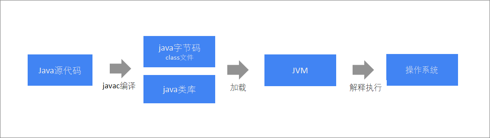
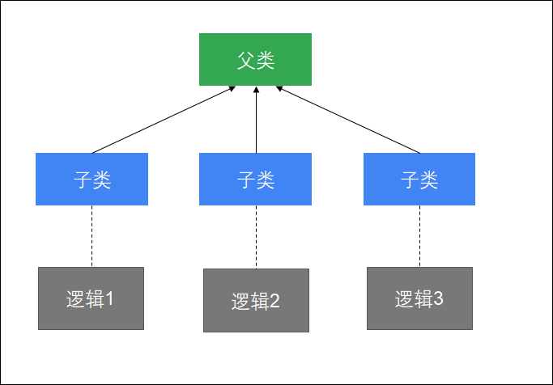
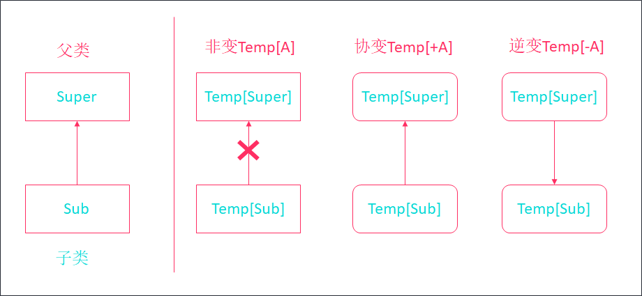
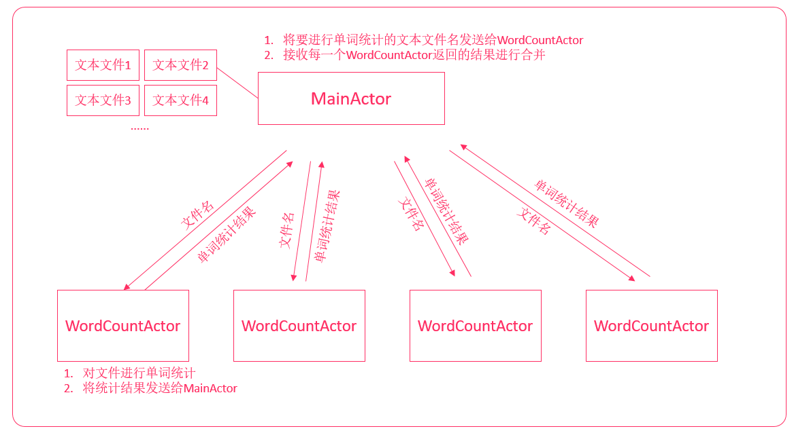

Scala教程
转载自黑马程序员
Scala第一章节
章节目标
- 理解Scala的相关概述
- 掌握Scala的环境搭建
- 掌握Scala小案例: 做最好的自己
1. Scala简介
1.1 概述
Scala(斯嘎拉)这个名字来源于"Scalable Language(可伸缩的语言)", 它是一门基于JVM的多范式编程语言, 通俗的说: Scala是一种运行在JVM上的函数式的面向对象语言. 之所以这样命名, 是因为它的设计目标是: 随着用户的需求一起成长. Scala可被广泛应用于各种编程任务, 从编写小型的脚本到构建巨型系统, 它都能胜任. 正因如此, Scala得以提供一些出众的特性, 例如: 它集成了面向对象编程和面向函数式编程的各种特性, 以及更高层的并发模型.
总而言之, Scala融汇了许多前所未有的特性, 而同时又运行于JVM之上, 随着开发者对Scala的兴趣日增, 以及越来越多的工具支持, 无疑Scala语言将成为你手上一门必不可少的工具.
基于JVM解释:Scala的运行环境和Java类似, 也是依赖JVM的.
多范式解释: Scala支持多种编程风格
1.2 Scala之父
Scala之父是: Martin·Odersky(马丁·奥德斯基), 他是EPFL（瑞士领先的技术大学）编程研究组的教授. 也是Typesafe公司(现已更名为: Lightbend公司)的联合创始人. 他在整个职业生涯中一直不断追求着一个目标：让写程序这样一个基础工作变得高效、简单、且令人愉悦. 他曾经就职于IBM研究院、耶鲁大学、卡尔斯鲁厄大学以及南澳大利亚大学. 在此之前，他在瑞士苏黎世联邦理工学院追随Pascal语言创始人Niklaus Wirth(1984年图灵奖获得者)学习，并于1989年获得博士学位.
1.3 语言特点
Scala是兼容的
兼容Java，可以访问庞大的Java类库，例如：操作mysql、redis、freemarker、activemq等等Scala是精简的
Scala表达能力强，一行代码抵得上多行Java代码，开发速度快Scala是高级的
Scala可以让你的程序保持短小, 清晰, 看起来更简洁, 更优雅Scala是静态类型的
Scala拥有非常先进的静态类型系统, 支持: 类型推断和模式匹配等Scala可以开发大数据应用程序
例如: Spark程序、Flink程序等等...
2. Scala程序和Java程序对比
2.1 程序的执行流程对比
Java程序编译执行流程

Scala程序编译执行流程

2.2 代码对比
需求:
定义一个学生类, 属性为: 姓名和年龄, 然后在测试类中创建对象并测试.
Java代码
xxxxxxxxxx351//定义学生类2public class Student{3 private String name; //姓名4 private int age; //年龄5 6 //空参和全参构造7 public Student(){}8 9 public Student(String name, int age){10 this.name = name;11 this.age = age;12 }13 14 //getXxx()和setXxx()方法15 public String getName() {16 return name;17 }18 public void setName(String name) {19 this.name = name;20 }21 public int getAge() {22 return age;23 }24 public void setAge(int age) {25 this.age = age;26 }27}28
29//测试类30public class StudentDemo {31 public static void main(String[] args) {32 Student s1 = new Student("张三", 23); //创建Student类型的对象s1, 并赋值33 System.out.println(s1); //打印对象, 查看结果.34 }35}Scala代码
xxxxxxxxxx31case class Student(var name:String, var age:Int) //定义一个Student类2val s1 = Student("张三", 23) //创建Student类型的对象s1, 并赋值3println(s1) //打印对象, 查看结果.
3. Scala环境搭建
3.1 概述
scala程序运行需要依赖于Java类库，那么必须要有Java运行环境，scala才能正确执行. 所以要编译运行scala程序，需要:
- JDK（JDK包含JVM）
- Scala编译器（Scala SDK）
接下来，需要依次安装以下内容：
- 安装JDK
- 安装Scala SDK
- 在IDEA中安装Scala插件
3.2 安装JDK
安装JDK 1.8 64位版本，并配置好环境变量, 此过程略.
3.3 安装Scala SDK
Scala SDK是scala语言的编译器，要开发scala程序，必须要先安装Scala SDK
本次安装的版本是: 2.11.12
步骤
下载Scala SDK.
官方下载地址: scala-lang.org/download/安装Scala SDK.
2.1 双击scala-2.11.12.msi，将scala安装在指定目录, 傻瓜式安装, 下一步下一步即可.2.2 安装路径要合法, 不要出现中文, 空格等特殊符号.测试是否安装成功
打开控制台，输入: scala -version
3.4 安装IDEA scala插件
IDEA默认是不支持scala程序开发的，所以需要在IDEA中安装scala插件, 让它来支持scala语言。
步骤
3.4.1 下载指定版本IDEA scala插件.
1. 下载的Scala插件必须和你安装的IDEA版本一致
2. 官方下载地址: http://plugins.jetbrains.com/plugin/1347-scala
3.4.2 IDEA配置scala插件
- 选择配置 > 选择插件
点击小齿轮 > 选择从本地安装插件

找到下载的插件位置，点击OK
3.4.3 重新启动IDEA
4. Scala解释器
4.1 概述
后续我们会使用scala解释器来学习scala基本语法，scala解释器像Linux命令一样，执行一条代码，马上就可以让我们看到执行结果，用来测试比较方便。
我们接下来学习：
- 启动scala解释器
- 在scala解释器中执行scala代码
- 退出scala解释器
4.2 启动scala解释器
要启动scala解释器，只需要以下几步：
- 按住
windows键 + r - 输入
scala即可
4.3 执行scala代码
在scala的命令提示窗口中输入println("hello, world")，回车执行.
4.4 退出解释器
方式一: 点击右上角的"×"
方式二: 输入:quit退出

5. 案例: 做最好的自己.
5.1 需求
提示用户录入他/她最想对自己说的一句话, 然后将这句话打印到控制台上.
5.2 目的
测试Scala和Java之间可以无缝互调(即: Scala兼容Java，可以访问庞大的Java类库).
5.3 思路分析
xxxxxxxxxx311. 因为涉及到键盘录入了, 所以先导包.22. 提示用户录入他/她最想对自己说的一句话.33. 接收用户录入的内容, 并打印.
5.4 参考代码
xxxxxxxxxx71//1. 导入Java中的Scanner类. 引入Java类库2import java.util.Scanner3//2. 提示用户录入他/她最想对自己说的一句话. Scala代码4println("请录入一句您最想对自己说的一句话: ")5//3. 打印用户录入的内容. Scala代码 + Java类库6//不忘初心, 方得始终, 做最好的自己!7println("我最想对自己说: " + new Scanner(System.in).nextLine())5.5 小彩蛋
其实Scala中也有自己独有的接收用户键盘录入数据的功能, 远比上边的写法要简单的多, 要优雅的多. 这种写法在后续章节我们也会学习到, 预知后事如何, 且听下回分晓.
Scala第二章节
章节目标
- 掌握变量, 字符串的定义和使用
- 掌握数据类型的划分和数据类型转换的内容
- 掌握键盘录入功能
- 理解Scala中的常量, 标识符相关内容
1. 输出语句和分号
1.1 输出语句
方式一: 换行输出
xxxxxxxxxx11格式: println(里边写你要打印到控制台的数据);方式二: 不换行输出
xxxxxxxxxx11格式: print(里边写你要打印到控制台的数据);注意:
不管是println(), 还是print()语句, 都可以同时打印多个值.格式为: println(值1, 值2, 值3...)
1.2 分号
Scala语句中, 单行代码最后的分号可写可不写. 如果是多行代码写在一行, 则中间的分号不能省略, 最后一条代码的分号可省略不写.
示例:
xxxxxxxxxx31println("Hello, Scala!") //最后的分号可写可不写2//如果多行代码写在一行, 则前边语句的分号必须写, 最后一条语句的分号可以省略不写.3println("Hello"); println("Scala")
2. Scala中的常量
2.1 概述
常量指的是: 在程序的运行过程中, 其值不能发生改变的量.
2.2 分类
字面值常量(常用的有以下几种)
- 整型常量
- 浮点型常量
- 字符常量
- 字符串常量
- 布尔常量
- 空常量
自定义常量(稍后解释)
2.3 代码演示
xxxxxxxxxx121//整型常量2println(10)3//浮点型常量4println(10.3)5//字符常量, 值要用单引号括起来6println('a')7//字符串常量, 值要用双引号括起来8println("abc")9//布尔常量, 值只有true和false10println(true)11//空常量12println(null)
3. Scala中的变量
3.1 概述
我们将来每一天编写scala程序都会定义变量, 那什么是变量, 它又是如何定义的呢?
变量, 指的就是在程序的执行过程中, 其值可以发生改变的量. 定义格式如下:
3.2 语法格式
Java变量定义
xxxxxxxxxx11int a = 0;在scala中，可以使用val或者var来定义变量，语法格式如下:
xxxxxxxxxx11val/var 变量名:变量类型 = 初始值其中
val定义的是不可重新赋值的变量, 也就是自定义常量.var定义的是可重新赋值的变量
注意: scala中定义变量时, 类型写在变量名后面
3.3 示例
需求：定义一个变量保存一个人的名字"tom"
步骤
- 打开scala解释器
- 定义一个字符串类型的变量用来保存名字
参考代码
xxxxxxxxxx21scala> val name:String = "tom"2name: String = tom3.4 val和var变量的区别
示例
给名字变量进行重新赋值为Jim，观察其运行结果
参考代码
xxxxxxxxxx31scala> name = "Jim"2<console>:12: error: reassignment to val3 name = "Jim"示例
使用var重新定义变量来保存名字"tom"，并尝试重新赋值为Jim，观察其运行结果
参考代码
xxxxxxxxxx51scala> var name:String = "tom"2name: String = tom3
4scala> name = "Jim"5name: String = Jim注意: 优先使用
val定义变量，如果变量需要被重新赋值，才使用var
3.5 使用类型推断来定义变量
scala的语法要比Java简洁，我们可以使用一种更简洁的方式来定义变量。
示例
使用更简洁的语法定义一个变量保存一个人的名字"tom"
参考代码
xxxxxxxxxx21scala> val name = "tom"2name: String = tomscala可以自动根据变量的值来自动推断变量的类型，这样编写代码更加简洁。
4. 字符串
scala提供多种定义字符串的方式，将来我们可以根据需要来选择最方便的定义方式。
- 使用双引号
- 使用插值表达式
- 使用三引号
4.1 使用双引号
语法
xxxxxxxxxx11val/var 变量名 = “字符串”示例
有一个人的名字叫"hadoop"，请打印他的名字以及名字的长度。
参考代码
xxxxxxxxxx21scala> println(name + name.length)2hadoop64.2 使用插值表达式
scala中，可以使用插值表达式来定义字符串，有效避免大量字符串的拼接。
语法
xxxxxxxxxx11val/var 变量名 = s"${变量/表达式}字符串"注意:
- 在定义字符串之前添加
s- 在字符串中，可以使用
${}来引用变量或者编写表达式
示例
请定义若干个变量，分别保存："zhangsan"、23、"male"，定义一个字符串，保存这些信息。
打印输出：name=zhangsan, age=23, sex=male
参考代码
xxxxxxxxxx141scala> val name = "zhangsan"2name: String = zhangsan3
4scala> val age = 235age: Int = 236
7scala> val sex = "male"8sex: String = male9
10scala> val result = s"name=${name}, age=${age}, sex=${sex}"11result: String = name=zhangsan, age=23, sex=male12
13scala> println(result)14name=zhangsan, age=23, sex=male4.3 使用三引号
如果有大段的文本需要保存，就可以使用三引号来定义字符串。例如：保存一大段的SQL语句。三个引号中间的所有内容都将作为字符串的值。
语法
xxxxxxxxxx21val/var 变量名 = """字符串12字符串2"""示例
定义一个字符串，保存以下SQL语句
xxxxxxxxxx61select2 *3from4 t_user5where6 name = "zhangsan"打印该SQL语句
参考代码
xxxxxxxxxx81val sql = """select2 | *3 | from4 | t_user5 | where6 | name = "zhangsan""""7
8println(sql)4.4 扩展: 惰性赋值
在企业的大数据开发中，有时候会编写非常复杂的SQL语句，这些SQL语句可能有几百行甚至上千行。这些SQL语句，如果直接加载到JVM中，会有很大的内存开销, 如何解决这个问题呢？
当有一些变量保存的数据较大时，而这些数据又不需要马上加载到JVM内存中。就可以使用惰性赋值来提高效率。
语法格式：
xxxxxxxxxx11lazy val/var 变量名 = 表达式示例
在程序中需要执行一条以下复杂的SQL语句，我们希望只有用到这个SQL语句才加载它。
xxxxxxxxxx331"""insert overwrite table adm.itcast_adm_personas2 select3 a.user_id,4 a.user_name,5 a.user_sex,6 a.user_birthday,7 a.user_age,8 a.constellation,9 a.province,10 a.city,11 a.city_level,12 a.hex_mail,13 a.op_mail,14 a.hex_phone,15 a.fore_phone,16 a.figure_model,17 a.stature_model,18 b.first_order_time,19 b.last_order_time,20 ...21 d.month1_hour025_cnt,22 d.month1_hour627_cnt,23 d.month1_hour829_cnt,24 d.month1_hour10212_cnt,25 d.month1_hour13214_cnt,26 d.month1_hour15217_cnt,27 d.month1_hour18219_cnt,28 d.month1_hour20221_cnt,29 d.month1_hour22223_cnt30 from gdm.itcast_gdm_user_basic a31 left join gdm.itcast_gdm_user_consume_order b on a.user_id=b.user_id32 left join gdm.itcast_gdm_user_buy_category c on a.user_id=c.user_id33 left join gdm.itcast_gdm_user_visit d on a.user_id=d.user_id;"""参考代码
xxxxxxxxxx71scala> lazy val sql = """insert overwrite table adm.itcast_adm_personas2 | select3 | a.user_id,4 ....5 | left join gdm.itcast_gdm_user_buy_category c on a.user_id=c.user_id6 | left join gdm.itcast_gdm_user_visit d on a.user_id=d.user_id;"""7sql: String = <lazy>
5. 标识符
5.1 概述
实际开发中, 我们会编写大量的代码, 这些代码中肯定会有变量, 方法, 类等. 那它们该如何命名呢? 这就需要用到标识符了. 标识符就是用来给变量, 方法, 类等起名字的. Scala中的标识符和Java中的标识符非常相似.
5.2 命名规则
- 必须由
大小写英文字母, 数字, 下划线_, 美元符$, 这四部分任意组合组成. - 数字不能开头.
- 不能和Scala中的关键字重名.
- 最好做到见名知意.
5.3 命名规范
变量或方法: 从第二个单词开始, 每个单词的首字母都大写, 其他字母全部小写(小驼峰命名法).
xxxxxxxxxx11zhangSanAge, student_Country, getSum类或特质(Trait): 每个单词的首字母都大写, 其他所有字母全部小写(大驼峰命名法)
xxxxxxxxxx11Person, StudentDemo, OrderItems包: 全部小写, 一般是公司的域名反写, 多级包之间用.隔开.
xxxxxxxxxx11com.itheima.add, cn.itcast.update
6. 数据类型
6.1 简述
数据类型是用来约束变量(常量)的取值范围的. Scala也是一门强类型语言, 它里边的数据类型绝大多数和Java一样.我们主要来学习
- 与Java不一样的一些用法
- scala中数据类型的继承体系
6.2 数据类型
| 基础类型 | 类型说明 |
|---|---|
| Byte | 8位带符号整数 |
| Short | 16位带符号整数 |
| Int | 32位带符号整数 |
| Long | 64位带符号整数 |
| Char | 16位无符号Unicode字符 |
| String | Char类型的序列（字符串） |
| Float | 32位单精度浮点数 |
| Double | 64位双精度浮点数 |
| Boolean | true或false |
注意下 scala类型与Java的区别
[!NOTE]
- scala中所有的类型都使用大写字母开头
- 整形使用
Int而不是Integer- scala中定义变量可以不写类型，让scala编译器自动推断
- Scala中默认的整型是Int, 默认的浮点型是: Double
6.3 Scala类型层次结构

| 类型 | 说明 |
|---|---|
| Any | 所有类型的父类，它有两个子类AnyRef与AnyVal |
| AnyVal | 所有数值类型的父类 |
| AnyRef | 所有对象类型（引用类型）的父类 |
| Unit | 表示空，Unit是AnyVal的子类，它只有一个的实例{% em %}() {% endem %} 它类似于Java中的void，但scala要比Java更加面向对象 |
| Null | Null是AnyRef的子类，也就是说它是所有引用类型的子类。它的实例是{% em %}null{% endem %} 可以将null赋值给任何对象类型 |
| Nothing | 所有类型的子类, 不能直接创建该类型实例，某个方法抛出异常时，返回的就是Nothing类型，因为Nothing是所有类的子类，那么它可以赋值为任何类型 |
6.4 思考题
以下代码是否有问题？
xxxxxxxxxx11val b:Int = nullScala会解释报错： Null类型并不能转换为Int类型，说明Null类型并不是Int类型的子类
7. 类型转换
7.1 概述
当Scala程序在进行运算或者赋值动作时, 范围小的数据类型值会自动转换为范围大的数据类型值, 然后再进行计算.例如: 1 + 1.1的运算结果就是一个Double类型的2.1. 而有些时候, 我们会涉及到一些类似于"四舍五入"的动作, 要把一个小数转换成整数再来计算. 这些内容就是Scala中的类型转换.
Scala中的类型转换分为
值类型的类型转换和引用类型的类型转换, 这里我们先重点介绍:值类型的类型转换.值类型的类型转换分为:
- 自动类型转换
- 强制类型转换
7.2 自动类型转换
解释
范围小的数据类型值会自动转换为范围大的数据类型值, 这个动作就叫: 自动类型转换.
自动类型转换从小到大分别为:Byte, Short, Char -> Int -> Long -> Float -> Double示例代码
xxxxxxxxxx31val a:Int = 32val b:Double = 3 + 2.21 //因为是int类型和double类型的值进行计算, 所以最终结果为: Double类型3val c:Byte = a + 1 //这样写会报错, 因为最终计算结果是Int类型的数据, 将其赋值Byte类型肯定不行.
7.3 强制类型转换
解释
范围大的数据类型值通过一定的格式(强制转换函数)可以将其转换成范围小的数据类型值, 这个动作就叫: 强制类型转换.
注意: 使用强制类型转换的时候可能会造成精度缺失问题!格式
xxxxxxxxxx11val/var 变量名:数据类型 = 具体的值.toXxx //Xxx表示你要转换到的数据类型- 参考代码
xxxxxxxxxx21val a:Double = 5.212val b:Int = a.toInt7.4 值类型和String类型之间的相互转换
1. 值类型的数据转换成String类型
格式一:
xxxxxxxxxx11val/var 变量名:String = 值类型数据 + ""格式二:
xxxxxxxxxx11val/var 变量名:String = 值类型数据.toString示例
将Int, Double, Boolean类型的数据转换成其对应的字符串形式.
参考代码:
xxxxxxxxxx131val a1:Int = 102val b1:Double = 2.13val c1:Boolean = true4
5//方式一: 通过和空字符串拼接的形式实现6val a2:String = a1 + ""7val b2:String = b1 + ""8val c2:String = c1 + ""9
10//方式二: 通过toString函数实现11val a3:String = a1.toString12val b3:String = b1.toString13val c3:String = c1.toString2. String类型的数据转换成其对应的值类型
格式:
xxxxxxxxxx11val/var 变量名:值类型 = 字符串值.toXxx //Xxx表示你要转换到的数据类型注意:
- String类型的数据转成Char类型的数据, 方式有点特殊, 并不是调用toChar, 而是toCharArray
- 这点目前先了解即可, 后续我们详细解释
需求:
将字符串类型的整数, 浮点数, 布尔数据转成其对应的值类型数据.
参考代码:
xxxxxxxxxx101val s1:String = "100"2val s2:String = "2.3"3val s3:String = "false"4
5//将字符串类型的数据转成其对应的: Int类型6val a:Int = s1.toInt7//将字符串类型的数据转成其对应的: Double类型8val b:Double = s2.toDouble9//将字符串类型的数据转成其对应的: Boolean类型10val c:Boolean = s3.toBoolean
8. 键盘录入
8.1 概述
前边我们涉及到的数据, 都是我们写"死"的, 固定的数据, 这样做用户体验并不是特别好. 那如果这些数据是由用户录入, 然后我们通过代码接收, 就非常好玩儿了. 这就是接下来我们要学习的Scala中的"键盘录入"功能.
8.2 使用步骤
导包
格式: import scala.io.StdIn
通过
StdIn.readXxx()来接收用户键盘录入的数据接收字符串数据: StdIn.readLine()
接收整数数据: StdIn.readInt()
8.3 示例
提示用户录入字符串, 并接收打印.
xxxxxxxxxx31println("请录入一个字符串: ")2val str = StdIn.readLine()3println("您录入的字符串内容为: " + str)提示用户录入整数, 并接收打印.
xxxxxxxxxx31println("请录入一个整数: ")2val num = StdIn.readInt()3println("您录入的数字为: " + num)
9. 案例: 打招呼
9.1 概述
聊了这么久, 赶紧来和小伙伴儿们来打个招呼吧.
需求: 提示用户录入他/她的姓名和年龄, 接收并打印.
9.2 具体步骤
- 提示用户录入姓名.
- 接收用户录入的姓名.
- 提示用户录入年龄.
- 接收用户录入的年龄.
- 将用户录入的数据(姓名和年龄)打印到控制台上.
9.3 参考代码
xxxxxxxxxx101//1. 提示用户录入姓名.2println("请录入您的姓名: ")3//2. 接收用户录入的姓名.4val name = StdIn.readLine()5//3. 提示用户录入年龄.6println("请录入您的年龄: ")7//4. 接收用户录入的年龄.8val age = StdIn.readInt()9//5. 将用户录入的数据(姓名和年龄)打印到控制台上.10println(s"大家好, 我叫${name}, 我今年${age}岁了, 很高兴和大家一起学习Scala!")Scala第三章节
章节目标
- 理解运算符的相关概述
- 掌握算术, 赋值, 关系, 逻辑运算符的用法
- 掌握交换变量案例
- 理解位运算符的用法
1. 算术运算符
1.1 运算符简介
用来拼接变量或者常量的符号就叫: 运算符, 而通过运算符连接起来的式子就叫: 表达式. 实际开发中, 我们会经常用到它.
例如:
10 + 3 这个就是一个表达式, 而+号, 就是一个运算符.
注意: 在Scala中, 运算符并不仅仅是运算符, 也是函数的一种, 这点大家先了解即可, 后续我们详细讲解.
1.2 运算符的分类
算术运算符
赋值运算符
关系运算符
逻辑运算符
位运算符
注意: Scala中是没有三元运算符的, 被if-else给替代了.
1.3 算术运算符
算术运算符指的就是用来进行算术操作的符号, 常用的有以下几种:
| 运算符 | 功能解释 |
|---|---|
| + | 加号, 功能有3点. 1) 表示正数 2) 普通的加法操作 3) 字符串的拼接 |
| - | 减号, 功能有2点. 1) 表示负数 2) 普通的减法操作 |
| * | 乘号, 用于获取两个数据的乘积 |
| / | 除法, 用于获取两个数据的商 |
| % | 取余(也叫取模), 用于获取两个数据的余数 |
注意:
Scala中是没有++, --这两个算术运算符的, 这点和Java中不同.
整数相除的结果, 还是整数. 如果想获取到小数, 则必须有浮点型数据参与.
例如: 10 / 3 结果是3 10 / 3.0 结果是: 3.3333(无限循环)关于+号拼接字符串: 任意类型的数据和字符串拼接, 结果都将是一个新的字符串.
关于%操作, 假设求
a % b的值, 它的底层原理其实是:a - a/b * b
1.4 代码演示
需求: 演示算术运算符的常见操作.
参考代码:
xxxxxxxxxx201//演示+号操作2println(+3)3println(10 + 3)4println("hello" + 10)5
6//演示-号操作7println(-5)8println(10 - 5)9
10//演示*号操作11println(5 * 3)12
13//演示/号操作14println(10 / 3)15println(10 / 3.0)16
17//演示%(取余)操作18println(10 % 3) //结果是1, 具体运算过程: 10 - 10/3 * 3 = 10 - 3 * 3 = 119println(10 % -3) //结果是1, 具体运算过程: 10 - 10/-3 * -3 = 10 - -3 * -3 = 10 - 9 = 120println(-10 % 3) //结果是-1, 具体运算过程: -10 - -10/3 * 3 = -10 - -3 * 3 = -10 + 9 = -1
2. 赋值运算符
2.1 概述
赋值运算符指的就是用来进行赋值操作的符号. 例如: 把一个常量值, 或者一个变量值甚至是某一段代码的执行结果赋值给变量, 这些都要用到赋值运算符.
2.2 分类
赋值运算符常用的有两类
基本赋值运算符
=就是基本的赋值运算符, 例如: var a:Int = 3, 就是把常量值3赋值给变量a扩展赋值运算符
+=, -=, *=, /=, %=
注意:
赋值运算符的左边必须是: 变量, 不能是常量. 例如: 3 = 5, 这种写法就是错误的.
关于扩展赋值运算符, 其实就是把左边的数据和右边的数据进行指定的操作, 然后把结果赋值给左边.
例如; a += 3 就是把变量a的值和常量3进行加法操作, 然后把结果赋值给变量a
2.3 代码演示
xxxxxxxxxx121//将常量值1赋值给变量a2var a:Int = 1 //注意: 因为后续代码要修改变量a的值, 所以变量a要用var修饰3//对变量a进行加3操作, 然后把结果重新赋值给变量a4a += 3 //a的最终结果为: a = 45//对变量a进行减2操作, 然后把结果重新赋值给变量a6a -= 2 //a的最终结果为: a = 27//对变量a进行乘3操作, 然后把结果重新赋值给变量a8a *= 3 //a的最终结果为: a = 69//对变量a进行除2操作, 然后把结果重新赋值给变量a10a /= 2 //a的最终结果为: a = 311//对变量a和2进行取余操作, 然后把结果重新赋值给变量a12a %= 2 //a的最终结果为: a = 1
3. 关系运算符
3.1 概述
关系运算符指的就是用来进行比较操作的符号. 例如: 数据是否相等, 是否不等, 数据1大还是数据2大...等这些操作.
3.2 分类
| 运算符 | 功能解释 |
|---|---|
| > | 用来判断前边的数据是否大于后边的数据 |
| >= | 用来判断前边的数据是否大于或者等于后边的数据 |
| < | 用来判断前边的数据是否小于后边的数据 |
| <= | 用来判断前边的数据是否小于或者等于后边的数据 |
| == | 用来判断两个数据是否相等 |
| != | 用来判断两个数据是否不等 |
注意:
- 关系表达式不管简单还是复杂, 最终结果一定是Boolean类型的值, 要么是true, 要么是false.
- 千万不要把==写成=, 否则结果可能不是你想要的.
3.3 代码演示
xxxxxxxxxx181//定义两个Int类型的变量a, b, 分别赋值为3, 52var a:Int = 33var b:Int = 54//判断a是否大于b, 并打印结果 5println(a > b) //false6//判断a是否大于等于b, 并打印结果7println(a >= 3) //true8//判断a是否小于b, 并打印结果9println(a < b) //true10//判断a是否小于等于b, 并打印结果11println(a <= 3) //true12//判断a和b是否不等, 并打印结果13println(a != b) //true14//判断a和b是否相等, 并打印结果15println(a == b) //false16//如果把==写成了=, 其实是把变量b的值赋值给变量a17println(a = b) //输出结果是一对小括号"()", 即: 没有打印值.18println(a) //再次打印变量a, 打印结果是:53.4 关系运算符延伸
学过Java的同学会发现, 上述的Scala中的关系运算符用法和Java中是一样的, 那有和Java不一样的地方吗?
答案是: 有.
| 需求描述 | Scala代码 | Java代码 |
|---|---|---|
| 比较数据值 | == 或者 != | equals()方法 |
| 比较引用值(地址值) | eq方法 | == 或者 != |
示例
有一个字符串"abc"，再创建第二个字符串，值为：在第一个字符串后拼接一个空字符串。
然后使用比较这两个字符串是否相等、再查看它们的引用值是否相等。
参考代码
xxxxxxxxxx41val s1 = "abc"2val s2 = s1 + ""3s1 == s2 //结果是: true, 因为比较的是 数据值4s1.eq(s2) //结果是: false, 因为比较的是 地址值
4. 逻辑运算符
4.1 概述
逻辑运算符指的就是用来进行逻辑操作的符号. 可以简单理解为它是: 组合判断. 例如: 判断多个条件是否都满足, 或者满足其中的某一个, 甚至还可以对某个判断结果进行取反操作.
4.2 分类
| 运算符 | 功能解释 |
|---|---|
| && | 逻辑与, 要求所有条件都满足(即: 结果为true), 简单记忆: 有false则整体为false. |
| || | 逻辑或, 要求只要满足任意一个条件即可, 简单记忆: 有true则整体为true. |
| ! | 逻辑非, 用来进行取反操作的. 即: 以前为true, 取反后为false, 以前为false, 取反后为true. |
注意:
逻辑表达式不管简单还是复杂, 最终结果一定是Boolean类型的值, 要么是true, 要么是false.
在Scala代码中, 不能对一个Boolean类型的数据进行连续取反操作, 但是在Java中是可以的.
- 即: !!false, 这样写会报错, 不支持这种写法.
4.3 代码演示
xxxxxxxxxx171//相当于: false && true2println(3 > 5 && 2 < 3) //结果为: false3//我们可以简写代码为:4//逻辑与: 有false则整体为false.5println(false && true) //结果为: false6println(true && false) //结果为: false7println(false && false) //结果为: false8println(true && true) //结果为: true9
10println(false || true) //结果为: true11println(true || false) //结果为: true12println(false || false) //结果为: false13println(true || true) //结果为: true14
15println(!false) //结果为: true16println(!true) //结果为: false17println(!!true) //这样写会报错, Scala不支持这种写法, 但是Java代码支持这种写法.
5. 位运算符
5.1 铺垫知识
要想学好位运算符, 你必须得知道三个知识点:
- 什么是进制
- 什么是8421码
- 整数的原码, 反码, 补码计算规则
5.1.1 关于进制
通俗的讲, 逢几进一就是几进制, 例如: 逢二进一就是二进制, 逢十进一就是十进制, 常用的进制有以下几种:
| 进制名称 | 数据组成规则 | 示例 |
|---|---|---|
| 二进制 | 数据以0b(大小写均可)开头, 由数字0和1组成 | 0b10001001, 0b00101010 |
| 八进制 | 数据以0开头, 由数字0~7组成 | 064, 011 |
| 十进制 | 数据直接写即可, 无特殊开头, 由数字0~9组成 | 10, 20, 333 |
| 十六进制 | 数据以0x(大小写均可)开头, 由数字0~9, 字母A-F组成(大小写均可) | 0x123F, 0x66ABC |
注意:
关于二进制的数据, 最前边的那一位叫: 符号位, 0表示正数, 1表示负数. 其他位叫: 数值位.
例如: 0b10001001 结果就是一个: 负数, 0b00101010 结果就是一个: 正数.
5.1.2 关于8421码
8421码就是用来描述二进制位和十进制数据之间的关系的, 它可以帮助我们快速的计算数据的二进制或十进制形式.
8421码对应关系如下:
二进制位 0 0 0 0 0 0 0 0
对应的十进制数据 128 64 32 16 8 4 2 1
注意:
xxxxxxxxxx711. 计算规则: 二进制位从右往左数, 每多一位, 对应的十进制数据 乘以2.22. 二进制和十进制相互转换的小技巧:3* 二进制转十进制: 获取该二进制位对应的十进制数据, 然后累加即可.5* 例如: 0b101对应的十进制数据计算步骤: 4 + 0 + 1 = 56* 十进制转二进制: 对十进制数据进行拆解, 看哪些数字相加等于它, 然后标记成二进制即可.7* 例如: 10 对应的二进制数据计算步骤: 10 = 8 + 2 = 0b1010
5.1.3 关于整数的原反补码计算规则
所谓的原反补码, 其实指的都是二进制数据, 把十进制的数据转成其对应的二进制数据, 该二进制数据即为: 原码.
注意: 计算机底层存储, 操作和运算数据, 都是采用
数据的二进制补码形式来实现的.
正数
- 正数的原码, 反码, 补码都一样, 不需要特殊计算.
负数
- 负数的反码计算规则: 原码的符号位不变, 数值位按位取反(以前为0现在为1, 以前为1现在为0)
- 负数的补码计算规则: 反码 + 1
5.2 概述
位运算符指的就是按照位(Bit)来快速操作数据值, 它只针对于整型数据. 因为计算机底层存储, 操作, 运算采用的都是数据的二进制补码形式, 且以后我们要经常和海量的数据打交道, 为了提高计算效率, 我们就可以使用位运算符来实现快速修改数据值的操作.
5.3 分类
| 运算符 | 功能解释 |
|---|---|
| & | 按位与, 规则: 有0则0, 都为1则为1. |
| | | 按位或, 规则: 有1则1, 都为0则为0. |
| ^ | 按位异或, 规则: 相同为0, 不同为1. |
| ~ | 按位取反, 规则: 0变1, 1变0. |
| << | 按位左移, 规则: 每左移一位, 相当于该数据乘2, 例如: 2 << 1, 结果为4 |
| >> | 按位右移, 规则: 每右移一位, 相当于该数据除2, 例如: 6 >> 1, 结果为3 |
注意:
- 位运算符只针对于整型数据.
- 运算符操作的是数据的二进制补码形式.
- 小技巧: 一个数字被同一个数字位异或两次, 该数字值不变. 即: 10 ^ 20 ^ 20, 结果还是10
5.4 代码演示
xxxxxxxxxx261//定义两个变量a和b, 初始化值分别为: 3, 52val a = 3 //二进制数据: 0000 00113val b = 5 //二进制数据: 0000 01014
5//结果为: 0000 0001, 转化成十进制, 结果为: 16println(a & b) //打印结果为: 17
8//结果为: 0000 0111, 转化成十进制, 结果为: 79println(a | b) //打印结果为: 710
11//结果为: 0000 0110, 转换成十进制, 结果为: 612println(a ^ b) //打印结果为: 613
14//计算流程: 1111 1100(补码) -> 1111 1011(反码) -> 1000 0100(原码) -> 十进制数据: -415println(~ a) //打印结果为: -416
17//计算流程: 1000 0011(-3原码) -> 1111 1100(-3反码) -> 1111 1101(-3补码) -> 0000 0010(取反后新补码) -> 十进制数据: 218println(~ -3) //打印结果为: 219
20//计算流程: 0000 0011(3的补码) -> 0000 1100(新的补码) -> 十进制数据: 1221println(a << 2) //打印结果为: 1222
23//计算流程: 0000 0011(3的补码) -> 0000 0001(新的补码) -> 十进制数据: 124println(a >> 1) //打印结果为: 125
26println(a ^ b ^ b) //打印结果为: 3
6. 案例: 交换两个变量的值
6.1 需求
已知有两个Int类型的变量a和b, 初始化值分别为10和20, 请写代码实现变量a和变量b的值的交换.
即最终结果为: a=20, b=10.
注意: 不允许直接写
a=20, b=10这种代码.
6.2 参考代码
方式一: 通过算术运算符实现.
xxxxxxxxxx111//定义两个Int类型的变量a和b, 初始化值分别为10和202var a = 103var b = 204//将变量a和b的计算结果赋值给变量a5a = a + b //a = 30, b = 206//计算并赋值7b = a - b //a = 30, b = 108a = a - b //a = 20, b = 109//打印结果10println("a: " + a) //a: 2011println("b: " + b) //b: 10方式二: 通过定义临时变量实现
xxxxxxxxxx121//定义两个Int类型的变量a和b, 初始化值分别为10和202var a = 103var b = 204//定义临时变量temp, 记录变量a的值5var temp = a //a = 10, b = 20, temp = 106//把变量b的值赋值给a7a = b //a = 20, b = 20, temp = 108//把临时变量temp的值赋值给b9b = temp //a = 20, b = 10, temp = 1010//打印结果11println("a: " + a) //a: 2012println("b: " + b) //b: 10方式三: 通过位运算符实现
xxxxxxxxxx111//定义两个Int类型的变量a和b, 初始化值分别为10和202var a = 103var b = 204//定义临时变量temp, 记录变量a和b的位异或值(这个值不需要我们计算)5var temp = a ^ b //即: temp = 10 ^ 206//通过位异或进行交换变量值7a = a ^ temp //运算流程: a = a ^ temp = a ^ a ^ b = 10 ^ 10 ^ 20 = 208b = b ^ temp //运算流程: b = b ^ temp = b ^ a ^ b = 20 ^ 10 ^ 20 = 109//打印结果10println("a: " + a) //a: 2011println("b: " + b) //b: 10
Scala第四章节
章节目标
- 掌握分支结构的格式和用法
- 掌握for循环和while循环的格式和用法
- 掌握控制跳转语句的用法
- 掌握循环案例
- 理解do.while循环的格式和用法
1. 流程控制结构
1.1 概述
在实际开发中, 我们要编写成千上万行代码, 代码的顺序不同, 执行结果肯定也会受到一些影响, 并且有些代码是满足特定条件才能执行的, 有些代码是要重复执行的. 那如何合理规划这些代码呢? 这就需要用到: 流程控制结构了.
1.2 分类
顺序结构
选择(分支)结构
循环结构
注意: Scala和Java中的流程控制结构是基本一致的.
2. 顺序结构
2.1 概述
顺序结构是指: 程序是按照从上至下, 从左至右的顺序, 依次逐行执行的, 中间没有任何判断和跳转.
如图:
注意: 顺序结构是Scala代码的默认流程控制结构.
2.2 代码演示
xxxxxxxxxx51val a = 102println("a: " + a) //打印结果为103
4println("键盘敲烂, ")5println("月薪过万! ")2.3 思考题
下边这行代码的打印结果应该是什么呢?
xxxxxxxxxx11println(10 + 10 + "Hello,Scala" + 10 + 10)提示: 代码是按照从上至下, 从左至右的顺序, 依次逐行执行的.
3. 选择结构(if语句)
3.1 概述
选择结构是指: 某些代码的执行需要依赖于特定的判断条件, 如果判断条件成立, 则代码执行, 否则, 代码不执行.
3.2 分类
- 单分支
- 双分支
- 多分支
3.3 单分支
所谓的单分支是指: 只有一个判断条件的if语句.
3.3.1 格式
xxxxxxxxxx31if(关系表达式) {2 //具体的代码3}注意: 关系表达式不管简单还是复杂, 结果必须是Boolean类型的值.
3.3.2 执行流程
先执行关系表达式, 看其结果是true还是false.
如果是true, 则执行具体的代码, 否则, 不执行.
如图:
3.3.3 示例
需求:
定义一个变量记录某个学生的成绩, 如果成绩大于或者等于60分, 则打印: 分数及格.
参考代码
xxxxxxxxxx61//定义变量, 记录成绩2val score = 613//判断成绩是否不小于60分4if(score >= 60) {5 println("成绩及格")6}3.4 双分支
所谓的双分支是指: 只有两个判断条件的if语句.
3.4.1 格式
xxxxxxxxxx51if(关系表达式) {2 //代码13} else {4 //代码25}3.4.2 执行流程
- 先执行关系表达式, 看其结果是true还是false.
- 如果是true, 则执行代码1. 如果是false, 则执行代码2.
- 如图:
3.4.3 示例
需求:
定义一个变量记录某个学生的成绩, 如果成绩大于或者等于60分, 则打印: 分数及格, 否则打印分数不及格.
参考代码
xxxxxxxxxx81//定义变量, 记录成绩2val score = 613//判断成绩是否不小于60分4if(score >= 60) {5 println("成绩及格")6} else {7 println("成绩不及格")8}3.5 多分支
所谓的多分支是指: 有多个判断条件的if语句.
3.5.1 格式
xxxxxxxxxx91if(关系表达式1) {2 //代码13} else if(关系表达式2) {4 //代码25}else if(关系表达式n) { //else if可以有多组6 //代码n7} else {8 //代码n+1 //所有的关系表达式都不成立的时候, 执行这里的代码.9}3.5.2 执行流程
- 先执行关系表达式1, 看其结果是true还是false.
- 如果是true, 则执行代码1, 分支语句结束. 如果是false, 则执行关系表达式2, 看其结果是true还是false.
- 如果是true, 则执行代码2. 分支语句结束. 如果是false, 则执行关系表达式3, 看其结果是true还是false.
- 以此类推, 直到所有的关系表达式都不满足, 执行最后一个else中的代码.
- 如图:
3.5.3 示例
需求:
定义一个变量记录某个学生的成绩, 根据成绩发放对应的奖励, 奖励机制如下:
[90, 100] -> VR设备一套
[80, 90) -> 考试卷一套
[0, 80) -> 组合拳一套
其他 -> 成绩无效
参考代码
xxxxxxxxxx121//定义变量, 记录成绩2val score = 803//根据成绩发放对应的奖励4if(score >= 90 && score <= 100) {5 println("VR设备一套")6} else if(score >= 80 && score < 90) {7 println("考试卷一套")8} else if(score >= 0 && score < 80) {9 println("组合拳一套")10} else {11 println("成绩无效")12}3.6 注意事项
if语句在使用时, 要注意的事项有以下三点:
- 和Java一样, 在Scala中, 如果大括号{}内的逻辑代码只有一行, 则大括号可以省略.
- 在scala中，条件表达式也是有返回值的
- 在scala中，没有三元表达式，可以使用if表达式替代三元表达式
示例
定义一个变量sex，再定义一个result变量，如果sex等于"male"，result等于1，否则result等于0
参考代码
xxxxxxxxxx61//定义变量, 表示性别2val sex = "male"3//定义变量, 记录if语句的返回值结果4val result = if(sex == "male") 1 else 05//打印结果为 result: 16println("result: " + result)3.7 嵌套分支
有些时候, 我们会涉及到"组合判断", 即一个分支结构中又嵌套了另一个分支结构, 这种写法就叫嵌套分支. 里边的那个分支结构叫: 内层分支, 外边的那个分支结构叫: 外层分支.
示例
定义三个变量a,b,c, 初始化值分别为: 10, 20, 30, 通过if分支语句, 获取其中的最大值.
思路分析
- 定义三个变量a, b, c, 分别记录要进行操作的值.
- 定义变量max, 用来记录获取到的最大值.
- 先判断a是否大于或者等于b.
- 条件成立, 说明 a大(或者等于b), 接着比较a和c的值, 获取最大值, 并将结果赋值给变量max
- 条件不成立, 说明 b大, 接着比较b和c的值, 获取最大值, 并将结果赋值给变量max
- 此时, max记录的就是a, b, c这三个变量的最大值, 打印即可.
参考代码
xxxxxxxxxx161//1. 定义三个变量a, b, c, 分别记录要进行操作的值.2val a = 103val b = 204val c = 305//2. 定义变量max, 用来记录获取到的最大值.6var max = 07//3. 先判断a是否大于或者等于b.8if(a >= b) {9 //4. 走这里说明a大(或者等于b), 接着比较a和c的值10 max = if(a >= c) a else c11} else {12 //5. 走这里说明b大, 接着比较b和c的值13 max = if(b >= c) b else c14}15//6. 打印max的值16println("max: " + max)注意: 嵌套一般不超过3层.
3.8 扩展: 块表达式
- scala中，使用{}表示一个块表达式
- 和if表达式一样，块表达式也是有值的
- 值就是最后一个表达式的值
问题
请问以下代码，变量a的值是什么？
xxxxxxxxxx51val a = {2 println("1 + 1")3 1 + 14}5println("a: " + a)
4. 循环结构
4.1 概述
循环，指的是事物周而复始的变化。而Scala中的循环结构，是指: 使一部分代码按照次数或一定的条件反复执行的一种代码结构。例如: 打印10次"Hello, Scala!", 如果纯写输出语句, 需要写10次, 而通过循环来实现的话, 输出语句只需要写1次, 这样就变得很简单了.
4.2 分类
- for循环
- while循环
- do.while循环
注意: 这三种循环推荐使用for循环, 因为它的语法更简洁, 更优雅.
4.3 for循环
在Scala中, for的格式和用法和Java中有些差异, Scala中的for表达式功能更加强大.
4.3.1 格式
xxxxxxxxxx31for(i <- 表达式/数组/集合) {2 //逻辑代码3}注意: 执行流程和Java一致
4.3.2 简单循环
需求:
打印10次"Hello, Scala!"
参考代码:
xxxxxxxxxx61//定义一个变量, 记录1到10的数字2val nums = 1 to 10 //to是Scala中的一个关键字3//通过for循环, 打印指定的内容4for(i <- nums) {5 println("Hello, Scala! " + i)6}上述代码可以简写成:
xxxxxxxxxx11for(i <- 1 to 10) println("Hello, Scala! " + i)4.3.3 嵌套循环
需求: 使用for表达式，打印以下字符, 每次只能输出一个"*"
xxxxxxxxxx31*****2*****3*****步骤
- 使用for表达式打印3行，5列星星
- 每打印5个星星，换行
参考代码
xxxxxxxxxx161//写法一: 普通写法2for(i <- 1 to 3) { //外循环控制行数3 for(j <- 1 to 5) { //内循环控制列数4 print("*") //每次打印一个*5 }6 println() //打印完一行(5个*)之后, 记得换行7}8
9//写法二: 压缩版10for(i <- 1 to 3) { 11 //这是两行代码12 for(j <- 1 to 5) if(j == 5) println("*") else print("*")13}14
15//写法三: 合并版16for(i <- 1 to 3; j <- 1 to 5) if(j == 5) println("*") else print("*")4.3.4 守卫
for表达式中，可以添加if判断语句，这个if判断就称之为守卫。我们可以使用守卫让for表达式更简洁。
语法
xxxxxxxxxx31for(i <- 表达式/数组/集合 if 表达式) {2 //逻辑代码3}示例
使用for表达式打印1-10之间能够整除3的数字
参考代码
xxxxxxxxxx21// 添加守卫，打印能够整除3的数字2for(i <- 1 to 10 if i % 3 == 0) println(i)4.4.5 for推导式
Scala中的for循环也是有返回值的, 在for循环体中，可以使用yield表达式构建出一个集合(可以简单理解为: 就是一组数据)，我们把使用yield的for表达式称之为推导式.
示例
生成一个10、20、30...100的集合
参考代码
xxxxxxxxxx31// for推导式：for表达式中以yield开始，该for表达式会构建出一个集合2val v = for(i <- 1 to 10) yield i * 103println(v)4.4 while循环
scala中while循环和Java中是一致的, 所以学起来非常简单.
4.4.1 格式
xxxxxxxxxx51初始化条件2while(判断条件) {3 //循环体4 //控制条件5}4.4.2 执行流程
- 执行初始化条件.
- 执行判断条件, 看其结果是true还是false.
- 如果是false则循环结束.
- 如果是true则执行循环体.
- 执行控制条件.
- 返回第二步, 重复执行.
4.4.3 示例
需求:
打印1-10的数字
参考代码
xxxxxxxxxx91//初始化条件2var i = 13//判断条件4while(i <= 10) {5 //循环体6 println(i)7 //控制条件8 i = i + 19}4.5 do.while循环
scala中do.while循环和Java中是一致的, 所以学起来非常简单.
4.4.1 格式
xxxxxxxxxx51初始化条件2do{3 //循环体4 //控制条件5}while(判断条件) 4.4.2 执行流程
- 执行初始化条件.
- 执行循环体.
- 执行控制条件.
- 执行判断条件, 看其结果是true还是false.
- 如果是false则循环结束.
- 如果是true则返回第2步继续执行.
注意:
xxxxxxxxxx211. do.while循环不管判断条件是否成立, 循环体都会执行一次.22. for循环, while循环都是如果判断条件不成立, 则循环体不执行.
4.4.3 示例
需求:
打印1-10的数字
参考代码
xxxxxxxxxx81//初始化条件2var i = 13do{4 //循环体5 println(i)6 //控制条件7 i = i + 18}while(i <= 10) //判断条件4.6 break和continue
- 在scala中，类似Java和C++的break/continue关键字被移除了
- 如果一定要使用break/continue，就需要使用scala.util.control包下的Breaks类的breable和break方法。
4.6.1 实现break
用法
导包.
import scala.util.control.Breaks._使用breakable将for表达式包起来
for表达式中需要退出循环的地方，添加
break()方法调用
示例
使用for表达式打印1-10的数字，如果遇到数字5，则退出for表达式
参考代码
xxxxxxxxxx81// 导入scala.util.control包下的Break2import scala.util.control.Breaks._3
4breakable{5 for(i <- 1 to 10) {6 if(i == 5) break() else println(i)7 }8}4.6.2 实现continue
用法
continue的实现与break类似，但有一点不同：
注意:
- 实现break是用breakable{}将整个for表达式包起来.
- 而实现continue是用breakable{}将for表达式的循环体包含起来就可以了.
示例
用for表达式打印1~10之间, 所有不能整除3的数字.
xxxxxxxxxx91// 导入scala.util.control包下的Break 2import scala.util.control.Breaks._3
4for(i <- 1 to 100 ) {5 breakable{6 if(i % 3 == 0) break()7 else println(i)8 }9}
5. 综合案例
5.1 九九乘法表
需求:
打印九九乘法表, 如下图:
步骤
通过外循环控制打印的行数.
通过内循环控制每行打印的列数.
注意: 因为列数是随着行数递增的, 即:
行数 该行的总列数 1 1 2 2 3 3 n n 结论: 如果用i表示行数, 那么该行的列数取值范围为: [1, i]
参考代码
- 方式一: 普通写法
xxxxxxxxxx81//外循环控制行2for(i <- 1 to 9) { 3 //内循环控制列4 for(j <- 1 to i) {5 print(s"${i} * ${j} = ${i * j}\t")6 }7 println() //别忘了换行8}- 方式二: 合并版写法
xxxxxxxxxx51//外循环控制行2for(i <- 1 to 9; j <- 1 to i) { 3 print(s"${i} * ${j} = ${i * j}\t")4 if(j == i) println() //别忘了换行5}5.2 模拟登陆
需求:
老王要登陆黑马官网学习Scala, 假设老王的账号和密码分别为"itcast", "heima", 且同一账号只有3次登陆机会, 如果3次都录入错误, 则提示账号被锁定. 请用所学模拟该场景.
步骤
导包
- scala.io.StdIn
- scala.util.control.Breaks._
定义变量, 记录用户录入的账号和密码.
因为涉及到break的动作, 所以要用breakable{}把整个for表达式包裹起来
因为只有3次登陆机会, 所以推荐使用for循环.
提示用户录入他/她的账号和密码, 并接收.
判断用户录入的账号和密码是否正确.
如果录入正确, 则提示"登陆成功, 开始学习Scala!", 循环结束.
如果录入错误, 则判断是否还有登陆机会
- 有, 则提示"用户名或者密码错误, 您还有*次机会", 然后返回第5步继续执行.
- 没有, 则提示"账号被锁定, 请与管理员联系", 循环结束.
参考代码
xxxxxxxxxx281//1. 导包2import scala.io.StdIn3import scala.util.control.Breaks._4
5//2. 定义变量, 记录用户录入的账号和密码6var username = ""7var password = ""8//3. 因为涉及到break的动作, 所以要用breakable{}把整个for表达式包裹起来9breakable {10 //4. 因为只有3次登陆机会, 所以推荐使用for循环.11 for(i <- 1 to 3) {12 //5. 提示用户录入他/她的账号和密码, 并接收.13 println("请录入您的账号: ")14 username = StdIn.readLine()15 println("请录入您的密码: ")16 password = StdIn.readLine()17 //6. 判断用户录入的账号和密码是否正确.18 if(username == "itcast" && password == "heima") {19 //7. 走到这里, 说明登陆成功, 循环结束.20 println("登陆成功, 开始学习Scala吧!")21 break()22 } else {23 //8. 走到这里, 说明登陆失败. 则判断是否还有登陆机会24 if(i == 3) println("账号被锁定, 请与管理员联系!") 25 else println(s"用户名或者密码错误, 您还有${3 - i}次机会")26 }27 } 28}
Scala第五章节
章节目标
- 掌握方法的格式和用法
- 掌握函数的格式和用法
- 掌握九九乘法表案例
1. 方法
1.1 概述
实际开发中, 我们需要编写大量的逻辑代码, 这就势必会涉及到重复的需求. 例如: 求10和20的最大值, 求11和22的最大值, 像这样的需求, 用来进行比较的逻辑代码需要编写两次, 而如果把比较的逻辑代码放到方法中, 只需要编写一次就可以了, 这就是方法. scala中的方法和Java方法类似, 但scala与Java定义方法的语法是不一样的。
1.2 语法格式
xxxxxxxxxx31def 方法名(参数名:参数类型, 参数名:参数类型) : [return type] = {2 //方法体3}注意:
- 参数列表的参数类型不能省略
- 返回值类型可以省略，由scala编译器自动推断
- 返回值可以不写return，默认就是{}块表达式的值
1.3 示例
需求:
- 定义一个方法getMax，用来获取两个整型数字的最大值, 并返回结果(最大值).
- 调用该方法获取最大值, 并将结果打印到控制台上.
参考代码
- 方式一: 标准写法
xxxxxxxxxx81//1. 定义方法, 用来获取两个整数的最大值.2def getMax(a:Int, b:Int): Int = {3 return if(a > b) a else b4}5//2. 调用方法, 获取最大值.6val max = getMax(10, 20)7//3. 打印结果.8println("max: " + max)- 方式二: 优化版
xxxxxxxxxx61//1. 定义方法, 用来获取两个整数的最大值.2def getMax(a:Int, b:Int) = if(a > b) a else b3//2. 调用方法, 获取最大值.4val max = getMax(22, 11)5//3. 打印结果.6println("max: " + max)1.4 返回值类型推断
scala定义方法可以省略返回值的数据类型，由scala自动推断返回值类型。这样方法定义后更加简洁。
注意: 定义递归方法，不能省略返回值类型
示例
定义递归方法, 求5的阶乘.
步骤
定义方法factorial, 用来计算某个数字的阶乘
规律: 1的阶乘等于1, 其他数字的阶乘为: n! = n * (n - 1)!
调用方法, 获取5的阶乘, 并将结果打印到控制台上.
参考代码
xxxxxxxxxx61//1. 定义方法factorial, 用来计算某个数字的阶乘2def factorial(n:Int):Int = if(n == 1) 1 else n * factorial(n - 1)3//2. 调用方法, 获取5的阶乘.4val result = factorial(5)5//3. 将结果打印到控制台上.6println("result: " + result)1.5 惰性方法
当记录方法返回值的变量被声明为lazy时, 方法的执行将被推迟, 直到我们首次使用该值时, 方法才会执行, 像这样的方法, 就叫: 惰性方法.
注意:
xxxxxxxxxx211. Java中并没有提供原生态的"惰性"技术, 但是可以通过特定的代码结构实现, 这种结构被称之为: 懒加载(也叫延迟加载)22. lazy不能修饰var类型的变量.
使用场景:
打开数据库连接
由于表达式执行代价昂贵, 因此我们希望能推迟该操作, 直到我们确实需要表达式结果值时才执行它提升某些特定模块的启动时间.
为了缩短模块的启动时间, 可以将当前不需要的某些工作推迟执行确保对象中的某些字段能优先初始化
为了确保对象中的某些字段能优先初始化, 我们需要对其他字段进行惰性化处理
需求
定义一个方法用来获取两个整数和, 通过"惰性"技术调用该方法, 然后打印结果.
参考代码
xxxxxxxxxx101//1. 定义方法, 用来获取两个整数和2def getSum(a:Int, b:Int) = {3 println("getSum方法被执行了...")4 a + b5}6//2. 通过"惰性"方式调用该方法.7lazy val sum = getSum(1, 2) //此时我们发现getSum方法并没有执行, 说明它的执行被推迟了.8
9//3. 打印结果, 并观察10println("sum: " + sum) //打印结果为sum: 3, 说明首次使用方法返回值时, 方法才会加载执行.
1.6 方法参数
scala中的方法参数，使用比较灵活。它支持以下几种类型的参数：
- 默认参数
- 带名参数
- 变长参数
1.6.1 默认参数
在定义方法时可以给参数定义一个默认值。
示例
- 定义一个计算两个整数和的方法，这两个值分别默认为10和20
- 调用该方法，不传任何参数
参考代码
xxxxxxxxxx71//1. 定义一个方法, 用来获取两个整数的和2// x，y的默认值分别为10和203def getSum(x:Int = 10, y:Int = 20) = x + y4//2. 通过默认参数的形式, 调用方法5val sum = getSum()6//3. 打印结果7println("sum: " + sum)1.6.2 带名参数
在调用方法时，可以指定参数的名称来进行调用。
示例
- 定义一个计算两个整数和的方法，这两个值分别默认为10和20
- 调用该方法，只设置第一个参数的值
参考代码
xxxxxxxxxx61//1. 定义一个方法, 用来获取两个整数的和2def getSum(x:Int = 10, y:Int = 20) = x + y3//2. 通过默认参数的形式, 调用方法4val sum = getSum(x=1)5//3. 打印结果6println("sum: " + sum)1.6.3 变长参数
如果方法的参数是不固定的，可以将该方法的参数定义成变长参数。
语法格式：
xxxxxxxxxx31def 方法名(参数名:参数类型*):返回值类型 = {2 //方法体3}注意:
xxxxxxxxxx211. 在参数类型后面加一个`*`号，表示参数可以是0个或者多个22. 一个方法有且只能有一个变长参数, 并且变长参数要放到参数列表的最后边.
示例一:
- 定义一个计算若干个值相加的方法
- 调用方法，传入以下数据：1,2,3,4,5
参考代码
xxxxxxxxxx61//1. 定义一个计算若干个值相加的方法2def getSum(a:Int*) = a.sum3//2. 调用方法，传入一些整数, 并获取它们的和4val sum = getSum(1,2,3,4,5)5//3. 打印结果6println("sum: " + sum)1.7 方法调用方式
在scala中，有以下几种方法调用方式:
- 后缀调用法
- 中缀调用法
- 花括号调用法
- 无括号调用法
注意: 在编写spark、flink程序时，会经常使用到这些方法调用方式。
1.7.1 后缀调用法
这种方法与Java没有区别, 非常简单.
语法
xxxxxxxxxx11对象名.方法名(参数)示例
使用后缀法调用Math.abs, 用来求绝对值
参考代码
xxxxxxxxxx21//后缀调用法2Math.abs(-1) //结果为1
1.7.2 中缀调用法
语法
xxxxxxxxxx11对象名 方法名 参数例如：1 to 10
注意: 如果有多个参数，使用括号括起来
示例
使用中缀法调用Math.abs, 用来求绝对值
xxxxxxxxxx21//中缀调用法2Math abs -1 //结果为1扩展: 操作符即方法
来看一个表达式, 大家觉得这个表达式像不像方法调用？
xxxxxxxxxx111 + 1在scala中，+ - * / %等这些操作符和Java一样，但在scala中，
- 所有的操作符都是方法
- 操作符是一个方法名字是符号的方法
1.7.3 花括号调用法
语法
xxxxxxxxxx41Math.abs{ 2 // 表达式13 // 表达式24}注意: 方法只有一个参数，才能使用花括号调用法
示例
使用花括号调用法Math.abs求绝对值
参考代码
xxxxxxxxxx21//花括号调用法2Math.abs{-10} //结果为: 10
1.7.4 无括号调用法
如果方法没有参数，可以省略方法名后面的括号
示例
- 定义一个无参数的方法，打印"Hello, Scala!"
- 使用无括号调用法调用该方法
参考代码
xxxxxxxxxx41//1. 定义一个无参数的方法，打印"Hello, Scala!"2def sayHello() = println("Hello, Scala!")3//2. 调用方法4sayHello注意:
- 在Scala中, 如果方法的返回值类型是Unit类型, 这样的方法称之为过程(procedure)
- 过程的等号(=)可以省略不写. 例如:
xxxxxxxxxx31def sayHello() = println("Hello, Scala!")2//可以改写为3def sayHello() { println("Hello, Scala!") } //注意: 这个花括号{}不能省略
2. 函数
scala支持函数式编程，将来编写Spark/Flink程序会大量使用到函数, 目前, 我们先对函数做一个简单入门, 在后续的学习过程中, 我们会逐步重点讲解函数的用法.
2.1 定义函数
语法
xxxxxxxxxx11val 函数变量名 = (参数名:参数类型, 参数名:参数类型....) => 函数体注意:
- 在Scala中, 函数是一个对象（变量）
- 类似于方法，函数也有参数列表和返回值
- 函数定义不需要使用
def定义- 无需指定返回值类型
2.2 示例
需求:
- 定义一个计算两个整数和的函数
- 调用该函数
参考代码
xxxxxxxxxx61//1. 定义一个用来计算两个整数和的函数, 并将其赋值给变量sum2val getSum = (x:Int, y:Int) => x + y3//2. 调用函数.4val result = getSum(1,2)5//3. 打印结果6println("result: " + result)2.3 方法和函数的区别
在Java中, 方法和函数之间没有任何区别, 只是叫法不同. 但是在Scala中, 函数和方法就有区别了, 具体如下:
- 方法是隶属于类或者对象的，在运行时，它是加载到JVM的方法区中
- 可以将函数对象赋值给一个变量，在运行时，它是加载到JVM的堆内存中
- 函数是一个对象，继承自FunctionN，函数对象有apply，curried，toString，tupled这些方法。方法则没有
结论: 在Scala中, 函数是对象, 而方法是属于对象的, 所以可以理解为: 方法归属于函数.
示例
演示方法无法赋值给变量
xxxxxxxxxx131//1. 定义方法2def add(x:Int,y:Int)= x + y3
4//2. 尝试将方法赋值给变量.5//val a = add(1, 2) //不要这样写, 这样写是在"调用方法", 而不是把方法赋值给变量6val a = add7
8//3. 上述代码会报错9<console>:12: error: missing argument list for method add10Unapplied methods are only converted to functions when a function type is expected.11You can make this conversion explicit by writing `add _` or `add(_,_)` instead of `add`.12 val a = add13
2.4 方法转换为函数
有时候需要将方法转换为函数. 例如: 作为变量传递，就需要将方法转换为函数
格式
xxxxxxxxxx11val 变量名 = 方法名 _ //格式为: 方法名 + 空格 + 下划线注意: 使用
_即可将方法转换为函数
示例
- 定义一个方法用来计算两个整数和
- 将该方法转换为一个函数，并赋值给变量
参考代码
xxxxxxxxxx81//1. 定义一个方法用来计算两个整数和2def add(x:Int, y:Int)= x + y3//2. 将该方法转换为一个函数，并赋值给变量4val a = add _5//3. 调用函数, 用来获取两个整数的和.6val result = a(1, 2)7//4. 打印结果8println("result: " + result)
3. 案例： 打印nn乘法表
3.1 需求
定义方法实现， 根据用户录入的整数， 打印对应的乘法表。
例如： 用户录入5，则打印55乘法表，用户录入9，则打印99乘法表。
3.2 目的
- 考察
键盘录入和方法, 函数的综合运用. - 体会方法和函数的不同.
3.3 步骤
- 定义方法(或者函数), 接收一个整型参数.
- 通过for循环嵌套实现, 根据传入的整数, 打印对应的乘法表.
- 调用方法(函数), 输出结果.
3.4 参考代码
- 方式一: 通过方法实现
xxxxxxxxxx131//1. 定义一个方法, 接收一个整型参数.2def printMT(n:Int) = { //Multiplication Table(乘法表)3 //2. 通过for循环嵌套实现, 根据传入的整数, 打印对应的乘法表.4 for(i <- 1 to n; j <- 1 to i) {5 print(s"${j} * ${i} = ${j * i}\t"); 6 if(j==i) println()7 }8}9//3. 调用方法10printMT(5)11
12//优化版: 上述定义方法的代码可以合并为一行(目前只要能看懂即可)13/*def printMT(n:Int) = for(i <- 1 to n; j <- 1 to i) print(s"${j} * ${i} = ${j * i}" + (if(j==i) "\r\n" else "\t"))*/- 方式二: 通过函数实现
xxxxxxxxxx131//1. 定义一个函数, 接收一个整型参数.2val printMT = (n:Int) => {3 //2. 通过for循环嵌套实现, 根据传入的整数, 打印对应的乘法表.4 for(i <- 1 to n; j <- 1 to i) {5 print(s"${j} * ${i} = ${j * i}\t"); 6 if(j==i) println()7 }8}9//3. 调用函数10printMT(9)11
12//优化版: 上述定义函数的代码可以合并为一行(目前只要能看懂即可)13/*val printMT = (n:Int) => for(i <- 1 to n; j <- 1 to i) print(s"${j} * ${i} = ${j * i}" + (if(j==i) "\r\n" else "\t"))*/
Scala第六章节
章节目标
- 掌握类和对象的定义
- 掌握访问修饰符和构造器的用法
- 掌握main方法的实现形式
- 掌握伴生对象的使用
- 掌握定义工具类的案例
1. 类和对象
Scala是一种函数式的面向对象语言, 它也是支持面向对象编程思想的，也有类和对象的概念。我们依然可以基于Scala语言来开发面向对象的应用程序。
1.1 相关概念
什么是面向对象?
xxxxxxxxxx11面向对象是一种编程思想, 它是基于面向过程的, 强调的是以对象为基础完成各种操作.面向对象的三大思想特点是什么?
xxxxxxxxxx311. 更符合人们的思考习惯.22. 把复杂的事情简单化.33. 把程序员从执行者变成指挥者.面试题: 什么是面向对象? 思路: 概述, 特点, 举例, 总结.
什么是类?
xxxxxxxxxx11类是属性和行为的集合, 是一个抽象的概念, 看不见, 也摸不着.
- 属性(也叫成员变量): 名词, 用来描述事物的外在特征的.
- 行为(也叫成员方法): 动词, 表示事物能够做什么.
- 例如: 学生有姓名和年龄(这些是属性), 学生要学习, 要吃饭(这些是行为).
什么是对象?
xxxxxxxxxx11对象是类的具体体现, 实现. 面向对象的三大特征是什么?
xxxxxxxxxx11封装, 继承, 多态.1.2 创建类和对象
Scala中创建类和对象可以通过class和new关键字来实现. 用class来创建类, 用new来创建对象.
1.2.1 示例
创建一个Person类，并创建它的对象, 然后将对象打印到控制台上.
1.2.2 步骤
创建一个scala项目，并创建一个object类
注意: object修饰的类是单例对象, 这点先了解即可, 稍后会详细解释.
在object类中添加main方法.
创建Person类, 并在main方法中创建Person类的对象, 然后输出结果.
1.2.3 实现
在IDEA中创建项目，并创建一个object类（main方法必须放在Object中）
第一步: 创建Scala项目
第二步: 创建object类.
在object类中添加main方法, 并按照需求完成指定代码.
xxxxxxxxxx151//案例: 测试如何在Scala程序中创建类和对象.2object ClassDemo01 {3
4 //1. 创建Person类5 class Person {}6
7 //2. 定义main函数, 它是程序的主入口.8 def main(args: Array[String]): Unit = {9 //3. 创建Person类型的对象.10 val p = new Person()11 //4. 将对象打印到控制台上12 println(p)13 }14}15
1.3 简写方式
用法
- 如果类是空的，没有任何成员，可以省略
{} - 如果构造器的参数为空，可以省略
()
示例
使用简写方式重新创建Person类和对象, 并打印对象.
参考代码
xxxxxxxxxx141//案例: 通过简写方式在Scala中创建类和对象2object ClassDemo02 {3
4 //1. 创建Person类5 class Person 6
7 //2. 定义main函数, 它是程序的主入口.8 def main(args: Array[String]): Unit = {9 //3. 创建Person类型的对象.10 val p = new Person11 //4. 将对象打印到控制台上12 println(p)13 }14}
2. 定义和访问成员变量
一个类会有自己的属性，例如：人类，就有自己的姓名和年龄。我们接下来学习如何在类中定义和访问成员变量。
2.1 用法
- 在类中使用
var/val来定义成员变量 - 对象可以通过
对象名.的方式来访问成员变量
2.2 示例
需求
- 定义一个Person类，包含一个姓名和年龄字段
- 创建一个名为"张三"、年龄为23岁的对象
- 打印对象的名字和年龄
步骤
- 创建一个object类，添加main方法
- 创建Person类，添加姓名字段和年龄字段，并对字段进行初始化，让scala自动进行类型推断
- 在main方法中创建Person类对象，设置成员变量为"张三"、23
- 打印对象的名字和年龄
参考代码
xxxxxxxxxx241//案例: 定义和访问成员变量.2object ClassDemo03 {3
4 //1. 创建Person类5 class Person {6 //2. 定义成员变量7 //val name:String = ""8 //通过类型推断来实现9 //var修饰的变量, 值是可以修改的. val修饰的变量, 值不能修改.10 var name = "" //姓名11 var age = 0 //年龄12 }13
14 //定义main函数, 它是程序的主入口.15 def main(args: Array[String]): Unit = {16 //3. 创建Person类型的对象.17 val p = new Person18 //4. 给成员变量赋值19 p.name = "张三"20 p.age = 2321 //5. 打印成员变量值到控制台上22 println(p.name, p.age)23 }24}
3. 使用下划线初始化成员变量
scala中有一个更简洁的初始化成员变量的方式，可以让代码看起来更加简洁, 更优雅.
3.1 用法
在定义
var类型的成员变量时，可以使用_来初始化成员变量- String => null
- Int => 0
- Boolean => false
- Double => 0.0
- ...
val类型的成员变量，必须要自己手动初始化
3.2 示例
需求
- 定义一个Person类，包含一个姓名和年龄字段
- 创建一个名为"张三"、年龄为23岁的对象
- 打印对象的名字和年龄
步骤
- 创建一个object类，添加main方法
- 创建Person类，添加姓名字段和年龄字段，指定数据类型，使用下划线初始化
- 在main方法中创建Person类对象，设置成员变量为"张三"、23
- 打印对象的名字和年龄
参考代码
xxxxxxxxxx231//案例: 使用下划线来初始化成员变量值.2//注意: 该方式只针对于var类型的变量有效. 如果是val类型的变量, 需要手动赋值.3object ClassDemo04 {4
5 //1. 创建Person类6 class Person {7 //2. 定义成员变量8 var name:String = _ //姓名9 var age:Int = _ //年龄10 //val age:Int = _ //这样写会报错, 因为"下划线赋值"的方式只针对于var修饰的变量有效.11 }12
13 //定义main函数, 它是程序的主入口.14 def main(args: Array[String]): Unit = {15 //3. 创建Person类型的对象.16 val p = new Person17 //4. 给成员变量赋值18 p.name = "张三"19 p.age = 2320 //5. 打印成员变量值到控制台上21 println(p.name, p.age)22 }23}
4. 定义和访问成员方法
类可以有自己的行为，scala中也可以通过定义成员方法来定义类的行为。
4.1 格式
在scala的类中，也是使用def来定义成员方法的.
xxxxxxxxxx31def 方法名(参数1:数据类型, 参数2:数据类型): [return type] = {2 //方法体3}注意: 返回值的类型可以不写, 由Scala自动进行类型推断.
4.2 示例
需求
创建一个Customer类
创建一个该类的对象，并调用printHello方法
步骤
- 创建一个object类，添加main方法
- 创建Customer类，添加成员变量、成员方法
- 在main方法中创建Customer类对象，设置成员变量值(张三、男)
- 调用成员方法
参考代码
xxxxxxxxxx281//案例: 定义和访问成员方法2object ClassDemo05 {3
4 //1. 创建Customer类5 class Customer {6 //2. 定义成员变量7 var name:String = _ //姓名8 var sex = "" //性别9
10 //3. 定义成员方法printHello11 def printHello(msg:String) = {12 println(msg)13 }14 }15
16 //定义main函数, 它是程序的主入口.17 def main(args: Array[String]): Unit = {18 //4. 创建Customer类型的对象.19 val c = new Customer20 //5. 给成员变量赋值21 c.name = "张三"22 c.sex = "男"23 //6. 打印成员变量值到控制台上24 println(c.name, c.sex)25 //7. 调用成员方法26 printHello("你好!")27 }28}
5. 访问权限修饰符
和Java一样，scala也可以通过访问修饰符，来控制成员变量和成员方法是否可以被外界访问。
5.1 定义
Java中的访问控制，同样适用于scala，可以在成员前面添加private/protected关键字来控制成员的可见性。
在scala中，
没有public关键字，任何没有被标为private或protected的成员都是公共的.注意: Scala中的权限修饰符只有: private, private[this], protected, 默认这四种.
5.2 案例
需求
定义一个Person类
在main方法中创建该类的对象，测试是否能够访问到私有成员
参考代码
xxxxxxxxxx451//案例: 演示Scala中的访问修饰符.2/*3 注意:4 1. Scala中可以使用private/protected来修饰成员.5 2. 如果成员没有被private/protected修饰, 默认就是公共的(类似于Java中的public).6 */7object ClassDemo06 {8
9 //1. 创建Customer类10 class Customer {11 //2. 定义成员变量, 全部私有化12 private var name = "" //姓名13 private var age = 0 //年龄14
15 //3. 定义成员方法16 //获取姓名17 def getName() = name18
19 //设置姓名20 def setName(name: String) = this.name = name21
22 //获取年龄23 def getAge() = age24
25 //设置年龄26 def setAge(age: Int) = this.age = age27
28 //打招呼的方法, 该方法需要私有化.29 private def sayHello() = println("Hello, Scala!")30 }31
32 //定义main函数, 它是程序的主入口.33 def main(args: Array[String]): Unit = {34 //4. 创建Customer类型的对象.35 val c = new Customer36 //5. 给成员变量赋值37 //c.name = "张三" //这样写会报错, 因为私有成员外界无法直接访问.38 c.setName("张三")39 c.setAge(23)40 //6. 打印成员变量值到控制台上41 println(c.getName(), c.getAge())42 //7. 尝试调用私有成员方法43 //c.sayHello() //这样写会报错, 因为私有成员外界无法直接访问.44 }45}
6. 类的构造器
当创建对象的时候，会自动调用类的构造器。之前使用的都是默认构造器，接下来我们要学习如何自定义构造器。
6.1 分类
- 主构造器
- 辅助构造器
6.2 主构造器
语法
xxxxxxxxxx31class 类名(var/val 参数名:类型 = 默认值, var/val 参数名:类型 = 默认值){2 //构造代码块3}注意:
- 主构造器的参数列表直接定义在类名后面，添加了val/var表示直接通过主构造器定义成员变量
- 构造器参数列表可以指定默认值
- 创建实例，调用构造器可以指定字段进行初始化
- 整个class中除了字段定义和方法定义的代码都是构造代码
示例
- 定义一个Person类，通过主构造器参数列表定义姓名和年龄字段，并且设置它们的默认值为张三, 23
- 在主构造器中输出"调用主构造器"
- 创建"李四"对象（姓名为李四，年龄为24），打印对象的姓名和年龄
- 创建"空"对象，不给构造器传入任何的参数，打印对象的姓名和年龄
- 创建"测试"对象，不传入姓名参数，仅指定年龄为30，打印对象的姓名和年龄
参考代码
xxxxxxxxxx311//案例: 演示Scala中的类的主构造器.2/*3 注意:4 1. Scala中主构造器的参数列表是直接写在类名后的.5 2. 主构造器的参数列表可以有默认值.6 3. 调用主构造器创建对象时, 可以指定参数赋值.7 4. 整个类中除了定义成员变量和成员方法的代码, 其他都叫: 构造代码.8 */9object ClassDemo07 {10
11 //1. 创建person类, 主构造器参数列表为: 姓名和年龄.12 class Person(val name: String = "张三", val age: Int = 23) { //这里应该用var修饰.13 //2. 在主构造器中输出"调用主构造器"14 println("调用主构造器!...")15 }16
17 //定义main函数, 它是程序的主入口.18 def main(args: Array[String]): Unit = {19 //3. 创建"空"对象, 什么都不传.20 val p1 = new Person()21 println(s"p1: ${p1.name}...${p1.age}")22
23 //4. 创建"李四"对象, 传入姓名和年龄24 val p2 = new Person("李四", 24)25 println(s"p2: ${p2.name}...${p2.age}")26
27 //5. 创建测试对象, 仅传入年龄.28 val p3 = new Person(age = 30)29 println(s"p3: ${p3.name}...${p3.age}")30 }31}6.2 辅助构造器
在scala中，除了定义主构造器外，还可以根据需要来定义辅助构造器。例如：允许通过多种方式，来创建对象，这时候就可以定义其他更多的构造器。我们把除了主构造器之外的构造器称为辅助构造器。
语法
- 定义辅助构造器与定义方法一样，也使用
def关键字来定义 - 辅助构造器的默认名字都是
this, 且不能修改.
xxxxxxxxxx41def this(参数名:类型, 参数名:类型) {2 // 第一行需要调用主构造器或者其他构造器3 // 构造器代码4}注意: 辅助构造器的第一行代码，必须要调用主构造器或者其他辅助构造器
示例
需求
定义一个Customer类，包含一个姓名和地址字段
定义Customer类的主构造器（初始化姓名和地址）
定义Customer类的辅助构造器，该辅助构造器接收一个数组参数，使用数组参数来初始化成员变量
使用Customer类的辅助构造器来创建一个"张三"对象
- 姓名为张三
- 地址为北京
打印对象的姓名、地址
注意:
xxxxxxxxxx211. 该案例涉及到"数组"相关的知识点, 目前我们还没有学习到.22. Scala中的数组和Java中的数组用法基本类似, 目前能看懂即可, 后续会详细讲解.
参考代码
xxxxxxxxxx191//案例: 演示Scala中的类的辅助构造器.2object ClassDemo08 {3
4 //1. 创建Customer类, 主构造器参数列表为: 姓名和地址.5 class Customer(var name: String, var address: String) { //这里应该用var修饰.6 //2. 定义一个辅助构造器, 接收一个数组参数7 def this(arr:Array[String]) {8 this(arr(0), arr(1)) //将数组的前两个元素分别传给主构造器的两个参数.9 }10 }11
12 //定义main函数, 它是程序的主入口.13 def main(args: Array[String]): Unit = {14 //3. 调用辅助构造器, 创建Customer对象.15 val c = new Customer(Array("张三", "北京"))16 //4. 打印结果.17 println(c.name, c.address)18 }19}
7. 单例对象
scala中是没有static关键字的，要想定义类似于Java中的static变量、static方法，就要使用到scala中的单例对象了, 也就是object.
7.1 定义单例对象
单例对象表示全局仅有一个对象, 也叫孤立对象. 定义单例对象和定义类很像，就是把class换成object.
格式
xxxxxxxxxx11object 单例对象名{ } //定义一个单例对象.注意:
xxxxxxxxxx311. 在object中定义的成员变量类似于Java中的静态变量, 在内存中都只有一个对象.22. 在单例对象中, 可以直接使用`单例对象名.`的形式调用成员.
示例
需求
- 定义一个Dog单例对象，保存狗有几条腿
- 在main方法中打印狗腿的数量
参考代码
xxxxxxxxxx151//案例: 演示Scala中的单例对象之定义和访问成员变量.2object ClassDemo09 {3
4 //1. 定义单例对象Dog5 object Dog {6 //2. 定义一个变量, 用来存储狗腿子的数量7 val leg_num = 48 }9
10 //定义main方法, 它是程序的主入口.11 def main(args: Array[String]): Unit = {12 //3. 打印狗腿子的数量13 println(Dog.leg_num)14 }15}7.2 在单例对象中定义方法
在单例对象中定义的成员方法类似于Java中的静态方法.
示例
需求
- 设计一个单例对象，定义一个能够打印分割线（15个减号）的方法
- 在main方法调用该方法，打印分割线
参考代码
xxxxxxxxxx151//案例: 演示Scala中的单例对象之定义和访问成员方法.2object ClassDemo10 {3
4 //1. 定义单例对象PrintUtil5 object PrintUtil {6 //2. 定义一个方法, 用来打印分割线7 def printSpliter() = println("-" * 15)8 }9
10 //定义main方法, 它是程序的主入口.11 def main(args: Array[String]): Unit = {12 //3. 调用单例对象中的成员方法13 PrintUtil.printSpliter()14 }15}
8. main方法
scala和Java一样，如果要运行一个程序，必须有一个main方法。在Java中main方法是静态的，而在scala中没有静态方法。所以在scala中，这个main方法必须放在一个单例对象中。
8.1 定义main方法
main方法
xxxxxxxxxx31def main(args:Array[String]):Unit = {2 // 方法体3}示例
需求
- 创建一个单例对象，在该单例对象中打印"hello, scala"
参考代码
xxxxxxxxxx51object Main5 {2 def main(args:Array[String]) = {3 println("hello, scala")4 }5}8.2 继承App特质
创建一个object, 继承自App特质(Trait)，然后将需要编写在main方法中的代码，写在object的构造方法体内。
xxxxxxxxxx31object 单例对象名 extends App {2 // 方法体3}示例
需求
- 继承App特质，来实现一个入口。同样输出"hello, scala"
参考代码
xxxxxxxxxx31object Main5 extends App {2 println("hello, scala")3}
9. 伴生对象
在Java中，经常会有一些类，同时有实例成员又有静态成员。例如：
xxxxxxxxxx131public class Generals {2
3 private static String armsName = "青龙偃月刀";4
5 public void toWar() {6 //打仗7 System.out.println("武将拿着"+ armsName +", 上阵杀敌!");8 }9
10 public static void main(String[] args) {11 new Generals().toWar();12 }13}在scala中，要实现类似的效果，可以使用伴生对象来实现。
9.1 定义伴生对象
一个class和object具有同样的名字。这个object称为伴生对象，这个class称为伴生类
- 伴生对象必须要和伴生类一样的名字
- 伴生对象和伴生类在同一个scala源文件中
- 伴生对象和伴生类可以互相访问private属性
示例
需求
编写一个Generals类，有一个toWar方法，打印
xxxxxxxxxx11武将拿着**武器, 上阵杀敌! //注意: **表示武器的名字.编写一个Generals伴生对象，定义一个私有变量，用于保存武器名称.
创建Generals对象，调用toWar方法
参考代码
xxxxxxxxxx221//案例: 演示Scala中的伴生对象2object ClassDemo12 {3
4 //1. 定义一个类Generals, 作为一个伴生类.5 class Generals { //这里写的都是非静态成员.6 //2. 定义一个toWar()方法, 输出一句话, 格式为"武将拿着**武器, 上阵杀敌!"7 def toWar() = println(s"武将拿着${Generals.armsName}武器, 上阵杀敌!")8 }9
10 //3. 定义一个伴生对象, 用来保存"武将的武器".11 object Generals { //这里写的都是静态成员.12 private var armsName = "青龙偃月刀"13 }14
15 //定义main方法, 作为程序的主入口16 def main(args: Array[String]): Unit = {17 //4. 创建Generals类的对象.18 val g = new Generals19 //5. 调用Generals类中的toWar方法20 g.toWar()21 }22}9.2 private[this]访问权限
如果某个成员的权限设置为private[this]，表示只能在当前类中访问。伴生对象也不可以访问.
示例
示例说明
- 定义一个Person类，包含一个name字段, 该字段用private[this]修饰
- 定义Person类的伴生对象，定义printPerson方法
- 测试伴生对象是否能访问private[this]权限的成员
示例代码
xxxxxxxxxx201//案例: 测试private[this]的访问权限2object ClassDemo13 {3
4 //1. 定义一个Person类, 属性为: name5 class Person(private[this] var name: String)6
7 //2. 定义Person类的伴生对象.8 object Person {9 //3. 定义一个方法printPerson, 用来打印Person#name属性值.10 def printPerson(p:Person) = println(p.name)11 }12
13 //定义main函数, 它是程序的主入口14 def main(args: Array[String]) = {15 //4. 创建Person类型的对象.16 val p = new Person("张三")17 //5. 调用Person伴生对象中的printPerson方法18 Person.printPerson(p)19 }20}注意: 上述代码，会编译报错。但移除掉[this]就可以访问了
9.3 apply方法
在Scala中, 支持创建对象的时候, 免new的动作, 这种写法非常简便，优雅。要想实现免new, 我们就要通过伴生对象的apply方法来实现。
9.3.1 格式
定义apply方法的格式
xxxxxxxxxx31object 伴生对象名 {2 def apply(参数名:参数类型, 参数名:参数类型...) = new 类(...)3}创建对象
xxxxxxxxxx11val 对象名 = 伴生对象名(参数1, 参数2...)例如: val p = Person("张三", 23)
9.3.2 示例
需求
- 定义一个Person类，它包含两个字段：姓名和年龄
- 在伴生对象中定义apply方法，实现创建Person对象的免new操作.
- 在main方法中创建该类的对象，并打印姓名和年龄
参考代码
xxxxxxxxxx201//案例: 演示Scala中的apply方法2object ClassDemo14 {3
4 //1. 定义Person类, 属性为姓名和年龄5 class Person(var name: String = "", var age: Int = 0)6
7 //2. 定义Person类的伴生对象.8 object Person {9 //3. 定义apply方法, 实现创建Person对象的时候免new.10 def apply(name:String, age:Int) = new Person(name, age)11 }12
13 //定义main方法, 作为程序的主入口14 def main(args: Array[String]): Unit = {15 //4. 创建Person类型的对象.16 val p = Person("张三", 23)17 //5. 打印Person对象的属性值.18 println(p.name, p.age)19 }20}
10. 案例: 定义工具类
10.1 概述
Scala中工具类的概念和Java中是一样的, 都是
xxxxxxxxxx211. 构造方法全部私有化, 目的是不让外界通过构造方法来创建工具类的对象.22. 成员全部是静态化, 意味着外界可以通过"类名."的形式来访问工具类中的内容.
综上所述, 在Scala中只有
object单例对象满足上述的要求.
10.2 示例
需求
- 编写一个DateUtils工具类专门用来格式化日期时间
- 定义一个方法，用于将日期（Date）转换为年月日字符串，例如：2030-10-05
- 定义一个方法, 用于将年月日字符串转换为日期(Date).
步骤
- 定义一个DateUtils单例对象
- 在DateUtils中定义日期格式化方法（date2String）和解析字符串方法(string2Date)
- 使用SimpleDateFormat来实现String和Date之间的相互转换
参考代码
xxxxxxxxxx331//案例: 定义DateUtils工具类, 用于实现String和Date之间的相互转换.2object ClassDemo15 {3
4 //1. 定义DateUtils工具类. //也就是Scala中的单例对象.5 object DateUtils {6 //2. 创建SimpleDateFormat类型的对象, 用来进行转换操作.7 var sdf: SimpleDateFormat = null8
9 //3. 定义方法date2String, 用来将Date日期对象转换成String类型的日期.10 //参数1: 日期对象, 参数2: 模板11 def date2String(date: Date, template: String):String = {12 sdf = new SimpleDateFormat(template)13 sdf.format(date)14 }15
16 //4. 定义方法string2Date, 用于将String类型的日期转换成Date日期对象.17 def string2Date(dateString: String, template: String) = {18 sdf = new SimpleDateFormat(template)19 sdf.parse(dateString)20 }21 }22
23 //定义main方法, 作为程序的主入口.24 def main(args: Array[String]): Unit = {25 //5. 调用DateUtils#date2String()方法, 用来格式化日期.26 val s = DateUtils.date2String(new Date(), "yyyy-MM-dd")27 println("格式化日期: " + s)28
29 //6. 调用DateUtils#string2Date()方法, 用来解析日期字符串.30 val d = DateUtils.string2Date("1314年5月21日", "yyyy年MM月dd日")31 println("解析字符串: " + d)32 }33}Scala第七章节
章节目标
- 掌握继承和抽象类相关知识点
- 掌握匿名内部类的用法
- 了解类型转换的内容
- 掌握动物类案例
1. 继承
1.1 概述
实际开发中, 我们发现好多类中的内容是相似的(例如: 相似的属性和行为), 每次写很麻烦. 于是我们可以把这些相似的内容提取出来单独的放到一个类中(父类), 然后让那多个类(子类)和这个类(父类)产生一个关系, 从而实现子类可以访问父类的内容, 这个关系就叫: 继承.
因为scala语言是支持面向对象编程的，我们也可以使用scala来实现继承，通过继承来减少重复代码。
1.2 语法
- scala中使用extends关键字来实现继承
- 可以在子类中定义父类中没有的字段和方法，或者重写父类的方法
- 类和单例对象都可以有父类
语法
xxxxxxxxxx31class/object A类 extends B类 { 2 ..3}叫法
- 上述格式中, A类称之为: 子类, 派生类.
- B类称之为: 父类, 超类, 基类.
1.3 类继承
需求
已知学生类(Student)和老师类(Teacher), 他们都有姓名和年龄(属性), 都要吃饭(行为), 请用所学, 模拟该需求.
- 方式一: 非继承版.
xxxxxxxxxx381object ClassDemo01 {2 //1. 定义老师类.3 class Teacher{4 var name = ""5 var age = 06
7 def eat() = println("老师喝牛肉汤!...")8 }9 //2. 定义学生类.10 class Student{11 var name = ""12 var age = 013
14 def eat() = println("学生吃牛肉!...")15 }16
17 //main方法, 程序的主入口18 def main(args: Array[String]): Unit = {19 //3. 测试老师类.20 //3.1 创建对象.21 val t = new Teacher22 //3.2 给属性赋值23 t.name = "刘老师"24 t.age = 3225 //3.3 打印属性值.26 println(t.name, t.age)27 //3.4 调用方法28 t.eat()29 println("-" * 15)30
31 //4. 测试学生类.32 val s = new Student33 s.name = "张三"34 s.age = 2135 println(s.name, s.age)36 s.eat()37 }38}- 方式二: 继承版
xxxxxxxxxx291object ClassDemo02 {2 //1. 定义人类.3 class Person {4 var name = ""5 var age = 06
7 def eat() = println("人要吃饭!...")8 }9 //2. 定义老师类.10 class Teacher extends Person11 //3. 定义学生类.12 class Student extends Person13
14 def main(args: Array[String]): Unit = {15 //4. 测试老师类.16 val t = new Teacher17 t.name = "刘老师"18 t.age = 3219 println(t.name, t.age)20 t.eat()21 println("-" * 15)22 //5. 测试学生类.23 val s = new Student24 s.name = "张三"25 s.age = 2326 println(s.name, s.age)27 s.eat()28 }29}1.4 单例对象继承
在Scala中, 单例对象也是可以继承类的.
需求
定义Person类(成员变量: 姓名, 成员方法: sayHello()), 定义单例对象Student继承自Person, 然后测试.
xxxxxxxxxx181object ClassDemo03 {2 //1. 定义Person类.3 class Person {4 var name = ""5
6 def sayHello() = println("Hello, Scala!..")7 }8 //2. 定义单例对象Student, 继承Person.9 object Student extends Person10
11 //main方法, 程序的主入口12 def main(args: Array[String]): Unit = {13 //3. 测试Student中的成员.14 Student.name = "张三"15 println(Student.name)16 Student.sayHello()17 }18}1.5 方法重写
1.5.1 概述
子类中出现和父类一模一样的方法时, 称为方法重写. Scala代码中可以在子类中使用override来重写父类的成员，也可以使用super来引用父类的成员.
1.5.2 注意事项
子类要重写父类中的某一个方法，该方法必须要使用override关键字来修饰
可以使用override来重写一个val字段.
注意: 父类用var修饰的变量, 子类不能重写.
使用super关键字来访问父类的成员方法
1.5.3 示例
需求
定义Person类, 属性(姓名, 年龄), 有一个sayHello()方法.
然后定义Student类继承Person类, 重写Person类中的字段和方法, 并测试.
参考代码
xxxxxxxxxx271object ClassDemo04 {2 //1. 定义父类Person.3 class Person {4 var name = "张三"5 val age = 236
7 def sayHello() = println("Hello, Person!...")8 }9 //2. 定义子类Student, 继承Person.10 class Student extends Person{11 //override var name = "李四" //这样写会报错, 子类不能重写父类用var修饰的变量.12 override val age = 2413
14 override def sayHello() = {15 //通过super调用父类的成员.16 super.sayHello()17 println("Hello, Student!...")18 }19 }20 //程序的入口.21 def main(args: Array[String]): Unit = {22 //3. 创建学生类型的对象, 然后测试.23 val s = new Student24 println(s.name, s.age)25 s.sayHello()26 }27}
2. 类型判断
有时候，我们设计的程序，要根据变量的类型来执行对应的逻辑, 如下图:

在scala中，如何来进行类型判断呢？
有两种方式：
- isInstanceOf
- getClass/classOf
2.1 isInstanceOf, asInstanceOf
概述
- isInstanceOf: 判断对象是否为指定类的对象
- asInstanceOf: 将对象转换为指定类型
格式
xxxxxxxxxx51// 判断对象是否为指定类型2val trueOrFalse:Boolean = 对象.isInstanceOf[类型]3
4// 将对象转换为指定类型5val 变量 = 对象.asInstanceOf[类型]示例代码:
val trueOrFalse = p.isInstanceOf[Student]
val s = p.asInstanceOf[Student]
2.2 案例
需求
- 定义一个Person类
- 定义一个Student类继承自Person类, 该类有一个sayHello()方法.
- 创建一个Student类对象, 并指定它的类型为Person类型
- 判断该对象是否为Student类型，如果是，将其转换为Student类型并调用sayHello()方法.
参考代码
xxxxxxxxxx221object ClassDemo05 {2 //1. 定义一个Person类.3 class Person4
5 //2. 定义一个Student类, 继承Person.6 class Student extends Person {7 def sayHello() = println("Hello, Scala!...")8 }9
10 //main方法, 作为程序的主入口11 def main(args: Array[String]): Unit = {12 //3. 通过多态的形式创建Student类型的对象.13 val p: Person = new Student14 //s.sayHello() //这样写会报错, 因为多态的弊端是: 父类引用不能直接访问子类的特有成员.15 //4. 判断其是否是Student类型的对象, 如果是, 将其转成Student类型的对象.16 if (p.isInstanceOf[Student]) {17 val s = p.asInstanceOf[Student]18 //5. 调用Student#sayHello()方法19 s.sayHello()20 }21 }22}2.3 getClass和classOf
isInstanceOf 只能判断对象是否为指定类以及其子类的对象，而不能精确的判断出: 对象就是指定类的对象。如果要求精确地判断出对象的类型就是指定的数据类型，那么就只能使用 getClass 和 classOf 来实现.
用法
- p.getClass可以精确获取对象的类型
- classOf[类名]可以精确获取数据类型
- 使用==操作符可以直接比较类型
示例
示例说明
- 定义一个Person类
- 定义一个Student类继承自Person类
- 创建一个Student类对象，并指定它的类型为Person类型
- 测试使用isInstance判断该对象是否为Person类型
- 测试使用getClass/classOf判断该对象是否为Person类型
- 测试使用getClass/classOf判断该对象是否为Student类型
参考代码
xxxxxxxxxx201object ClassDemo06 {2 //1. 定义一个Person类.3 class Person4 //2. 定义一个Student类, 继承自Person类.5 class Student extends Person6
7 def main(args: Array[String]): Unit = {8 //3. 创建Student类型的对象, 指定其类型为Person.9 val p:Person = new Student10 //4. 通过isInstanceOf关键字判断其是否是Person类型的对象.11 println(p.isInstanceOf[Person]) //true, 12 //5. 通过isInstanceOf关键字判断其是否是Person类型的对象.13 println(p.isInstanceOf[Student]) //true14 //6. 通过getClass, ClassOf判断其是否是Person类型的对象.15 println(p.getClass == classOf[Person]) //false16 //7. 通过getClass, ClassOf判断其是否是Student类型的对象.17 println(p.getClass == classOf[Student]) //true18 }19}20
3. 抽象类
scala语言是支持抽象类的, , 通过abstract关键字来实现.
3.1 定义
如果类中有抽象字段或者抽象方法, 那么该类就应该是一个抽象类.
- 抽象字段: 没有初始化值的变量就是抽象字段.
- 抽象方法: 没有方法体的方法就是一个抽象方法.
3.2 格式
xxxxxxxxxx71// 定义抽象类2abstract class 抽象类名 {3 // 定义抽象字段4 val/var 抽象字段名:类型5 // 定义抽象方法6 def 方法名(参数:参数类型,参数:参数类型...):返回类型7}3.3 抽象方法案例
需求

- 设计4个类，表示上述图中的继承关系
- 每一个形状都有自己求面积的方法，但是不同的形状计算面积的方法不同
步骤
- 创建一个Shape抽象类，添加一个area抽象方法，用于计算面积
- 创建一个Square正方形类，继承自Shape，它有一个边长的主构造器，并实现计算面积方法
- 创建一个长方形类，继承自Shape，它有一个长、宽的主构造器，实现计算面积方法
- 创建一个圆形类，继承自Shape，它有一个半径的主构造器，并实现计算面积方法
- 编写main方法，分别创建正方形、长方形、圆形对象，并打印它们的面积
参考代码
xxxxxxxxxx321// 创建形状抽象类2abstract class Shape {3 def area:Double4}5
6// 创建正方形类7class Square(var edge:Double /*边长*/) extends Shape {8 // 实现父类计算面积的方法9 override def area: Double = edge * edge10}11
12// 创建长方形类13class Rectangle(var length:Double /*长*/, var width:Double /*宽*/) extends Shape {14 override def area: Double = length * width15}16
17// 创建圆形类18class Circle(var radius:Double /*半径*/) extends Shape {19 override def area: Double = Math.PI * radius * radius20}21
22object ClassDemo07 {23 def main(args: Array[String]): Unit = {24 val s1:Shape = new Square(2)25 val s2:Shape = new Rectangle(2,3)26 val s3:Shape = new Circle(2)27
28 println(s1.area)29 println(s2.area)30 println(s3.area)31 }32}3.4 抽象字段
在scala的抽象类中，不仅可以定义抽象方法, 也可以定义抽象字段。如果一个成员变量是没有初始化，我们就认为它是抽象的。
语法
xxxxxxxxxx31abstract class 抽象类 {2 val/var 抽象字段:类型3}示例
示例说明
- 创建一个Person抽象类，它有一个String抽象字段occupation
- 创建一个Student类，继承自Person类，重写occupation字段，初始化为学生
- 创建一个Teacher类，继承自Person类，重写occupation字段，初始化为老师
- 添加main方法，分别创建Student/Teacher的实例，然后分别打印occupation
参考代码
xxxxxxxxxx231object ClassDemo08 {2 //1. 定义抽象类Person, 有一个抽象字段occupation(职业)3 abstract class Person {4 val occupation:String5 }6 //2. 定义Student类继承Person, 重写抽象字段occupation.7 class Student extends Person{8 override val occupation: String = "学生"9 }10 //3. 定义Teacher类继承Person, 重写抽象字段occupation.11 class Teacher extends Person{12 override val occupation: String = "老师"13 }14 //main方法, 作为程序的主入口15 def main(args: Array[String]): Unit = {16 //4. 创建Student类的对象, 打印occupation的值.17 val s = new Student18 println(s.occupation)19 //5. 创建Teacher类的对象, 打印occupation的值.20 val t = new Teacher21 println(t.occupation)22 }23}
4. 匿名内部类
匿名内部类是继承了类的匿名的子类对象，它可以直接用来创建实例对象。Spark的源代码中大量使用到匿名内部类。学完这个内容, 对我们查看Spark的底层源码非常有帮助.
4.1 语法
xxxxxxxxxx31new 类名() {2 //重写类中所有的抽象内容3}注意: 上述格式中, 如果的类的主构造器参数列表为空, 则小括号可以省略不写.
4.2 使用场景
- 当对对象方法(成员方法)仅调用一次的时候.
- 可以作为方法的参数进行传递.
4.3 示例
需求
- 创建一个Person抽象类，并添加一个sayHello抽象方法
- 定义一个show()方法, 该方法需要传入一个Person类型的对象, 然后调用Person类中的sayHello()方法.
- 添加main方法，通过匿名内部类的方式来创建Person类的子类对象, 调用Person类的sayHello()方法.
- 调用show()方法.
参考代码
xxxxxxxxxx231object ClassDemo09 {2 //1. 定义Person类, 里边有一个抽象方法: sayHello()3 abstract class Person{4 def sayHello()5 }6
7 //2. 定义一个show()方法, 该方法需要传入一个Person类型的对象.8 def show(p:Person) = p.sayHello()9
10 //main方法是程序的主入口11 def main(args: Array[String]): Unit = {12 //3. 通过匿名内部类创建Person的子类对象, 并调用sayHello()方法.13 new Person {14 override def sayHello(): Unit = println("Hello, Scala, 当对成员方法仅调用一次的时候.")15 }.sayHello()16
17 //4. 演示: 匿名内部类可以作为方法的参数进行传递.18 val p = new Person {19 override def sayHello(): Unit = println("Hello, Scala, 可以作为方法的实际参数进行传递")20 }21 show(p)22 }23}
5. 案例: 动物类
5.1 需求
已知有猫类和狗类, 它们都有姓名和年龄, 都会跑步, 而且仅仅是跑步, 没有什么不同. 它们都有吃饭的功能, 不同的是猫吃鱼, 狗吃肉. 而且猫类独有自己的抓老鼠功能, 狗类独有自己的看家功能, 请用所学模拟该需求.
5.2 目的
- 考察
继承, 抽象类, 类型转换这些知识点.
5.3 步骤
- 定义抽象动物类(Animal), 属性: 姓名, 年龄, 行为: 跑步, 吃饭.
- 定义猫类(Cat)继承自动物类, 重写吃饭的方法, 并定义该类独有的抓老鼠的方法.
- 定义狗类(Dog)继承自动物类, 重写吃饭的方法, 并定义该类独有的看家的方法.
5.4 参考代码
xxxxxxxxxx531object ClassDemo10 {2 //1. 定义抽象动物类(Animal), 属性: 姓名, 年龄, 行为: 跑步, 吃饭.3 abstract class Animal{4 //1.1 属性5 var name = ""6 var age = 07
8 //1.2 行为9 def run() = println("动物会跑步!...")10 //吃饭的方法.11 def eat():Unit12 }13 //2. 定义猫类(Cat)继承自动物类, 重写吃饭的方法, 并定义该类独有的抓老鼠的方法.14 class Cat extends Animal {15 //2.1 重写父类的抽象方法16 override def eat(): Unit = println("猫吃鱼")17 //2.2 定义自己的独有方法18 def catchMouse() = println("猫会抓老鼠")19 }20 //3. 定义狗类(Dog)继承自动物类, 重写吃饭的方法, 并定义该类独有的看家的方法.21 class Dog extends Animal {22 //3.1 重写父类的抽象方法23 override def eat(): Unit = println("狗吃肉")24 //3.2 定义自己的独有方法25 def lookHome() = println("狗会看家")26 }27
28 //main方法, 作为程序的入口29 def main(args: Array[String]): Unit = {30 //4. 测试猫类.31 //4.1 创建猫类对象.32 val c = new Cat33 //4.2 给成员变量赋值.34 c.name = "汤姆"35 c.age = 1336 //4.3 打印成员变量值37 println(c.name, c.age)38 //4.4 调用方法.39 c.eat()40 //4.5 调用猫类的独有功能: 抓老鼠41 if (c.isInstanceOf[Cat]) {42 val cat = c.asInstanceOf[Cat]43 cat.catchMouse()44 } else if(c.isInstanceOf[Dog]) {45 val dog = c.asInstanceOf[Dog]46 dog.lookHome()47 } else{48 println("您传入的不是猫类, 也不是狗类对象")49 }50
51 //5. 测试狗类, 自己完成.52 }53}Scala第八章节
章节目标
- 能够使用trait独立完成适配器, 模板方法, 职责链设计模式
- 能够独立叙述trait的构造机制
- 能够了解trait继承class的写法
- 能够独立完成程序员案例
1. 特质入门
1.1 概述
有些时候, 我们会遇到一些特定的需求, 即: 在不影响当前继承体系的情况下, 对某些类(或者某些对象)的功能进行加强, 例如: 有猴子类和大象类, 它们都有姓名, 年龄, 以及吃的功能, 但是部分的猴子经过马戏团的训练后, 学会了骑独轮车. 那骑独轮车这个功能就不能定义到父类(动物类)或者猴子类中, 而是应该定义到特质中. 而Scala中的特质, 要用关键字trait修饰.
1.2 特点
特质可以提高代码的复用性.
特质可以提高代码的扩展性和可维护性.
类与特质之间是继承关系, 只不过类与类之间只支持
单继承, 但是类与特质之间,既可以单继承, 也可以多继承.Scala的特质中可以有普通字段, 抽象字段, 普通方法, 抽象方法.
注意:
- 如果特质中只有抽象内容, 这样的特质叫: 瘦接口.
- 如果特质中既有抽象内容, 又有具体内容, 这样的特质叫: 富接口.
1.3 语法
定义特质
xxxxxxxxxx71trait 特质名称 {2 // 普通字段3 // 抽象字段4 5 // 普通方法6 // 抽象方法7}继承特质
xxxxxxxxxx41class 类 extends 特质1 with 特质2 {2 // 重写抽象字段3 // 重写抽象方法4}注意
- scala中不管是类还是特质, 继承关系用的都是
extends关键字 - 如果要继承多个特质(trait)，则特质名之间使用
with关键字隔开
1.4 示例: 类继承单个特质
需求
- 创建一个Logger特质，添加
log(msg:String)方法 - 创建一个ConsoleLogger类，继承Logger特质，实现log方法，打印消息
- 添加main方法，创建ConsoleLogger对象，调用log方法.
参考代码
xxxxxxxxxx181//案例: Trait入门之类继承单个特质2object ClassDemo01 {3 //1. 定义一个特质.4 trait Logger {5 def log(msg:String) //抽象方法6 }7
8 //2. 定义一个类, 继承特质.9 class ConsoleLogger extends Logger {10 override def log(msg: String): Unit = println(msg)11 }12
13 def main(args: Array[String]): Unit = {14 //3. 调用类中的方法15 val cl = new ConsoleLogger16 cl.log("trait入门: 类继承单个特质")17 }18}1.5 示例: 类继承多个trait
需求
- 创建一个MessageSender特质，添加
send(msg:String)方法 - 创建一个MessageReceiver特质，添加
receive()方法 - 创建一个MessageWorker类, 继承这两个特质, 重写上述的两个方法
- 在main中测试，分别调用send方法、receive方法
参考代码
xxxxxxxxxx251//案例: 类继承多个trait2object ClassDemo02 {3 //1. 定义一个特质: MessageSender, 表示发送信息.4 trait MessageSender {5 def send(msg:String)6 }7 //2. 定义一个特质: MessageReceiver, 表示接收信息.8 trait MessageReceiver {9 def receive()10 }11 //3. 定义一个类MessageWorker, 继承两个特质.12 class MessageWorker extends MessageSender with MessageReceiver {13 override def send(msg: String): Unit = println("发送消息: " + msg)14
15 override def receive(): Unit = println("消息已收到, 我很好, 谢谢!...")16 }17
18 //main方法, 作为程序的主入口19 def main(args: Array[String]): Unit = {20 //4. 调用类中的方法21 val mw = new MessageWorker22 mw.send("Hello, 你好啊!")23 mw.receive()24 }25}1.6 示例: object继承trait
需求
- 创建一个Logger特质，添加
log(msg:String)方法 - 创建一个Warning特质, 添加
warn(msg:String)方法 - 创建一个单例对象ConsoleLogger，继承Logger和Warning特质, 重写特质中的抽象方法
- 编写main方法，调用单例对象ConsoleLogger的log和warn方法
参考代码
xxxxxxxxxx261//案例: 演示object单例对象继承特质2object ClassDemo03 {3 //1. 定义一个特质Logger, 添加log(msg:String)方法.4 trait Logger{5 def log(msg:String)6 }7
8 //2. 定义一个特质Warning, 添加warn(msg:String)方法.9 trait Warning{10 def warn(msg:String)11 }12
13 //3. 定义单例对象ConsoleLogger, 继承上述两个特质, 并重写两个方法.14 object ConsoleLogger extends Logger with Warning{15 override def log(msg: String): Unit = println("控制台日志信息: " + msg)16
17 override def warn(msg: String): Unit = println("控制台警告信息: " + msg)18 }19
20 //main方法, 作为程序的入口21 def main(args: Array[String]): Unit = {22 //4. 调用ConsoleLogger单例对象中的两个方法.23 ConsoleLogger.log("我是一条普通日志信息!")24 ConsoleLogger.warn("我是一条警告日志信息!")25 }26}1.7 示例: 演示trait中的成员
需求
- 定义一个特质Hero, 添加具体字段name(姓名), 抽象字段arms(武器), 具体方法eat(), 抽象方法toWar()
- 定义一个类Generals, 继承Hero特质, 重写其中所有的抽象成员.
- 在main方法中, 创建Generals类的对象, 调用其中的成员.
参考代码
xxxxxxxxxx391//案例: 演示特质中的成员2object ClassDemo04 {3 //1. 定义一个特质Hero4 trait Hero{5 var name = "" //具体字段6 var arms:String //抽象字段7
8 //具体方法9 def eat() = println("吃肉喝酒, 养精蓄锐!")10
11 //抽象方法12 def toWar():Unit13 }14
15 //2. 定义一个类Generals, 继承Hero特质, 重写其中所有的抽象成员.16 class Generals extends Hero {17 //重写父特质中的抽象字段18 override var arms: String = ""19
20 //重写父特质中的抽象方法21 override def toWar(): Unit = println(s"${name}带着${arms}, 上阵杀敌!")22 }23
24 //main方法, 作为程序的入口25 def main(args: Array[String]): Unit = {26 //3. 创建Generals类的对象.27 val gy = new Generals28
29 //4. 测试Generals类中的内容.30 //给成员变量赋值31 gy.name = "关羽"32 gy.arms = "青龙偃月刀"33 //打印成员变量值34 println(gy.name, gy.arms)35 //调用成员方法36 gy.eat()37 gy.toWar()38 }39}
2. 对象混入trait
有些时候, 我们希望在不改变类继承体系的情况下, 对对象的功能进行临时增强或者扩展, 这个时候就可以考虑使用对象混入技术了. 所谓的对象混入指的就是: 在scala中, 类和特质之间无任何的继承关系, 但是通过特定的关键字, 却可以让该类对象具有指定特质中的成员.
2.1 语法
xxxxxxxxxx11val/var 对象名 = new 类 with 特质2.2 示例
需求
- 创建Logger特质, 添加log(msg:String)方法
- 创建一个User类, 该类和Logger特质之间无任何关系.
- 在main方法中测试, 通过对象混入技术让User类的对象具有Logger特质的log()方法.
参考代码
xxxxxxxxxx171//案例: 演示动态混入2object ClassDemo05 {3 //1. 创建Logger特质, 添加log(msg:String)方法4 trait Logger {5 def log(msg:String) = println(msg)6 }7
8 //2. 创建一个User类, 该类和Logger特质之间无任务关系.9 class User10
11 //main方法, 作为程序的入口12 def main(args: Array[String]): Unit = {13 //3. 在main方法中测试, 通过对象混入技术让User类的对象具有Logger特质的log()方法.14 val c1 = new User with Logger //对象混入15 c1.log("我是User类的对象, 我可以调用Logger特质中的log方法了")16 }17}
3. 使用trait实现适配器模式
3.1 设计模式简介
概述
设计模式（Design Pattern）是前辈们对代码开发经验的总结，是解决特定问题的一系列套路。它并不是语法规定，而是一套用来提高代码可复用性、可维护性、可读性、稳健性以及安全性的解决方案。
分类
设计模式一共有23种, 分为如下的3类:
创建型
指的是: 需要创建对象的. 常用的模式有: 单例模式, 工厂方法模式结构型
指的是: 类,特质之间的关系架构. 常用的模式有: 适配器模式, 装饰模式行为型
指的是: 类(或者特质)能够做什么. 常用的模式有:模板方法模式, 职责链模式
3.2 适配器模式
当特质中有多个抽象方法, 而我们只需要用到其中的某一个或者某几个方法时, 不得不将该特质中的所有抽象方法给重写了, 这样做很麻烦. 针对这种情况, 我们可以定义一个抽象类去继承该特质, 重写特质中所有的抽象方法, 方法体为空. 这时候, 我们需要使用哪个方法, 只需要定义类继承抽象类, 重写指定方法即可. 这个抽象类就叫: 适配器类. 这种设计模式(设计思想)就叫: 适配器设计模式.
结构
xxxxxxxxxx151trait 特质A{2 //抽象方法13 //抽象方法24 //抽象方法35 //...6}7abstract class 类B extends A{ //适配器类8 //重写抽象方法1, 方法体为空9 //重写抽象方法2, 方法体为空10 //重写抽象方法3, 方法体为空11 //...12}13class 自定义类C extends 类B {14 //需要使用哪个方法, 重写哪个方法即可.15}需求
定义特质PlayLOL, 添加6个抽象方法, 分别为: top(), mid(), adc(), support(), jungle(), schoolchild()
解释: top: 上单, mid: 中单, adc: 下路, support: 辅助, jungle: 打野, schoolchild: 小学生
定义抽象类Player, 继承PlayLOL特质, 重写特质中所有的抽象方法, 方法体都为空.
定义普通类GreenHand, 继承Player, 重写support()和schoolchild()方法.
定义main方法, 在其中创建GreenHand类的对象, 并调用其方法进行测试.
参考代码
xxxxxxxxxx381//案例: 演示适配器设计模式.2object ClassDemo06 {3 //1. 定义特质PlayLOL, 添加6个抽象方法, 分别为: top(), mid(), adc(), support(), jungle(), schoolchild()4 trait PlayLOL {5 def top() //上单6 def mid() //中单7 def adc() //下路8 def support() //辅助9 def jungle() //打野10 def schoolchild() //小学生11 }12
13 //2. 定义抽象类Player, 继承PlayLOL特质, 重写特质中所有的抽象方法, 方法体都为空.14 //Player类充当的角色就是: 适配器类.15 class Player extends PlayLOL {16 override def top(): Unit = {}17 override def mid(): Unit = {}18 override def adc(): Unit = {}19 override def support(): Unit = {}20 override def jungle(): Unit = {}21 override def schoolchild(): Unit = {}22 }23
24 //3. 定义普通类GreenHand, 继承Player, 重写support()和schoolchild()方法.25 class GreenHand extends Player{26 override def support(): Unit = println("我是辅助, B键一扣, 不死不回城!")27 override def schoolchild(): Unit = println("我是小学生, 你骂我, 我就挂机!")28 }29
30 //4. 定义main方法, 在其中创建GreenHand类的对象, 并调用其方法进行测试.31 def main(args: Array[String]): Unit = {32 //创建GreenHand类的对象33 val gh = new GreenHand34 //调用GreenHand类中的方法35 gh.support()36 gh.schoolchild()37 }38}
4. 使用trait实现模板方法模式
在现实生活中, 我们会遇到论文模板, 简历模板, 包括PPT中的一些模板等, 而在面向对象程序设计过程中，程序员常常会遇到这种情况：设计一个系统时知道了算法所需的关键步骤，而且确定了这些步骤的执行顺序，但某些步骤的具体实现还未知，或者说某些步骤的实现与具体的环境相关。
例如，去银行办理业务一般要经过以下4个流程：取号、排队、办理具体业务、对银行工作人员进行评分等，其中取号、排队和对银行工作人员进行评分的业务对每个客户是一样的，可以在父类中实现，但是办理具体业务却因人而异，它可能是存款、取款或者转账等，可以延迟到子类中实现。这就要用到模板方法设计模式了.
4.1 概述
在Scala中, 我们可以先定义一个操作中的算法骨架，而将算法的一些步骤延迟到子类中，使得子类可以不改变该算法结构的情况下重定义该算法的某些特定步骤, 这就是: 模板方法设计模式.
优点
扩展性更强.
父类中封装了公共的部分, 而可变的部分交给子类来实现.符合开闭原则。
部分方法是由子类实现的，因此子类可以通过扩展方式增加相应的功能.
缺点
类的个数增加, 导致系统更加庞大, 设计也更加抽象。
因为要对每个不同的实现都需要定义一个子类提高了代码阅读的难度。
父类中的抽象方法由子类实现，子类执行的结果会影响父类的结果，这导致一种反向的控制结构.
4.2 格式
xxxxxxxxxx141class A { //父类, 封装的是公共部分2 def 方法名(参数列表) = { //具体方法, 在这里也叫: 模板方法3 //步骤1, 已知.4 //步骤2, 未知, 调用抽象方法5 //步骤3, 已知.6 //步骤n...7 }8 9 //抽象方法10}11
12class B extends A {13 //重写抽象方法14}注意: 抽象方法的个数要根据具体的需求来定, 并不一定只有一个, 也可以是多个.
4.3 示例
需求
- 定义一个模板类Template, 添加code()和getRuntime()方法, 用来获取某些代码的执行时间.
- 定义类ForDemo继承Template, 然后重写code()方法, 用来计算打印10000次"Hello,Scala!"的执行时间.
- 定义main方法, 用来测试代码的具体执行时间.
参考代码
xxxxxxxxxx311//案例: 演示模板方法设计模式2object ClassDemo07 {3
4 //1. 定义一个模板类Template, 添加code()和getRuntime()方法, 用来获取某些代码的执行时间.5 abstract class Template {6 //定义code()方法, 用来记录所有要执行的代码7 def code()8
9 //定义模板方法, 用来获取某些代码的执行时间.10 def getRuntime() = {11 //获取当前时间毫秒值12 val start = System.currentTimeMillis()13 //具体要执行的代码14 code()15 //获取当前时间毫秒值16 val end = System.currentTimeMillis()17 //返回指定代码的执行时间.18 end - start19 }20 }21
22 //2. 定义类ForDemo继承Template, 然后重写getRuntime()方法, 用来计算打印10000次"Hello,Scala!"的执行时间.23 class ForDemo extends Template {24 override def code(): Unit = for(i <- 1 to 10000) println("Hello, Scala!")25 }26
27 def main(args: Array[String]): Unit = {28 //3. 测试打印10000次"Hello, Scala!"的执行时间29 println(new ForDemo().getRuntime())30 }31}
5 使用trait实现职责链模式
5.1 概述
多个trait中出现了同一个方法, 且该方法最后都调用了super.该方法名(), 当类继承了这多个trait后, 就可以依次调用多个trait中的此同一个方法了, 这就形成了一个调用链。
执行顺序为:
按照
从右往左的顺序依次执行.即首先会先从最右边的trait方法开始执行，然后依次往左执行对应trait中的方法当所有子特质的该方法执行完毕后, 最后会执行父特质中的此方法.
这种设计思想就叫: 职责链设计模式.
注意: 在Scala中, 一个类继承多个特质的情况叫
叠加特质.
5.2 格式
xxxxxxxxxx321trait A { //父特质2 def show() //假设方法名叫: show3}4
5trait B extends A { //子特质, 根据需求可以定义多个.6 override def show() = {7 //具体的代码逻辑.8 super.show()9 }10}11
12trait C extends A {13 override def show() = {14 //具体的代码逻辑.15 super.show()16 }17}18
19class D extends B with C { //具体的类, 用来演示: 叠加特质.20 def 方法名() = { //这里可以是该类自己的方法, 不一定非的是show()方法.21 //具体的代码逻辑.22 super.show() //这里就构成了: 调用链.23 }24}25/*26 执行顺序为:27 1. 先执行类D中的自己的方法.28 2. 再执行特质C中的show()方法.29 3. 再执行特质B中的show()方法.30 4. 最后执行特质A中的show()方法.31*/32
5.3 示例
需求
通过Scala代码, 实现一个模拟支付过程的调用链.
解释:
我们如果要开发一个支付功能，往往需要执行一系列的验证才能完成支付。例如：
- 进行支付签名校验
- 数据合法性校验
- ...
如果将来因为第三方接口支付的调整，需要增加更多的校验规则，此时如何不修改之前的校验代码，来实现扩展呢？
这就需要用到: 职责链设计模式了.
步骤
定义一个Handler特质, 添加具体的handle(data:String)方法，表示处理数据(具体的支付逻辑)
定义一个DataValidHandler特质，继承Handler特质.
- 重写handle()方法，打印"验证数据", 然后调用父特质的handle()方法
定义一个SignatureValidHandler特质，继承Handler特质.
- 重写handle()方法, 打印"检查签名", 然后调用父特质的handle()方法
创建一个Payment类, 继承DataValidHandler特质和SignatureValidHandler特质
- 定义pay(data:String)方法, 打印"用户发起支付请求", 然后调用父特质的handle()方法
添加main方法, 创建Payment对象实例, 然后调用pay()方法.
参考代码
xxxxxxxxxx431//案例: 演示职责链模式(也叫: 调用链模式)2object ClassDemo08 {3 //1. 定义一个父特质 Handler, 表示处理数据(具体的支付逻辑)4 trait Handler {5 def handle(data:String) = {6 println("具体处理数据的代码(例如: 转账逻辑)")7 println(data)8 }9 }10 //2. 定义一个子特质 DataValidHandler, 表示 校验数据.11 trait DataValidHandler extends Handler {12 override def handle(data:String) = {13 println("校验数据...")14 super.handle(data)15 }16 }17 //3. 定义一个子特质 SignatureValidHandler, 表示 校验签名.18 trait SignatureValidHandler extends Handler {19 override def handle(data:String) = {20 println("校验签名...")21 super.handle(data)22 }23 }24 //4. 定义一个类Payment, 表示: 用户发起的支付请求.25 class Payment extends DataValidHandler with SignatureValidHandler {26 def pay(data:String) = {27 println("用户发起支付请求...")28 super.handle(data)29 }30 }31 def main(args: Array[String]): Unit = {32 //5. 创建Payment类的对象, 模拟: 调用链.33 val pm = new Payment34 pm.pay("苏明玉给苏大强转账10000元")35 }36}37
38// 程序运行输出如下：39// 用户发起支付请求...40// 校验签名...41// 校验数据...42// 具体处理数据的代码(例如: 转账逻辑)43// 苏明玉给苏大强转账10000元
6. trait的构造机制
6.1 概述
如果遇到一个类继承了某个父类且继承了多个父特质的情况，那该类(子类), 该类的父类, 以及该类的父特质之间是如何构造的呢？
要想解决这个问题, 就要用到接下来要学习的trait的构造机制了.
6.2 构造机制规则
每个特质只有
一个无参数的构造器。也就是说: trait也有构造代码，但和类不一样，特质不能有构造器参数.遇到一个类继承另一个类、以及多个trait的情况，当创建该类的实例时，它的构造器执行顺序如下：
- 执行父类的构造器
- 按照
从左到右的顺序, 依次执行trait的构造器 - 如果trait有父trait，则先执行父trait的构造器.
- 如果多个trait有同样的父trait，则父trait的构造器只初始化一次.
- 执行子类构造器
6.3 示例
需求
- 定义一个父类及多个特质，然后用一个类去继承它们.
- 创建子类对象, 并测试trait的构造顺序
步骤
- 创建Logger特质，在构造器中打印"执行Logger构造器!"
- 创建MyLogger特质，继承自Logger特质，，在构造器中打印"执行MyLogger构造器!"
- 创建TimeLogger特质，继承自Logger特质，在构造器中打印"执行TimeLogger构造器!"
- 创建Person类，在构造器中打印"执行Person构造器!"
- 创建Student类，继承Person类及MyLogger, TimeLogge特质，在构造器中打印"执行Student构造器!"
- 添加main方法，创建Student类的对象，观察输出。
参考代码
xxxxxxxxxx351//案例: 演示trait的构造机制.2object ClassDemo09 {3 //1. 创建Logger父特质4 trait Logger {5 println("执行Logger构造器")6 }7 //2. 创建MyLogger子特质, 继承Logger特质8 trait MyLogger extends Logger {9 println("执行MyLogger构造器")10 }11 //3. 创建TimeLogger子特质, 继承Logger特质.12 trait TimeLogger extends Logger {13 println("执行TimeLogger构造器")14 }15 //4. 创建父类Person16 class Person{17 println("执行Person构造器")18 }19 //5. 创建子类Student, 继承Person类及TimeLogger和MyLogger特质.20 class Student extends Person with TimeLogger with MyLogger {21 println("执行Student构造器")22 }23 //main方法, 程序的入口.24 def main(args: Array[String]): Unit = {25 //6. 创建Student类的对象，观察输出。26 new Student27 }28}29
30// 程序运行输出如下：31// 执行Person构造器32// 执行Logger构造器33// 执行TimeLogger构造器34// 执行MyLogger构造器35// 执行Student构造器
7. trait继承class
7.1 概述
在Scala中, trait(特质)也可以继承class(类)。特质会将class中的成员都继承下来。
7.2 格式
xxxxxxxxxx71class 类A { //类A2 //成员变量3 //成员方法4}5
6trait B extends A { //特质B 7}7.3 示例
需求
- 定义Message类. 添加printMsg()方法, 打印"学好Scala, 走到哪里都不怕!"
- 创建Logger特质，继承Message类.
- 定义ConsoleLogger类, 继承Logger特质.
- 在main方法中, 创建ConsoleLogger类的对象, 并调用printMsg()方法.
参考代码
xxxxxxxxxx171//案例: 演示特质继承类2object ClassDemo10 {3 //1. 定义Message类. 添加printMsg()方法, 打印"测试数据..."4 class Message {5 def printMsg() = println("学好Scala, 走到哪里都不怕!")6 }7 //2. 创建Logger特质，继承Message类.8 trait Logger extends Message9 //3. 定义ConsoleLogger类, 继承Logger特质.10 class ConsoleLogger extends Logger11
12 def main(args: Array[String]): Unit = {13 //4. 创建ConsoleLogger类的对象, 并调用printMsg()方法.14 val cl = new ConsoleLogger15 cl.printMsg()16 }17}
8. 案例: 程序员
8.1 需求
现实生活中有很多程序员, 例如: Python程序员, Java程序员, 他们都有姓名和年龄, 都要吃饭, 都有自己所掌握的技能(skill). 不同的是, 部分的Java程序员和Python程序员来黑马程序员培训学习后, 掌握了大数据技术, 实现更好的就业. 请用所学, 模拟该场景.
8.2 目的
考察
特质, 抽象类的相关内容简单记忆: 整个继承体系的共性内容定义到父类中, 整个继承体系的扩展内容定义到父特质中.
8.3 分析
8.4 参考代码
xxxxxxxxxx771//案例: 程序员案例2object ClassDemo11 {3 //1. 定义程序员类Programmer.4 abstract class Programmer {5 //属性: 姓名和年龄6 var name = ""7 var age = 08
9 //行为: 吃饭和技能10 def eat()11 def skill()12 }13 //2. 定义特质BigData.14 trait BigData {15 def learningBigData() = {16 println("来到黑马程序员之后: ")17 println("我学会了: Hadoop, Zookeeper, HBase, Hive, Sqoop, Scala, Spark, Flink等技术")18 println("我学会了: 企业级360°全方位用户画像, 千亿级数据仓, 黑马推荐系统, 电信信号强度诊断等项目")19 }20 }21 //3. 定义Java程序员类JavaProgrammer.22 class JavaProgrammer extends Programmer {23 override def eat(): Unit = println("Java程序员吃大白菜, 喝大米粥.")24
25 override def skill(): Unit = println("我精通Java技术.")26 }27
28 //4. 定义Python程序员类PythonProgrammer.29 class PythonProgrammer extends Programmer {30 override def eat(): Unit = println("Python程序员吃小白菜, 喝小米粥.")31
32 override def skill(): Unit = println("我精通Python技术.")33 }34
35 //5. 定义PartJavaProgrammer类, 表示精通: Java和大数据的程序员.36 class PartJavaProgrammer extends JavaProgrammer with BigData {37 override def eat(): Unit = println("精通Java和大数据的程序员, 吃牛肉, 喝牛奶")38
39 override def skill(): Unit = {40 super.skill() //本身就掌握的内容.41 learningBigData() //来到黑马之后学习的技能.42 }43 }44
45 //6. 定义PartPythonProgrammer类, 表示精通: Python和大数据的程序员.46 class PartPythonProgrammer extends PythonProgrammer with BigData {47 override def eat(): Unit = println("精通Python和大数据的程序员, 吃羊肉, 喝羊奶")48
49 override def skill(): Unit = {50 super.skill() //本身就掌握的内容.51 learningBigData() //来到黑马之后学习的技能.52 }53 }54
55 def main(args: Array[String]): Unit = {56 //7. 测试.57 //7.1 测试普通Java程序员.58 val jp = new JavaProgrammer59 jp.name = "张三"60 jp.age = 2361 println(s"我叫${jp.name}, 年龄为${jp.age}, 我是普通的Java程序员")62 jp.eat()63 jp.skill()64 println("-" * 15) //分割线65
66 //7.2 测试精通Java + 大数据的程序员67 val pjp = new PartJavaProgrammer68 pjp.name = "李四"69 pjp.age = 2470 println(s"我叫${pjp.name}, 年龄为${pjp.age}, 我精通Java技术和大数据技术")71 pjp.eat()72 pjp.skill()73
74 //7.3 测试普通的Python程序员, 自行测试.75 //7.4 测试精通Python + 大数据的程序员, 自行测试.76 }77}Scala第九章节
章节目标
- 理解包的相关内容
- 掌握样例类, 样例对象的使用
- 掌握计算器案例
1. 包
实际开发中, 我们肯定会遇到同名的类, 例如: 两个Person类. 那在不改变类名的情况下, 如何区分它们呢?
这就要使用到包(package)了.
1.1 简介
包就是文件夹, 用关键字package修饰, 它可以区分重名类, 且功能相似的代码可以放到同一个包中, 便于我们维护和管理代码.
注意:
编写Scala源代码时, 包名和源码所在的目录结构可以不一致.
编译后, 字节码文件和包名路径会保持一致(由编译器自动完成).
包名由数字, 大小写英文字母, _(下划线), $(美元符)组成, 多级包之间用.隔开, 一般是公司域名反写.
例如: com.itheima.demo01, cn.itcast.demo02
1.2 格式
格式一: 文件顶部标记法, 合并版
xxxxxxxxxx21package 包名1.包名2.包名3 //根据实际需求, 可以写多级包名2//这里可以写类, 特质...格式二: 文件顶部标记法, 分解版
xxxxxxxxxx31package 包名1.包名22package 包名3 //这种写法和3//这里可以写类, 特质...格式三: 串联式包语句
xxxxxxxxxx71package 包名1.包名2 {2//包名1的内容在这里不可见34package 包名3 {5//这里可以写类, 特质...6}7}注意: 上述这种写法, 建议包名嵌套不要超过3级.
参考代码
xxxxxxxxxx271//案例: 演示包的3种写法2//格式一: 文件顶部标记法, 合并版.3/*package com.itheima.scala4class Person*/56//格式二: 文件顶部标记法, 分解版.7/*package com.itheima8package scala9class Person*/1011//格式三: 串联式包语句12package cn { //嵌套不建议超过3层.13package itcast {14package scala {15class Person{}16}17}18}1920//测试类21object ClassDemo01 {22//main方法是程序的主入口, 所有的代码都是从这里开始执行的.23def main(args: Array[String]): Unit = {24val p = new cn.itcast.scala.Person()25println(p)26}27}
1.3 作用域
Scala中的包和其它作用域一样, 也是支持嵌套的, 具体的访问规则(作用域)如下:
下层可以直接访问上层中的内容.
即: 在Scala中, 子包可以直接访问父包中的内容上层访问下层内容时, 可以通过
导包(import)或者写全包名的形式实现.如果上下层有相同的类, 使用时将采用就近原则来访问.
即: 上下层的类重名时,优先使用下层的类, 如果明确需要访问上层的类,可通过上层路径+类名的形式实现
需求
- 创建com.itheima包, 并在其中定义Person类, Teacher类, 及子包scala.
- 在com.itheima.scala包中定义Person类, Student类.
- 在测试类中测试.
参考代码
xxxxxxxxxx381//案例: 演示包的作用域2package com.itheima{ //父包3 class Person{} //这是com.itheima包中的Person类4 class Teacher{} //这是com.itheima包中的Teacher类5
6 object ClassDemo01 { //父包中的测试类7 def main(args: Array[String]): Unit = {8 //方式一: 导包, 导包语句可以出现在Scala代码中的任意位置, 不一定是行首.9 /*import com.itheima.scala.Student 10 val s = new Student() //父包访问子包的类, 需要导包.11 println(s)*/12
13 //方式二: 全包名14 val s = new com.itheima.scala.Student()15 //因为当前包就是com.itheima, 所以上述代码可以简写成如下格式16 //val s = new scala.Student()17 println(s)18 }19 }20
21 package scala{ //子包22 class Person{} //这是com.itheima.scala包中的Person类23 class Student{} //这是com.itheima.scala包中的Student类24
25 object ClassDemo02 { //子包中的测试类.26 def main(args: Array[String]): Unit = {27 val t = new Teacher() //子包可以直接访问父包中的内容.28 println(t)29
30 val p = new Person() //子父包有同名类时, 采用就近原则来访问.31 println(p)32
33 val p2 = new com.itheima.Person() //子父包有同名类, 且想访问父包类时, 写全路径即可.34 println(p2)35 }36 }37 }38}1.4 包对象
包中可以定义子包, 也可以定义类或者特质, 但是Scala中不允许直接在包中定义变量或者方法, 这是因为JVM的局限性导致的, 要想解决此问题, 就需要用到包对象了.
1.4.1 概述
在Scala中, 每个包都有一个包对象, 包对象的名字和包名必须一致, 且它们之间是平级关系, 不能嵌套定义.
注意:
- 包对象也要定义到父包中, 这样才能实现
包对象和包的平级关系.- 包对象一般用于对
包的功能进行补充, 增强等
1.4.2 格式
xxxxxxxxxx101package 包名1 { //父包2 package 包名2 { //子包3 4 }5 6 package object 包名2 { //包名2的包对象7 8 }9}10
1.4.3 示例
需求
- 定义父包com.itheima, 并在其中定义子包scala.
- 定义scala包的包对象, 并在其中定义变量和方法.
- 在scala包中定义测试类, 并测试.
参考代码
xxxxxxxxxx191package com.itheima { //父包2
3 package scala { //子包4 //测试类5 object ClassDemo03{6 def main(args: Array[String]): Unit = {7 //访问当前包对象中的内容.8 println(scala.name)9 scala.sayHello()10 }11 }12 }13
14 package object scala { //scala包的包对象, 和scala包之间是平级关系.15 //尝试在包中直接定义变量和方法, 发现报错, 我们要用包对象解决.16 val name = "张三"17 def sayHello() = println("Hello, Scala!")18 }19}1.5 包的可见性
在scala中, 我们也是可以通过访问权限修饰符(private, protected, 默认), 来限定包中一些成员的访问权限的.
格式
xxxxxxxxxx11访问权限修饰符[包名] //例如: private[com] var name = ""需求
- 定义父包com.itheima, 并在其中添加Employee类和子包scala.
- 在Employee类中定义两个变量(name, age), 及sayHello()方法.
- 在子包com.itheima.scala中定义测试类, 创建Employee类对象, 并访问其成员.
参考代码
xxxxxxxxxx251//案例: 演示包的可见性2package com.itheima { //父包3 class Employee { //父包com.itheima中的Employee类4 //解释: private表示只能在本类中使用, [itheima]表示只要是在itheima包下的类中, 都可以访问.5 private[itheima] val name = "张三"6 //什么都不写, 就是公共权限, 类似于Java中的public7 val age = 238
9 //解释: private表示只能在本类中使用, [com]表示只要是在com包下的类中, 都可以访问.10 private[com] def sayHello() = println("Hello, Scala!")11 }12
13 package scala { //子包14 object ClassDemo04 { //子包com.itheima.scala中的测试类15 def main(args: Array[String]): Unit = {16 //创建Employee类的对象, 访问其中的成员.17 val e = new Employee()18 println(e)19 println(e.name)20 println(e.age)21 e.sayHello()22 }23 }24 }25}1.6 包的引入
1.6.1 概述
在Scala中, 导入包也是通过关键字import来实现的, 但是Scala中的import功能更加强大, 更加灵活, 它不再局限于编写到scala文件的顶部, 而是可以编写到scala文件中任何你需要用的地方. 且Scala默认引入了java.lang包, scala包及Predef包.
1.6.2 注意事项
Scala中并不是完全引入了scala包和Predef包中的所有内容, 它们中的部分内容在使用时依旧需要先导包.
例如: import scala.io.StdInimport语句可以写到scala文件中任何需要用到的地方, 好处是: 缩小import包的作用范围, 从而提高效率.
在Scala中, 如果要导入某个包中所有的类和特质, 要通过
_(下划线)来实现.例如:import scala._ 的意思是, 导入scala包下所有的内容如果仅仅是需要某个包中的某几个类或者特质, 则可以通过
选取器(就是一对大括号)来实现.例如:import scala.collection.mutable.{HashSet, TreeSet}表示只引入HashSet和TreeSet两个类.如果引入的多个包中含有相同的类, 则可以通过
重命名或者隐藏的方式解决.重命名的格式xxxxxxxxxx31import 包名1.包名2.{原始类名=>新类名, 原始类名=>新类名}23//例如: import java.util.{HashSet=>JavaHashSet}隐藏的格式xxxxxxxxxx31import 包名1.包名2.{原始类名=>_, _}23//例如:import java.util.{HashSet=>_, _} 表示引入java.util包下除了HashSet类之外所有的类
1.6.3 示例
需求
- 创建测试类, 并在main方法中测试上述的5点注意事项.
- 需求1: 导入java.util.HashSet类.
- 需求2: 导入java.util包下所有的内容.
- 需求3: 只导入java.util包下的ArrayList类和HashSet类
- 需求4: 通过重命名的方式, 解决多个包中类名重复的问题
- 需求5: 导入时, 隐藏某些不需要用到的类, 即: 导入java.util包下除了HasSet和TreeSet之外所有的类.
参考代码
xxxxxxxxxx511//案例: 演示包的引入2object ClassDemo05 {3 //测试方法14 def test01() = {5 //1.导入java.util.HashSet6 import java.util.HashSet //好处: 缩小import包的作用范围, 从而提高效率.7 val hs = new HashSet()8 println(hs.getClass)9
10 //2.导入java.util包下所有的内容.11 import java.util._12 val hm = new HashMap()13 println(hm.getClass)14 val list = new ArrayList()15 println(list.getClass)16 }17
18 //测试方法219 def test02() = {20 //val hs = new HashSet() //这样写会报错, 因为没有导包.21
22 //3.只导入java.util包下的ArrayList类和HashSet类23 /*import java.util.{ArrayList, HashSet}24 val list = new ArrayList()25 val hs = new HashSet()26 val hm = new HashMap() //这样写会报错, 因为没有导包.*/27
28 //4.通过重命名的方式, 解决多个包中类名重复的问题29 /*import java.util.{HashSet => JavaHashSet}30 import scala.collection.mutable.HashSet31 val hs = new HashSet()32 val jhs = new JavaHashSet()33 println(hs.getClass)34 println(jhs.getClass)*/35
36 //5. 导入时, 隐藏某些不需要用到的类.37 //导入java.util包下除了HasSet和TreeSet之外所有的类38 import java.util.{HashSet=>_, TreeSet=>_, _}39 //val hs = new HashSet() //这样写会报错40 val hm = new HashMap()41 println(hm.getClass)42 }43
44 //main方法, 程序的入口.45 def main(args: Array[String]): Unit = {46 //调用test01()和test02()这两个测试方法.47 test01()48 println("-" * 15)49 test02()50 }51}
2. 样例类
在Scala中, 样例类是一种特殊类，一般是用于保存数据的(类似于Java POJO类), 在并发编程以及Spark、Flink这些框架中都会经常使用它。
1.1 格式
xxxxxxxxxx11case class 样例类名([var/val] 成员变量名1:类型1, 成员变量名2:类型2, 成员变量名3:类型3){}- 如果不写, 则变量的默认修饰符是val, 即: val是可以省略不写的.
- 如果要实现某个成员变量值可以被修改，则需手动添加var来修饰此变量.
1.2 示例
需求
定义样例类Person，包含姓名和年龄这两个成员变量.
其中: 姓名用val修饰, 年龄用var修饰在测试类中创建Person类的对象, 并打印它的属性值.
尝试修改姓名, 年龄这两个成员变量的值, 并观察结果.
参考代码
xxxxxxxxxx151//案例: 样例类入门2object ClassDemo01 {3 //1. 创建一个Person样例类, 属性为: 姓名, 年龄.4 case class Person(name:String = "张三",var age:Int = 23) {}5
6 def main(args: Array[String]): Unit = {7 //2. 创建Person类型的对象, 然后打印属性值.8 val p = new Person()9 println(p)10 //3. 尝试修改对象p的属性值11 //p.name = "李四" //这样写会报错, 因为样例类的成员变量默认修饰符是: val12 p.age = 2413 println(p)14 }15}1.3 样例类中的默认方法
1.3.1 简介
当我们定义一个样例类后，编译器会自动帮助我们生成一些方法, 常用的如下:
- apply()方法
- toString()方法
- equals()方法
- hashCode()方法
- copy()方法
- unapply()方法
1.3.2 功能详解
apply()方法
- 可以让我们快速地使用类名来创建对象, 省去了new这个关键字
- 例如:
val p = Person()
toString()方法
- 可以让我们通过输出语句打印对象时, 直接打印该对象的各个属性值.
- 例如:
println(p) 打印的是对象p的各个属性值, 而不是它的地址值
equals()方法
- 可以让我们直接使用
==来比较两个样例类对象的所有成员变量值是否相等. - 例如:
p1 == p2 比较的是两个对象的各个属性值是否相等, 而不是比较地址值
- 可以让我们直接使用
hashCode()方法
用来获取对象的哈希值的. 即: 同一对象哈希值肯定相同, 不同对象哈希值一般不同.
例如:
xxxxxxxxxx31val p1 = new Person("张三", 23)2val p2 = new Person("张三", 23)3println(p1.hashCode() == p2.hashCode()) //结果为: true
copy()方法
可以用来快速创建一个属性值相同的实例对象，还可以使用带名参数的形式给指定的成员变量赋值.
例如:
xxxxxxxxxx41val p1 = new Person("张三", 23)2val p2 = p1.copy(age = 24)3println(p1) //结果为: 张三, 234println(p2) //结果为: 张三, 24
unapply()方法
- 一般用作
提取器, 但是它需要一些铺垫知识, 我们暂时还没学到, 在后续章节详细解释.
- 一般用作
1.3.3 示例
需求
- 创建Person样例类, 指定姓名, 年龄.
- 在测试类中创建Person类的对象, 并测试上述的5个方法.
参考代码
xxxxxxxxxx241//案例: 演示样例类的默认方法.2object ClassDemo02 {3 //1. 定义一个样例类Person.4 case class Person(var name:String, var age:Int) {}5
6 def main(args: Array[String]): Unit = {7 //2. 测试样例类中的一些默认方法.8 val p1 = Person("张三", 23) //免new, 说明支持apply方法9 println(p1) //直接打印对象输出属性值, 说明支持toString方法10
11 val p2 = Person("张三", 23)12 println(p1 == p2) //比较的是属性值, 说明重写了equals方法13 println("-" * 15)14
15 //记忆: 同一对象哈希值肯定相同, 不同对象哈希值一般不同.16 println(p1.hashCode()) //可以获取哈希值, 说明重写了hashCode方法17 println(p2.hashCode())18
19 //演示copy方法, 就是用来复制对象的.20 //需求: 想创建一个张三, 50这样的对象.21 val p3 = p2.copy(age = 50)22 println(p3) //结果为: 张三, 5023 }24}
3. 样例对象
在Scala中, 用case修饰的单例对象就叫: 样例对象, 而且它没有主构造器 , 它主要用在两个地方：
当做枚举值使用.
枚举: 就是一些固定值, 用来统一项目规范的.
作为没有任何参数的消息传递
注意: 这点目前先了解即可, 后续讲解Akka并发编程时会详细讲解.
3.1 格式
xxxxxxxxxx11case object 样例对象名3.2 示例
需求
- 定义特质Sex, 表示性别, 且它只有两个实例(Male: 表示男, Female: 表示女)
- 定义Person类，它有两个成员变量（姓名、性别）
- 在测试类中创建Person类的对象, 并测试.
参考代码
xxxxxxxxxx191object ClassDemo03 {2 //1. 定义一个特质Sex, 表示性别.3 trait Sex 4 //2. 定义枚举Male, 表示男.5 case object Male extends Sex 6 //3. 定义枚举Female, 表示女.7 case object Female extends Sex 8
9 //4. 定义Person样例类, 属性: 姓名, 性别.10 case class Person(name:String, sex:Sex) {}11
12 def main(args: Array[String]): Unit = {13 //5. 创建Person类型的对象.14 val p = Person("张三", Male)15 //6. 打印属性值.16 println(p)17 }18}19
4. 案例: 计算器
8.1 需求
- 定义样例类Calculate, 并在其中添加4个方法, 分别用来计算两个整数的
加减乘除操作. - 在main方法中进行测试.
8.2 目的
- 考察
样例类的相关内容.
8.3 参考代码
xxxxxxxxxx281//案例: 计算器.2object ClassDemo04 {3 //1. 定义样例类Calculate, 添加加减乘除这四个方法.4 case class Calculate(a:Int, b:Int){5 //加法6 def add() = a + b7 //减法8 def subtract() = a - b9 //乘法10 def multiply() = a * b11 //除法12 def divide() = a / b13 }14
15 //main方法, 程序的入口16 def main(args: Array[String]): Unit = {17 //2. 测试Calculate类中的加减乘除这四个方法.18 val cal = Calculate(10, 3)19 //测试加法20 println("加法: " + cal.add())21 //测试减法22 println("减法: " + cal.subtract())23 //测试乘法24 println("乘法: " + cal.multiply())25 //测试除法26 println("除法: " + cal.divide())27 }28}Scala第十章节
Scala第十一章节
Scala第十二章节
Scala第十三章节
Scala第十四章节
Scala第十五章节
Scala第十六章节
章节目标
- 掌握泛型方法, 类, 特质的用法
- 了解泛型上下界相关内容
- 了解协变, 逆变, 非变的用法
- 掌握列表去重排序案例
1. 泛型
泛型的意思是泛指某种具体的数据类型, 在Scala中, 泛型用[数据类型]表示. 在实际开发中, 泛型一般是结合数组或者集合来使用的, 除此之外, 泛型的常见用法还有以下三种:
- 泛型方法
- 泛型类
- 泛型特质
1.1 泛型方法
泛型方法指的是把泛型定义到方法声明上, 即:该方法的参数类型是由泛型来决定的. 在调用方法时, 明确具体的数据类型.
格式
xxxxxxxxxx31def 方法名[泛型名称](..) = {2 //...3}需求
定义方法getMiddleElement(), 用来获取任意类型数组的中间元素.
- 思路一: 不考虑泛型直接实现（基于Array[Int]实现）
- 思路二: 加入泛型支持.
参考代码
xxxxxxxxxx171//案例: 泛型方法演示.2//细节: 泛型方法在调用方法的时候 明确具体的数据类型.3object ClassDemo01 {4 //需求: 用一个方法来获取任意类型数组的中间的元素5 //思路一:不考虑泛型直接实现（基于Array[Int]实现）6 //def getMiddleElement(arr: Array[Int]) = arr(arr.length / 2)7
8 //思路二: 加入泛型支持9 def getMiddleElement[T](arr: Array[T]) = arr(arr.length / 2)10
11 def main(args: Array[String]): Unit = {12 //调用方法13 println(getMiddleElement(Array(1, 2, 3, 4, 5)))14
15 println(getMiddleElement(Array("a", "b", "c")))16 }17}
1.2 泛型类
泛型类指的是把泛型定义到类的声明上, 即:该类中的成员的参数类型是由泛型来决定的. 在创建对象时, 明确具体的数据类型.
格式
xxxxxxxxxx11class 类[T](val 变量名: T)需求
- 定义一个Pair泛型类, 该类包含两个字段，且两个字段的类型不固定.
- 创建不同类型的Pair泛型类对象，并打印.
参考代码
xxxxxxxxxx161//案例: 泛型-演示泛型类的使用.2//泛型类: 在创建对象的时候, 明确具体的数据类型.3object ClassDemo02 {4 //1. 实现一个Pair泛型类5 //2. Pair类包含两个字段，而且两个字段的类型不固定6 class Pair[T](var a:T, var b:T)7
8 def main(args: Array[String]): Unit = {9 //3. 创建不同类型泛型类对象，并打印10 var p1 = new Pair[Int](10, 20)11 println(p1.a, p1.b)12
13 var p2 = new Pair[String]("abc", "bcd")14 println(p2.a, p2.b)15 }16}
1.3 泛型特质
泛型特质指的是把泛型定义到特质的声明上, 即:该特质中的成员的参数类型是由泛型来决定的. 在定义泛型特质的子类或者子单例对象时, 明确具体的数据类型.
格式
xxxxxxxxxx71trait 特质A[T] {2 //特质中的成员3}4
5class 类B extends 特质A[指定具体的数据类型] {6 //类中的成员7}需求
- 定义泛型特质Logger, 该类有一个变量a和show()方法, 它们都是用Logger特质的泛型.
- 定义单例对象ConsoleLogger, 继承Logger特质.
- 打印单例对象ConsoleLogger中的成员.
参考代码
xxxxxxxxxx241//案例: 演示泛型特质.2object ClassDemo03 {3 //1. 定义泛型特质Logger, 该类有一个a变量和show()方法, 都是用Logger特质的泛型.4 trait Logger[T] {5 //定义变量6 val a:T7
8 //定义方法.9 def show(b:T) = println(b)10 }11
12 //2. 定义单例对象ConsoleLogger, 继承Logger特质.13 object ConsoleLogger extends Logger[String]{14 override val a: String = "张三"15 }16
17 //main方法, 作为程序的主入口.18 def main(args: Array[String]): Unit = {19 //3. 打印单例对象ConsoleLogger中的成员.20 println(ConsoleLogger.a)21 ConsoleLogger.show("10")22 }23}24
2. 上下界
我们在使用泛型(方法, 类, 特质)时，如果要限定该泛型必须从哪个类继承、或者必须是哪个类的父类。此时，就需要使用到泛型的上下界。
2.1 上界
使用T <: 类型名表示给类型添加一个上界，表示泛型参数必须要从该类（或本身）继承.
格式
xxxxxxxxxx11[T <: 类型]
例如: [T <: Person]的意思是, 泛型T的数据类型必须是Person类型或者Person的子类型
需求
- 定义一个Person类
- 定义一个Student类，继承Person类
- 定义一个泛型方法demo()，该方法接收一个Array参数.
- 限定demo方法的Array元素类型只能是Person或者Person的子类
- 测试调用demo()方法，传入不同元素类型的Array
参考代码
xxxxxxxxxx211//案例: 演示泛型的上下界之 上界.2object ClassDemo04 {3 //1. 定义一个Person类4 class Person5
6 //2. 定义一个Student类，继承Person类7 class Student extends Person8
9 //3. 定义一个demo泛型方法，该方法接收一个Array参数，10 //限定demo方法的Array元素类型只能是Person或者Person的子类11 def demo[T <: Person](arr: Array[T]) = println(arr)12
13 def main(args: Array[String]): Unit = {14 //4. 测试调用demo，传入不同元素类型的Array15 //demo(Array(1, 2, 3)) //这个会报错, 因为只能传入Person或者它的子类型.16
17 demo(Array(new Person()))18 demo(Array(new Student()))19 }20}21
2.2 下界
使用T >: 数据类型表示给类型添加一个下界，表示泛型参数必须是从该类型本身或该类型的父类型.
格式
xxxxxxxxxx11[T >: 类型]注意:
- 例如: [T >: Person]的意思是, 泛型T的数据类型必须是Person类型或者Person的父类型
- 如果泛型既有上界、又有下界。下界写在前面，上界写在后面. 即: [T >: 类型1 <: 类型2]
需求
- 定义一个Person类
- 定义一个Policeman类，继承Person类
- 定义一个Superman类，继承Policeman类
- 定义一个demo泛型方法，该方法接收一个Array参数，
- 限定demo方法的Array元素类型只能是Person、Policeman
- 测试调用demo，传入不同元素类型的Array
参考代码
xxxxxxxxxx221//案例: 演示泛型的上下界之 下界.2//如果你在设定泛型的时候, 涉及到既有上界, 又有下界, 一定是: 下界在前, 上界在后.3object ClassDemo05 {4 //1. 定义一个Person类5 class Person6 //2. 定义一个Policeman类，继承Person类7 class Policeman extends Person8 //3. 定义一个Superman类，继承Policeman类9 class Superman extends Policeman10
11 //4. 定义一个demo泛型方法，该方法接收一个Array参数，12 //限定demo方法的Array元素类型只能是Person、Policeman13 // 下界 上界14 def demo[T >: Policeman <: Policeman](arr: Array[T]) = println(arr)15
16 def main(args: Array[String]): Unit = {17 //5. 测试调用demo，传入不同元素类型的Array18 //demo(Array(new Person))19 demo(Array(new Policeman))20 //demo(Array(new Superman)) //会报错, 因为只能传入: Policeman类获取它的父类型, 而Superman是Policeman的子类型, 所以不行.21 }22}
3. 协变、逆变、非变
在Spark的源代码中大量使用到了协变、逆变、非变，学习该知识点对我们将来阅读spark源代码很有帮助。
- 非变: 类A和类B之间是父子类关系, 但是Pair[A]和Pair[B]之间没有
任何关系. - 协变: 类A和类B之间是父子类关系, Pair[A]和Pair[B]之间也有
父子类关系. - 逆变: 类A和类B之间是父子类关系, 但是Pair[A]和Pair[B]之间是
子父类关系.
如下图:

3.1 非变
语法格式
xxxxxxxxxx11class Pair[T]{}- 默认泛型类是
非变的 - 即: 类型B是A的子类型，Pair[A]和Pair[B]没有任何从属关系
3.2 协变
语法格式
xxxxxxxxxx11class Pair[+T]- 类型B是A的子类型，Pair[B]可以认为是Pair[A]的子类型
- 参数化类型的方向和类型的方向是一致的。
3.3 逆变
语法格式
xxxxxxxxxx11class Pair[-T]- 类型B是A的子类型，Pair[A]反过来可以认为是Pair[B]的子类型
- 参数化类型的方向和类型的方向是相反的
3.4 示例
需求
- 定义一个Super类、以及一个Sub类继承自Super类
- 使用协变、逆变、非变分别定义三个泛型类
- 分别创建泛型类对象来演示协变、逆变、非变
参考代码
xxxxxxxxxx281//案例: 演示非变, 协变, 逆变.2object ClassDemo06 {3 //1. 定义一个Super类、以及一个Sub类继承自Super类4 class Super //父类5 class Sub extends Super //子类6
7 //2. 使用协变、逆变、非变分别定义三个泛型类8 class Temp1[T] //非变9 class Temp2[+T] //协变10 class Temp3[-T] //逆变.11
12 def main(args: Array[String]): Unit = {13 //3. 分别创建泛型类来演示协变、逆变、非变14 //演示非变.15 val t1:Temp1[Sub] = new Temp1[Sub]16 //val t2:Temp1[Super] = t1 //编译报错, 因为非变是: Super和Sub有父子类关系, 但是Temp1[Super] 和 Temp1[Sub]之间没有关系.17
18 //演示协变19 val t3:Temp2[Sub] = new Temp2[Sub]20 val t4:Temp2[Super] = t3 //不报错, 因为协变是: Super和Sub有父子类关系, 所以Temp2[Super] 和 Temp2[Sub]之间也有父子关系.21 //Temp2[Super]是父类型, Temp2[Sub]是子类型.22
23 //演示逆变24 val t5:Temp3[Super] = new Temp3[Super]25 val t6:Temp3[Sub] = t5 //不报错, 因为逆变是: Super和Sub有父子类关系, 所以Temp3[Super] 和 Temp3[Sub]之间也有子父关系.26 //Temp3[Super]是子类型, Temp3[Sub]是父类型.27 }28}
4. 案例: 列表去重排序
4.1 需求
已知当前项目下的data文件夹中有一个1.txt文本文件, 文件内容如下:
xxxxxxxxxx11111263543522697381195101112对上述数据去重排序后, 重新写入到data文件夹下的2.txt文本文件中, 即内容如下:
xxxxxxxxxx8112233455669711822
4.2 目的
考察泛型, 列表, 流相关的内容.
4.3 参考代码
xxxxxxxxxx271import java.io.{BufferedWriter, FileWriter}2import scala.io.Source3
4//案例: 列表去重排序, 并写入文件.5object ClassDemo07 {6 def main(args: Array[String]): Unit = {7 //1. 定义数据源对象.8 val source = Source.fromFile("./data/1.txt")9 //2. 从指定文件中读取所有的数据(字符串形式)10 val list1:List[String] = source.mkString.split("\\s+").toList11 //3. 把List[String]列表转换成List[Int]12 val list2:List[Int] = list1.map(_.toInt)13 //4. 把List[Int]转换成Set[Int], 对列表元素去重.14 val set:Set[Int] = list2.toSet15 //5. 把Set[Int]转成List[Int], 然后升序排列16 val list3:List[Int] = set.toList.sorted17 //println(list3)18 //6. 把数据重新写入到data文件夹下的2.txt文件中.19 val bw = new BufferedWriter(new FileWriter("./data/2.txt"))20 for(i <- list3) {21 bw.write(i.toString)22 bw.newLine() //别忘记加换行23 }24 //7. 释放资源25 bw.close()26 }27}Scala第十七章节
章节目标
- 了解集合的相关概念
- 掌握Traversable集合的用法
- 掌握随机学生序列案例
1. 集合
1.1 概述
但凡了解过编程的人都知道程序 = 算法 + 数据结构这句话, 它是由著名的瑞士计算机科学家尼古拉斯·沃斯提出来的, 而他也是1984年图灵奖的获得者. 算法指的是计算的一系列有效, 通用的步骤. 算法和数据结构是程序设计中相辅相成的两个方面, 因此数据结构也是编程中很重要的一个方面. 很多编程语言都提供了数据结构的对应编程库,
并称之为集合库(Collection Library). Scala中也有集合库, 它的优点如下:
易于使用
使用集合库提供的20到50个左右的方法, 灵活的组合运用, 就可以解决大部分的集合问题.
简洁
简单的一个单词(例如: foreach), 就可以实现一个或者多个循环操作.
安全
绝大部分错误都可以在编译期被发现.
快速
集合类型的方法实现时, 都进行了调优, 用户可以根据需求选择合适的集合.
统一
Scala的集合有非常严谨的继承体系, 相似类型的集合拥有同样的一组方法, 以及属于自己独有的方法.
1.2 分类
Scala同时支持不可变集合和可变集合, 因为不可变集合可以安全的并发访问, 所以它也是默认使用的集合类库. 在Scala中, 对于几乎所有的集合类, 都提供了可变和不可变两个版本, 具体如下:
不可变集合: 指的是
集合内的元素一旦初始化完成就不可再进行更改, 任何对集合的改变都将生成一个新的集合.都在
scala.collection.immutable这个包下, 使用时无需手动导包.可变集合: 指的是
这个集合本身可以动态变化, 且可变集合提供了改变集合内元素的方法都在
scala.collection.mutable这个包下, 使用是需要手动导包.
如下图:
小技巧:
可变集合比不可变集合更加丰富.
例如: 在Seq集合中, 增加了Buffer集合, 我们常用的有: ArrayBuffer和ListBuffer.
当我们接触一个新的继承体系是, 建议采用
学顶层, 用底层的方式.
- 顶层定义的是整个继承体系所共有的内容.
- 而底层才是具体的体现, 实现.
2. Traversable
2.1 概述
Traversable是一个特质(trait), 它是其他集合的父特质, 它的子特质immutable.Traversable和mutable.Traversable分别是不可变集合和可变集合的父特质, 集合中大部分通用的方法都是在这个特质中定义的. 因此了解它的功能对学习其他集合类至关重要.
2.2 格式
格式一: 创建空的Traversable对象.
xxxxxxxxxx81//方式一: 通过empty方法实现.2val t1 = Traversable.empty[Int]34//方式二: 通过小括号方式实现5val t2 = Traversable[Int]()67//方式三: 通过Nil实现.8val t3 = Nil格式二: 创建带参数的Traversable对象.
xxxxxxxxxx51//方式一: 通过toTraversable()方法实现2val t1 = List(1, 2, 3).toTraversable34//方式二: 通过Traversable的伴生对象的apply()方法实现.5val t1 = Traversable(1, 2, 3)
2.3 示例一: 创建Traversable对象
- 创建空的, 用来存储Int类型数据的Traversable对象.
- 创建Traversable集合对象, 存储数字1, 2, 3, 并将结果打印到控制台上.
参考代码
xxxxxxxxxx321//案例: 演示创建Traversable对象.2object ClassDemo01 {3 def main(args: Array[String]): Unit = {4 //1. 创建空的, 用来存储Int类型数据的Traversable对象.5 //1.1 创建对象.6 val t1: Traversable[Int] = Traversable.empty[Int]7 val t2: Traversable[Int] = Traversable[Int]()8 val t3: Traversable[Int] = Nil9 //1.2 比较它们是否相等.10 println(t1 == t2) //==比较的是集合中的数据.11 println(t1 == t3)12 println(t2 == t3)13
14 println(t1 eq t2) //eq比较的是集合的地址值.15 println(t1 eq t3)16 println(t2 eq t3)17 println("-" * 15)18
19 //2. 创建Traversable集合对象, 存储数字1, 2, 3, 并将结果打印到控制台上.20 //2.1 通过toTraversable()方法实现.21 val t4: Traversable[Int] = List(1, 2, 3).toTraversable22 val t5: Traversable[Int] = Set(1, 2, 3).toTraversable23
24 //2. 通过Traversable的伴生对象的apply()方法实现.25 val t6:Traversable[Int] = Traversable(11, 22, 33, 44, 55)26
27 //3. 打印结果(因为Traversable是特质, 所以底层还是通过它的具体子类来实现的).28 println(s"t4: ${t4}")29 println(s"t5: ${t5}")30 println(s"t6: ${t6}")31 }32}
2.4 案例二: 转置Traversable集合
了解过线性代数的同学都知道, 矩阵有一个转置的操作, 在Scala中, 可以通过transpose()方法来实现类似的操作.
如下图:
注意:
进行转置操作时, 程序会自动检测每个集合中的元素个数是否一致, 如果一致, 则转置成功. 如果不一致, 则报错.
需求
- 定义一个Traversable集合t1, 它有三个元素, 每个元素都是Traversable集合, 并分别存储如下数据:
- 第一个元素存储(1, 4, 7), 第二个元素存储(2, 5, 8), 第三个元素存储(3, 6, 9).
- 通过transpose方法, 对集合t1进行转置操作.
- 打印结果.
参考代码
xxxxxxxxxx121//案例: 演示转置集合.2object ClassDemo02 {3 def main(args: Array[String]): Unit = {4 //1. 定义一个Traversable集合t1, 它有三个元素, 每个元素都是Traversable集合, 并分别存储如下数据:5 //2. 第一个元素存储(1, 4, 7), 第二个元素存储(2, 5, 8), 第三个元素存储(3, 6, 9).6 val t1 = Traversable(Traversable(1, 4, 7), Traversable(2, 5, 8), Traversable(3, 6, 9))7 //3. 通过transpose方法, 对集合t1进行转置操作.8 val t2 = t1.transpose9 //4. 打印结果.10 println(t2)11 }12}
2.5 案例三: 拼接集合
在实际开发中, 数据是从多渠道获取到的, 所以我们经常需要拼接一些数据, 在Scala中, 我们可以通过++来拼接数据, 但是这种方式会创建大量的临时集合(即: 每++一次, 就会创建一个新的临时集合), 针对这种情况, 我们可以通过concat()方法来实现. 该方法会预先计算出所需的集合的大小, 然后生成一个集合, 减少了中间无用的临时集合, 所以它更加有效.
需求
- 已知有三个Traversable集合, 分别存储(11, 22, 33), (44, 55), (66, 77, 88, 99)元素.
- 通过concat()方法拼接上述的三个集合.
- 将拼接后的结果打印到控制台上.
参考代码
xxxxxxxxxx131//案例: 演示concat()方法, 拼接集合.2object ClassDemo03 {3 def main(args: Array[String]): Unit = {4 //1. 已知有三个Traversable集合, 分别存储(11, 22, 33), (44, 55), (66, 77, 88, 99)元素.5 val t1 = Traversable(11, 22, 33)6 val t2 = Traversable(44, 55)7 val t3 = Traversable(66, 77, 88, 99)8 //2. 通过concat()方法拼接上述的三个集合.9 val t4 = Traversable.concat(t1, t2, t3)10 //3. 将拼接后的结果打印到控制台上.11 println(s"拼接后结果为: ${t4}")12 }13}
2.6 案例四: 利用偏函数筛选元素
在Scala中, 我们还可以通过collect()方法实现偏函数结合集合来使用, 从而来从集合中筛选指定的数据.
格式
xxxxxxxxxx11def collect[B](pf: PartialFunction[A, B]): Traversable[B]解释:
[B]表示通过偏函数处理后, 返回值的数据类型.pf: PartialFunction[A, B]表示collect()方法需要传入一个偏函数对象.Traversable[B]表示返回的具体数据的集合.
需求
- 已知有一个Traversable集合, 存储元素为: 1, 2, 3, 4, 5, 6, 7, 8, 9, 10.
- 通过collect方法筛选出集合中所有的偶数.
参考代码
xxxxxxxxxx161//案例: 通过偏函数筛选出集合中所有的偶数.2object ClassDemo04 {3 def main(args: Array[String]): Unit = {4 //1. 已知有一个Traversable集合, 存储元素为: 1, 2, 3, 4, 5, 6, 7, 8, 9, 10.5 val t1 = (1 to 10).toTraversable6
7 //2. 通过collect方法筛选出集合中所有的偶数.8 val t2 = t1.collect( {9 case x if x % 2 == 0 => x10 })11
12 //3. 打印结果.13 println(t2)14 }15}16
2.7 案例五: 计算集合元素的阶乘
假设一个Traversable[Int]集合中包含(1, 2, 3, 4, 5)五个数字, 如果让我们计算每个元素的阶乘, 并放到一个新的Traversable[Int]集合中, 我们可以通过递归来实现, 但是这种实现方式有弊端, 每次计算都是从头开始计算的, 例如: 获取5的阶乘, 是通过5 * 4 * 3 * 2 * 1计算出来的, 并没有运用之前计算出来的4的阶乘的结果. 此时, 我们就可以通过scan()方法来优化此需求了, 它不仅将中间的计算结果放入新的集合中, 并且还会把中间结果传递给下一次的函数调用.
格式
xxxxxxxxxx11def scan[B](z: B)(op: (B, B) => B)解释:
[B]表示返回值的数据类型.(z: B)表示初始化值.(op: (B, B) => B)表示一个具体的运算函数.- scan()方法等价于scanLeft()方法, 还有一个跟它相反的方法scanRight().
需求
- 定义Traversable集合t1, 存储1, 2, 3, 4, 5这五个数字.
- 假设初始值为1, 通过scan()方法, 分别获取t1集合中各个元素的阶乘值.
- 打印结果.
参考代码
xxxxxxxxxx111//案例: 通过scan()方法, 获取集合中元素的阶乘值.2object ClassDemo05 {3 def main(args: Array[String]): Unit = {4 //1. 定义Traversable集合t1, 存储1, 2, 3, 4, 5这五个数字.5 val t1 = Traversable(1, 2, 3, 4, 5)6 //2. 假设初始值为1, 通过scan()方法, 分别获取t1集合中各个元素的阶乘值.7 val t2 = t1.scan(1)(_ * _)8 //3. 打印结果.9 println(t2)10 }11}
2.8 案例六: 获取集合的指定元素
集合是用来存储数据的, 既然能存储, 那肯定也可以从集合中获取我们想要的数据, 可以通过如下的方法实现:
head: 获取集合的第一个元素, 如果元素不存在, 则抛出
NoSuchElementException异常.last: 获取集合的最后一个元素, 如果元素不存在, 则抛出
NoSuchElementException异常.headOption: 获取集合的第一个元素, 返回值类型是Option.
lastOption: 获取集合的最后一个元素, 返回值类型是Option.
find: 查找集合中第一个满足指定条件的元素.
slice: 截取集合中的一部分元素.
xxxxxxxxxx11def slice(from:Int, until: Int): Traversable[A]注意:
截取从from(起始索引)开始, 至until索引(结束索引)结束的元素, 包含from索引, 但是不包含until索引.
需求
- 定义一个Traversable集合, 包含1, 2, 3, 4, 5, 6这六个元素.
- 分别通过head, headOption, last, lastOption获取集合中的首尾第一个元素, 并打印.
- 通过find方法获取集合中第一个偶数, 并打印.
- 通过slice()方法获取3, 4, 5这三个元素, 并将它们放到一个新的Traversable集合中, 然后打印结果.
参考代码
xxxxxxxxxx171//案例: 获取Traversable对象的特定的元素2object ClassDemo06 {3 def main(args: Array[String]): Unit = {4 //1. 定义一个Traversable集合, 包含1, 2, 3, 4, 5, 6这六个元素.5 val t1 = (1 to 6).toTraversable6 //2. 分别通过head, headOption, last, lastOption获取集合中的首尾第一个元素, 并打印.7 println(t1.head)8 println(t1.last)9 println(t1.headOption)10 println(t1.lastOption)11 //3. 通过find方法获取集合中第一个偶数, 并打印.12 println(t1.find(_ % 2 == 0))13 //4. 通过slice()方法获取3, 4, 5这三个元素, 然后打印结果.14 val t2 = t1.slice(2, 5)15 println(t2)16 }17}
2.9 案例七: 判断元素是否合法
如果我们遇到判断集合中所有的元素是否都满足指定的条件, 或者任意元素满足指定的条件这种需求时, 就可以考虑使用forall()方法和exists()方法来实现了.
forall(): 如果集合中所有元素都满足指定的条件则返回true, 否则返回false.
xxxxxxxxxx11def forall(p: (A) => Boolean): Booleanexist(): 只要集合中任意一个元素满足指定的条件就返回true, 否则返回false.
xxxxxxxxxx11def exists(p: (A) => Boolean): Boolean
需求
- 定义Traversable集合t1, 包含1到6这六个数字.
- 通过forall()方法实现, 判断t1中的元素是否都是偶数.
- 通过exists()方法实现, 判断t1中是否有偶数.
参考代码
xxxxxxxxxx111//案例: 判断元素是否合法2object ClassDemo07 {3 def main(args: Array[String]): Unit = {4 //1. 定义Traversable集合t1, 包含1到6这六个数字.5 val t1 = (1 to 6).toTraversable6 //2. 通过forall()方法实现, 判断t1中的元素是否都是偶数.7 println(t1.forall(_ % 2 == 0)) //所有的元素都要满足条件.8 //3. 通过exists()方法实现, 判断t1中是否有偶数.9 println(t1.exists(_ % 2 == 0)) //只要有一个元素满足条件即可.10 }11}
2.10 案例八: 聚合函数
如果我们想统计集合中满足条件的元素个数, 或者计算集合元素和, 乘积, 求最大值, 最小值等操作 , 就可以用到如下的这些方法了:
count: 统计集合中满足条件的元素个数.
xxxxxxxxxx11def count(p: (A) => Boolean): Intsum: 获取集合中所有的元素和.
product: 获取集合中所有的元素乘积.
max: 获取集合中所有元素的最大值.
min: 获取集合中所有元素的最小值.
需求
- 定义Traversable集合t1, 包含1到6这六个数字.
- 通过count()方法统计t1集合中所有奇数的个数, 并打印结果.
- 通过sum()方法获取t1集合中所有的元素和, 并打印结果.
- 通过product()方法获取t1集合中所有的元素乘积, 并打印结果.
- 通过max()方法获取t1集合中所有元素的最大值, 并打印结果.
- 通过min()方法获取t1集合中所有元素的最小值, 并打印结果.
参考代码
xxxxxxxxxx181//案例: 演示聚合操作.2object ClassDemo08 {3 def main(args: Array[String]): Unit = {4 //1. 定义Traversable集合t1, 包含1到6这六个数字.5 val t1 = (1 to 6).toTraversable6 //2. 通过count()方法统计t1集合中所有奇数的个数, 并打印结果.7 println(t1.count(_ % 2 == 0))8 println(t1.filter(_ % 2 == 0).size) //不推荐使用, 因为会产生一个新的Traversable对象.9 //3. 通过sum()方法获取t1集合中所有的元素和, 并打印结果.10 println(t1.sum)11 //4. 通过product()方法获取t1集合中所有的元素乘积, 并打印结果.12 println(t1.product)13 //5. 通过max()方法获取t1集合中所有元素的最大值, 并打印结果.14 println(t1.max)15 //6. 通过min()方法获取t1集合中所有元素的最小值, 并打印结果.16 println(t1.min)17 }18}
2.11 案例九: 集合类型转换
有时候, 我们需要将Traversable集合转换成其他的集合来进行操作, 这时候就要用toXxx()方法了.
注意: 上述的Xxx表示目标集合的名称, 例如: toList, toSet, toArray, toSeq等等...
需求
- 定义Traversable集合t1, 包含1到5这五个数字.
- 将t1集合分别转成数组(Array), 列表(List), 集(Set)这三种形式, 并打印结果.
参考代码
xxxxxxxxxx151//案例: 集合类型转换.2object ClassDemo09 {3 def main(args: Array[String]): Unit = {4 //1. 定义Traversable集合t1, 包含1到5这五个数字.5 val t1 = (1 to 5).toTraversable6 //2. 将t1集合分别转成数组(Array), 列表(List), 集(Set)这三种形式, 并打印结果.7 val arr = t1.toArray8 val list = t1.toList9 val set = t1.toSet10 //3. 打印结果.11 println(arr)12 println(list)13 println(set)14 }15}
2.12 案例十: 填充元素
如果我们需要往集合中快速添加相同元素, 例如: 生成5个都是"abc"的Traversable对象, 就需要用到fill()和iterate()方法了, 那如果是想生成指定间隔的队列元素, 就可以通过range()方法来实现了, 具体如下:
- fill()方法: 快速生成指定数量的元素.
- iterate()方法: 根据指定的条件, 生成指定个数的元素.
- range()方法: 生成某个区间内的指定间隔的所有数据.
需求
通过fill()方法, 生成一个Traversable集合, 该集合包含5个元素, 值都是"传智播客".
通过fill()方法, 生成一个Traversable集合, 该集合包含3个随机数.
通过fill()方法, 生成一个Traversable集合, 格式如下:
xxxxxxxxxx11List(List(传智播客, 传智播客), List(传智播客, 传智播客), List(传智播客, 传智播客), List(传智播客, 传智播客), List(传智播客, 传智播客))通过iterate()方法, 生成一个Traversable集合, 该集合包含5个元素, 分别为:1, 10, 100, 1000, 10000.
通过range()方法, 获取从数字1开始, 截止数字21之间, 间隔为5的所有数据.
参考代码
xxxxxxxxxx201import scala.util.Random2
3//案例: 演示填充元素.4object ClassDemo10 {5 def main(args: Array[String]): Unit = {6 //1. 通过fill()方法, 生成一个Traversable集合, 该集合包含5个元素, 值都是"传智播客".7 println(Traversable.fill(5)("传智播客"))8 //2. 通过fill()方法, 生成一个Traversable集合, 该集合包含3个随机数.9 println(Traversable.fill(5)(Random.nextInt(100)))10 //3. 通过fill()方法, 生成一个Traversable集合, 该集合有5个Traversable集合, 每个Traversable集合有两个元素.11 //5表示有5个Traversable, 2表示每个Traversable都有2个元素.12 println(Traversable.fill(5, 2)("传智播客"))13 //4. 通过iterate()方法, 生成一个Traversable集合, 该集合包含5个元素, 分别为:1, 10, 100, 1000, 10000.14 //1表示初始化值, 5表示最终要获取的元素个数15 println(Traversable.iterate(1, 5)(_ * 10))16 //5. 通过range()方法, 获取从数字1开始, 截止数字21之间, 间隔为5的所有数据.17 println(Traversable.range(1, 21, 5)) //从1开始, 截止到20, 间隔5的所有数据18 println(Traversable.range(1, 5)) //从1开始, 截止到5, 间隔1的所有数据(如果不指定, 默认间隔为1)19 }20}
3. 案例: 随机学生序列
3.1 需求
定义一个Traversable集合, 包含5个学生(属性为: 姓名, 年龄)的信息, 且学生的姓名和年龄信息是随机生成的.
- 假设姓名信息为("张三", "李四", "王五", "赵六", "田七"), 年龄的取值范围是: [20, 30), 前闭后开写法.
按照学生的年龄信息降序排列后, 将结果打印到控制台上.
3.2 目的
考察样例类, 随机数, 集合相关的内容.
3.3 步骤
- 创建Student样例类, 属性为: 姓名, 年龄, 用来记录学生的信息.
- 定义列表, 记录学生的姓名信息, 值为: "张三", "李四", "王五", "赵六", "田七".
- 创建随机数对象r, 用来实现获取一些随机值的操作.
- 创建Traversable集合, 包含5个随机的学生信息.
- 将Traversable集合转换成List列表.
- 通过列表的sortWith()方法, 按照学生的年龄降序排列.
- 打印结果.
3.4 参考代码
xxxxxxxxxx241import scala.util.Random2
3//案例: 随机学生序列4object ClassDemo11 {5 //1. 创建Student样例类, 属性为: 姓名, 年龄, 用来记录学生的信息.6 case class Student(name:String, age:Int)7
8 def main(args: Array[String]): Unit = {9 //2. 定义列表, 记录学生的姓名信息, 值为: "张三", "李四", "王五", "赵六", "田七".10 val names: List[String] = List("张三", "李四", "王五", "赵六", "田七")11 //3. 创建随机数对象r, 用来实现获取一些随机值的操作.12 val r: Random = new Random()13 //4. 创建Traversable集合, 包含5个随机的学生信息.14 val t1: Traversable[Student] = Traversable.fill(5)(Student(names(r.nextInt(names.size)), 20 + r.nextInt(10)))15 //5. 将Traversable集合转换成List列表.16 val t2: List[Student] = t1.toList17 //6. 通过列表的sortWith()方法, 按照学生的年龄降序排列.18 //下边两种排序方式都可以.19 //val t3 = t2.sortBy(_.age).reverse20 val t3 = t2.sortWith(_.age > _.age)21 //7. 打印结果.22 println(t3)23 }24}Scala第十八章节
章节目标
- 掌握Iterable集合相关内容.
- 掌握Seq集合相关内容.
- 掌握Set集合相关内容.
- 掌握Map集合相关内容.
- 掌握统计字符个数案例.
1. Iterable
1.1 概述
Iterable代表一个可以迭代的集合, 它继承了Traversable特质, 同时也是其他集合的父特质. 最重要的是, 它定义了获取迭代器(iterator)的方法: def iterator: Iterator[A], 这是一个抽象方法, 它的具体实现类需要实现这个方法, 从而实现迭代的返回集合中的元素.
1.2 分类
Traversable提供了两种遍历数据的方式:
通过iterator()方法实现, 迭代访问元素的功能.
这种方式属于
主动迭代, 我们可以通过hasNext()检查是否还有元素, 并且可以主动的调用next()方法获取元素, 即: 我们可以自主的控制迭代过程.通过foreach()方法实现, 遍历元素的功能.
这种方式属于
被动迭代, 我们只提供一个函数, 并不能控制遍历的过程, 即: 迭代过程是由集合本身控制的.
1.3 案例一: 遍历集合
需求
- 定义一个列表, 存储1, 2, 3, 4, 5这五个数字.
- 通过iterator()方法遍历上述的列表.
- 通过foreach()方法遍历上述的列表.
参考代码
xxxxxxxxxx191//案例: 遍历集合元素.2object ClassDemo01 {3 def main(args: Array[String]): Unit = {4 //1. 定义一个列表, 存储1, 2, 3, 4, 5这五个数字.5 val list1 = (1 to 5).toList6
7 //2. 通过iterator()方法遍历上述的列表.8 val it: Iterator[Int] = list1.iterator9 while(it.hasNext) {10 val ele = it.next()11 println(ele)12 if(ele == 3) println("额外的操作: " + ele * 10)13 }14 println("-" * 15)15
16 //3. 通过foreach()方法遍历上述的列表.17 list1.foreach(println(_))18 }19}
1.4 案例二: 分组遍历
如果遇到将Iterable对象中的元素分成固定大小的组, 然后遍历这种需求, 就可以通过grouped()方法来实现了.
格式
xxxxxxxxxx11def grouped(size: Int): Iterator[Iterable[A]]需求
- 定义一个Iterable集合, 存储1~13之间的所有整数.
- 通过grouped()方法, 对Iterable集合按照5个元素为一组的形式进行分组, 遍历并打印结果.
参考代码
xxxxxxxxxx131//案例: 演示grouped分组功能.2object ClassDemo02 {3 def main(args: Array[String]): Unit = {4 //1. 定义Iterable集合, 存储1~13之间的数字.5 val i1 = (1 to 13).toIterable6 //2. 通过grouped方法按照5个元素为一组的方式, 对Iterable集合分组.7 val result1 = i1.grouped(5)8 //3. 遍历元素, 打印结果.9 while (result1.hasNext) {10 println(result1.next())11 }12 }13}
1.5 案例三: 按照索引生成元组
Iterable集合中存储的每个元素都是有索引的, 如果我们想按照元素 -> 索引这种格式, 生成一个新的集合, 此时, 就需要用到zipWithIndex()方法了.
需求
- 定义一个Iterable集合, 存储"A", "B", "C", "D", "E"这五个字符串.
- 通过zipWithIndex()方法, 按照 字符串->索引这种格式, 生成新的集合.
- 重新按照 索引->字符串这种格式, 生成新的集合.
- 打印结果.
参考代码
xxxxxxxxxx141//案例: 按照索引生成元组2object ClassDemo03 {3 def main(args: Array[String]): Unit = {4 //1. 定义一个Iterable集合, 存储"A", "B", "C", "D", "E"这五个字符串.5 val i1 = Iterable("A", "B", "C", "D", "E")6 //2. 通过zipWithIndex()方法, 按照 字符串->索引这种格式, 生成新的集合.7 val i2 = i1.zipWithIndex //List((A,0), (B,1), (C,2))8 //3. 重新按照 索引->字符串这种格式, 生成新的集合.9 val i3 = i1.zipWithIndex.map(x => x._2 -> x._1)10 //4. 打印结果.11 println(i2)12 println(i3)13 }14}
1.6 案例四: 判断集合是否相同
有时候, 我们不仅想判断两个集合中的元素是否全部相同, 而且还要求这两个集合元素的迭代顺序保持一致, 此时, 就可以通过sameElements()方法来实现该需求了.
即sameElements()方法的功能是: 判断集合所包含的元素及元素的迭代顺序是否一致.
需求
- 定义Iterable集合list1, 包含"A", "B", "C"这三个元素.
- 通过sameElements()方法, 判断list1和Iterable("A", "B", "C")集合是否相同.
- 通过sameElements()方法, 判断list1和Iterable("A", "C", "B")集合是否相同.
- 定义Iterable集合list2, 包含"A", "B", "C", "D"这四个元素.
- 通过sameElements()方法, 判断list1和list2是否相同.
参考代码
xxxxxxxxxx221import scala.collection.mutable2
3//案例: 检查两个Iterable是否包含相同的元素.4object ClassDemo04 {5 def main(args: Array[String]): Unit = {6 //1. 定义Iterable集合i1, 包含"A", "B", "C"这三个元素.7 val i1 = Iterable("A", "B", "C")8 //2. 判断i1和Iterable("A", "B", "C")集合是否相同.9 println(i1.sameElements(Iterable("A", "B", "C")))10 //3. 判断i1和Iterable("A", "C", "B")集合是否相同.11 println(i1.sameElements(Iterable("A", "C", "B")))12 //4. 定义Iterable集合i2, 包含"A", "B", "C", "D"这四个元素.13 val i2 = Iterable("A", "B", "C", "D")14 //5. 判断i1和i2是否相同.15 println(i1.sameElements(i2))16
17 //6. 扩展: 创建HashSet集合存储1, 2, 创建TreeSet集合存储2, 1, 然后判断它们是否相同.18 val hs = mutable.HashSet(1, 2)19 val ts = mutable.TreeSet(2, 1)20 println(hs.sameElements(ts)) //结果是true, 因为TreeSet会对元素排序.21 }22}
2. Seq
2.1 概述
Seq特质代表按照一定顺序排列的元素序列, 序列是一种特别的可迭代集合, 它的元素特点是有序(元素存取顺序一致), 可重复, 有索引.
2.2 分类
继承关系如下图:
IndexedSeq和LinearSeq是Seq的子特质, 代表着序列的两大子门派.
IndexedSeq特质代表索引序列, 相对于Seq来说, 它并没有增加额外的方法, 对于随机访问元素的方法来讲, 它更加有效, 常用的子集合有: NumericRange, Range, Vector, String等.Range集合
Range代表一个有序的整数队列, 每个元素之间的间隔相同, 例如奇数队列:1, 3, 5, 7, 9, 但是斐波那契数列1, 1, 2, 3, 5, 8就不属于Range类. 简单来说, Range类似于数学中的等差数列.
NumericRange集合
NumericRange集合是一个更通用的等差队列, 可以生成Int, BigInteger, Short, Byte等类型的序列.
Vector集合
Vector是一个通用的不可变的数据结构, 相对来讲, 它获取数据的时间会稍长一些, 但是随机更新数据要比数组和链表快很多.
LinearSeq特质代表线性序列, 它通过链表的方式实现, 因此它的head, tail, isEmpty执行起来相对更高效. 常用的子集合有: List, Stack, Queue等.Stack: 表示
栈数据结构, 元素特点是先进后出.由于历史的原因, Scala当前的库中还包含一个immutable.Stack, 但当前已经被标记为弃用, 因为它的设计不怎么优雅, 而且性能也不太好, 因为栈会涉及到大量元素的进出, 所以不可变栈的应用场景还是比较小的, 最常用的还是可变栈, 例如: mutable.Stack, mutable.ArrayStack.
- mutable.Stack: 是通过List, 也就是链表的方式实现的, 增删快, 查询慢.
- mutable.ArrayStack: 是通过Array, 也就是数组的方式实现的, 查询快, 增删慢.
Queue: 表示
队列数据结构, 元素特点是先进先出.
2.3 案例一: 创建Seq集合
需求
创建Seq集合, 存储元素1, 2, 3, 4, 5, 并打印结果.
参考代码
xxxxxxxxxx91//案例: 创建Seq对象.2object ClassDemo01 {3 def main(args: Array[String]): Unit = {4 //1. 创建Seq集合, 存储元素1, 2, 3, 4, 5.5 val s1 = (1 to 5).toSeq6 //2. 打印结果.7 println(s1)8 }9}
2.4 案例二: 获取长度及元素
因为Seq集合的每个元素都是有索引的, 所以我们可以通过索引直接获取其对应的元素, 而且可以通过length()或者size()方法获取集合的长度.
需求
- 创建Seq集合, 存储元素1, 2, 3, 4, 5.
- 打印集合的长度.
- 获取索引为2的元素.
参考代码
xxxxxxxxxx141//案例: 获取长度及元素2object ClassDemo02 {3 def main(args: Array[String]): Unit = {4 //1. 创建Seq集合, 存储元素1, 2, 3, 4, 5.5 val s1 = (1 to 5).toSeq6 //2. 打印集合的长度.7 println(s1.length, s1.size)8 println("-" * 15)9
10 //3. 获取索引为2的元素.11 println(s1(2))12 println(s1.apply(2))13 }14}
2.5 案例三: 获取指定元素的索引值
格式
获取指定元素的索引值, 我们可以通过indexOf(), lastIndexOf(), indexWhere(), lastIndexWhere(),indexOfSlice()方法来实现, 具体功能如下:
- indexOf: 获取指定元素在列表中第一次出现的位置.
- lastIndexOf: 获取指定元素在列表中最后一次出现的位置.
- indexWhere: 获取满足条件的元素, 在集合中第一次出现的索引.
- lastIndexWhere: 获取满足条件的元素, 在集合中最后一次出现的索引.
- indexOfSlice: 获取指定的子序列在集合中第一次出现的位置.
注意: 上述方式都是查找到指定数据后则返回对应的索引, 如果找不到此数据, 则返回-1.
需求
- 定义Seq集合, 存储数据: 1, 2, 4, 6, 4, 3, 2.
- 获取元素2在集合中第一次出现的索引, 并打印.
- 获取元素2在集合中最后一次出现的索引, 并打印.
- 获取集合中, 小于5的第一个偶数的索引, 并打印.
- 从索引2位置开始查找集合中, 小于5的第一个偶数的索引, 并打印.
- 获取集合中, 小于5的最后一个偶数的索引, 并打印.
- 获取子序列Seq(1, 2)在t1集合中, 第一次出现的索引, 并打印.
- 从索引3开始查找子序列Seq(1, 2)在t1集合中, 第一次出现的索引, 并打印.
参考代码
xxxxxxxxxx231//案例: 获取指定元素的索引值2object ClassDemo03 {3 def main(args: Array[String]): Unit = {4 //1. 定义Seq集合, 存储数据: 1, 2, 4, 6, 4, 3, 2.5 val s1 = Seq(1, 2, 4, 6, 4, 3, 2)6 //2. 获取元素2在集合中第一次出现的索引, 并打印.7 println(s1.indexOf(2))8 //3. 获取元素2在集合中最后一次出现的索引, 并打印.9 println(s1.lastIndexOf(2))10 println("-" * 15)11
12 //4. 获取集合中, 小于5的第一个偶数的索引, 并打印.13 println(s1.indexWhere(x => (x % 2 == 0) && x < 5))14 //5. 从索引2位置开始查找集合中, 小于5的第一个偶数的索引, 并打印.15 println(s1.indexWhere(x => (x % 2 == 0) && x < 5, 2))16 //6. 获取集合中, 小于5的最后一个偶数的索引, 并打印.17 println(s1.lastIndexWhere(x => (x % 2 == 0) && x < 5))18 //7. 获取子序列Seq(1, 2)在t1集合中, 第一次出现的索引, 并打印.19 println(s1.indexOfSlice(Seq(1, 2)))20 //8. 从索引3开始查找子序列Seq(1, 2)在t1集合中, 第一次出现的索引, 并打印.21 println(s1.indexOfSlice(Seq(1,2), 3))22 }23}
2.6 案例四: 判断是否包含指定数据
如果我们想判断序列是否以指定的数据开头或者结尾, 以及判断序列是否包含指定的数据, 就可以通过startsWith(), endsWith(), contains(), containsSlice()来实现了, 具体如下:
- startsWith: 判断集合是否以指定的子序列开头.
- endsWith: 判断集合是否以指定的子序列结尾.
- contains: 判断集合是否包含某个指定的数据.
- containsSlice: 判断集合是否包含某个指定的子序列.
需求
- 定义Seq集合s1, 存储1到10这十个数据.
- 判断s1集合是否以子序列(1, 2)开头, 并打印结果.
- 判断s1集合是否以子序列(1, 3)开头, 并打印结果.
- 判断s1集合是否以子序列(9, 10)结尾, 并打印结果.
- 判断s1集合是否以子序列(8, 9)结尾, 并打印结果.
- 判断s1集合是否包含元素3, 并打印结果.
- 判断s1集合是否包含子序列Seq(1, 2), 并打印结果.
- 判断s1集合是否包含子序列Seq(1, 3), 并打印结果.
参考代码
xxxxxxxxxx221//案例: 判断集合是否包含指定数据2object ClassDemo04 {3 def main(args: Array[String]): Unit = {4 //1. 定义Seq集合s1, 存储1到10这十个数据.5 val s1 = (1 to 10).toSeq6 //2. 判断s1集合是否以子序列(1, 2)开头, 并打印结果.7 println(s1.startsWith(Seq(1,2)))8 //3. 判断s1集合是否以子序列(1, 3)开头, 并打印结果.9 println(s1.startsWith(Seq(1,3)))10 //4. 判断s1集合是否以子序列(9, 10)结尾, 并打印结果.11 println(s1.endsWith(Seq(9,10)))12 //5. 判断s1集合是否以子序列(8, 9)结尾, 并打印结果.13 println(s1.endsWith(Seq(8,9)))14 println("-" * 15)15 //6. 判断s1集合是否包含元素3, 并打印结果.16 println(s1.contains(3))17 //7. 判断s1集合是否包含子序列Seq(1, 2), 并打印结果.18 println(s1.containsSlice(Seq(1, 2)))19 //8. 判断s1集合是否包含子序列Seq(1, 3), 并打印结果.20 println(s1.containsSlice(Seq(1, 3)))21 }22}
2.7 案例五: 修改指定的元素
如果我们想修改某个元素值, 或者用指定的子序列来替代集合中的某一段元素, 就可以通过updated(), patch()方法来实现了, 具体如下:
- updated: 修改指定索引位置的元素为指定的值.
- patch: 修改指定区间的元素为指定的值.
需求
- 定义Seq集合s1, 存储1到5这五个数据.
- 修改索引2位置的元素值为: 10, 并打印结果.
- 从索引1开始, 用子序列Seq(10, 20)替换3个元素, 并打印结果.
参考代码
xxxxxxxxxx131//案例: 修改指定的元素2object ClassDemo05 {3 def main(args: Array[String]): Unit = {4 //1. 定义Seq集合s1, 存储1到5这五个数据.5 val s1 = (1 to 5).toSeq6 //2. 修改索引2位置的元素值为: 10, 并打印结果.7 val s2 = s1.updated(2, 10)8 println(s2)9 //3. 从索引1开始, 用子序列Seq(10, 20)替换3个元素, 并打印结果.10 val s3 = s1.patch(1, Seq(10, 20), 3)11 println(s3)12 }13}
3. Stack
3.1 概述
表示栈数据结构, 元素特点是先进后出. 由于历史的原因, Scala当前的库中还包含一个immutable.Stack, 但当前已经被标记为弃用, 因为它的设计不怎么优雅, 而且性能也不太好, 因为栈会涉及到大量元素的进出, 所以不可变栈的应用场景还是比较小的, 最常用的还是可变栈, 例如: mutable.Stack, mutable.ArrayStack.
3.2 图解
把元素1, 2, 3添加到栈中, 图解如下:

3.3 常用方法
- top: 获取栈顶元素, 但是不会把这个元素从栈顶移除.
- push: 表示入栈操作, 相当于把元素压入栈顶
- pop: 移除栈顶元素, 并返回此元素.
- clear: 移除集合中所有的元素.
注意:
immutable.Stack集合中有一个独有方法
pushAll(), 把多个元素压入栈中.mutable.ArrayStack集合独有的方法为:
- dup(duplicate缩写): 可以用来复制栈顶元素.
- preserving: 该方法会执行一个表达式, 在表达式执行完毕后恢复栈, 即: 栈的内容和调用前一致.
3.4 示例一: 演示Stack可变栈
需求
- 定义可变栈Stack, 存储1到5这5个数字.
- 通过top()方法获取栈顶元素, 并打印.
- 通过push()方法把元素6添加到栈顶位置, 并打印.
- 通过pushAll()往栈顶位置添加Seq(11, 22, 33)序列, 并打印.
- 通过pop()方法移除栈顶元素, 并打印.
- 通过clear()方法移除集合内所有的元素.
参考代码
xxxxxxxxxx271import scala.collection.mutable2
3//案例: 演示Stack可变栈4object ClassDemo06 {5 def main(args: Array[String]): Unit = {6 //1. 定义可变栈Stack, 存储1到5这5个数字.7 val s1 = mutable.Stack(1, 2, 3, 4, 5)8 //2. 通过top()方法获取栈顶元素, 并打印.9 println(s1.top)10 println(s1.size)11 println("-" * 15)12 //3. 通过push()方法把元素6添加到栈顶位置, 并打印.13 s1.push(6)14 println(s1)15 println("-" * 15)16 //4. 通过pushAll()往栈顶位置添加Seq(11, 22, 33)序列, 并打印.17 s1.pushAll(Seq(11, 22, 33))18 println(s1)19 println("-" * 15)20 //5. 通过top()方法移除栈顶元素, 并打印.21 println(s1.pop())22 println(s1.size)23 //6. 通过clear()方法移除集合内所有的元素.24 s1.clear()25 println(s1)26 }27}
3.5 案例二: 演示ArrayStack可变栈
需求
- 定义可变栈ArrayStack, 存储1到5这5个数字.
- 通过dup()方法复制栈顶元素, 并打印结果.
- 通过preserving()方法实现
先清空集合元素, 然后恢复集合中清除的数据, 并打印.
参考代码
xxxxxxxxxx161import scala.collection.mutable2
3//案例: 演示ArrayStack可变栈4object ClassDemo07 {5 def main(args: Array[String]): Unit = {6 //1. 定义可变栈ArrayStack, 存储1到5这5个数字.7 val s1 = mutable.ArrayStack(1, 2, 3, 4, 5)8 //2. 通过dup()方法复制栈顶元素, 并打印结果.9 s1.dup()10 println(s1)11 println("-" * 15)12 //3. 通过preserving()方法实现`先清空集合元素, 然后恢复集合中清除的数据`, 并打印.13 s1.preserving({s1.clear(); println("看看我执行了吗!")})14 println(s1)15 }16}
4. Queue
4.1 概述
表示队列, 元素特点是先进先出, 我们常用的队列是可变队列: mutable.Queue, 它内部是以MutableList数据结构实现的.
4.2 图解
把元素1, 2, 3添加到队列中, 图解如下:
4.3 常用方法
- enqueue: 入队列方法, 可以传入零到多个元素.
- dequeue: 出队列, 移除一个元素.
- dequeueAll: 移除所有满足条件的元素.
- dequeueFirst: 移除第一个满足条件的元素
4.4 案例演示
需求
- 定义可变队列Queue, 存储1到5这五个数据.
- 往队列中添加元素6, 并打印.
- 往队列中添加元素7, 8, 9, 并打印.
- 移除队列的第一个元素, 并打印该元素.
- 移除队列的第一个奇数, 并打印该元素.
- 移除队列中所有的偶数, 并打印所有被移除的数据.
- 打印可变队列Queue, 查看最终结果.
参考代码
xxxxxxxxxx231import scala.collection.mutable2
3//案例: 演示Queue序列.4object ClassDemo08 {5 def main(args: Array[String]): Unit = {6 //1. 定义可变队列Queue, 存储1到5这五个数据.7 val q1 = mutable.Queue(1, 2, 3, 4, 5)8 //2. 往队列中添加元素6, 并打印.9 q1.enqueue(6)10 //3. 往队列中添加元素7, 8, 9, 并打印.11 q1.enqueue(7, 8, 9)12 println(q1)13 println("-" * 15)14 //4. 移除队列的第一个元素, 并打印该元素.15 println(q1.dequeue())16 //5. 移除队列的第一个奇数, 并打印该元素.17 println(q1.dequeueFirst(_ % 2 != 0))18 //6. 移除队列中所有的偶数, 并打印所有被移除的数据.19 println( q1.dequeueAll(_ % 2 == 0))20 //7. 打印可变队列Queue, 查看最终结果.21 println(q1)22 }23}
5. Set
5.1 概述
Set集合中的元素不包含重复的元素, 常用子类有: SortedSet(子类是TreeSet), HashSet, , ListSet.
5.2 分类
继承关系如下图:
- HashSet: 是以前缀树(也叫: 字典树)的形式实现的, 元素特点是
唯一, 无序, 经常用作统计. - LinkedHashSet: 元素特点是
唯一, 有序. - TreeSet: 元素特点是
唯一, 排序.
5.3 示例
需求
- 创建SortedSet集合, 存储元素1, 4, 3, 2, 5, 然后打印该集合.
- 创建HashSet集合, 存储元素1, 4, 3, 2, 5, 然后打印该集合.
- 创建LinkedHashSet集合, , 存储元素1, 4, 3, 2, 5, 然后打印该集合.
参考代码
xxxxxxxxxx181import scala.collection.{SortedSet, mutable}2
3//案例: 演示Set集合.4object ClassDemo09 {5 def main(args: Array[String]): Unit = {6 //1. 创建SortedSet集合, 存储元素1, 4, 3, 2, 5, 然后打印该集合.7 val s1 = SortedSet(1, 4, 3, 2, 5)8 println(s1)9 println("-" * 15)10 //2. 创建HashSet集合, 存储元素1, 4, 3, 2, 5, 然后打印该集合.11 val s2 = mutable.HashSet(1, 4, 3, 2, 5)12 println(s2)13 println("-" * 15)14 //3. 创建LinkedHashSet集合, , 存储元素1, 4, 3, 2, 5, 然后打印该集合.15 val s3 = mutable.LinkedHashSet(1, 4, 3, 2, 5)16 println(s3)17 }18}
6. Map
6.1 概述
Map表示映射, 它是包含键值对(key-value)的集合, Map类型的基本操作类似于Set集合的操作, 由于它包含的元素Entry是键值对, 所以Map提供了一些单独针对键或者值操作的方法.
6.2 分类
继承关系如下图:
6.3 示例
需求
定义Map集合, 存储数据为: "A" -> 1, "B" -> 2, "C" -> 3.
遍历Map集合.
通过filterKeys()方法, 获取出键为"B"的这组键值对对象, 并打印结果.
filterKeys: 针对键进行筛选, 根据键获取满足条件的键值对元素.
参考代码
xxxxxxxxxx121//案例: 演示Map集合.2object ClassDemo10 {3 def main(args: Array[String]): Unit = {4 //1. 定义Map集合, 存储数据为: "A" -> 1, "B" -> 2, "C" -> 3.5 val m1 = Map("A" -> 1, "B" -> 2, "C" -> 3)6 //2. 遍历Map集合.7 m1.foreach(println(_))8 println("-" * 15)9 //3. 通过filterKeys()方法, 获取出键为"B"的这组键值对对象, 并打印结果.10 println(m1.filterKeys(_ == "B"))11 }12}
7. 案例: 统计字符个数
7.1 需求
- 提示用户录入字符串, 并接收.
- 统计上述字符串中每个字符出现的次数, 并将结果打印到控制台上.
7.2 目的
综合考察集合, 键盘录入相关知识点.
7.3 步骤
- 提示用户录入字符串, 并接收.
- 定义Map集合, 用来存储字符及其出现的次数. 键:字符, 值: 字符出现的次数.
- 将字符串转成字符数组.
- 遍历字符数组, 获取到每一个字符.
- 如果字符是第一次出现, 就将其次数记录为1, 如果字符是重复出现, 就将其次数+1, 然后重新存储.
- 遍历集合, 查看结果.
7.4 参考代码
xxxxxxxxxx241import scala.collection.mutable2import scala.io.StdIn3
4//案例: 统计字符个数.5object ClassDemo11 {6 def main(args: Array[String]): Unit = {7 //1. 提示用户录入字符串, 并接收.8 println("请录入一个字符串: ")9 val s = StdIn.readLine()10 //2. 定义Map集合, 用来存储字符及其出现的次数. 键:字符, 值: 字符出现的次数.11 val m1 = mutable.Map[Char,Int]()12 //3. 将字符串转成字符数组.13 val chs = s.toCharArray14 //4. 遍历字符数组, 获取到每一个字符.15 for(k <- chs) {16 //5. 如果字符是第一次出现, 就将其次数记录为1, 如果字符是重复出现, 就将其次数+1, 然后重新存储.17 m1 += (k -> (if(m1.contains(k)) m1.getOrElse(k, 1) + 1 else 1))18 }19 //6. 遍历集合, 查看结果.20 for((k, v) <- m1) {21 println(k, v)22 }23 }24}Scala第十九章节
章节目标
- 了解Actor的相关概述
- 掌握Actor发送和接收消息
- 掌握WordCount案例
1. Actor介绍
Scala中的Actor并发编程模型可以用来开发比Java线程效率更高的并发程序。我们学习Scala Actor的目的主要是为后续学习Akka做准备。
1.1 Java并发编程的问题
在Java并发编程中，每个对象都有一个逻辑监视器（monitor），可以用来控制对象的多线程访问。我们添加sychronized关键字来标记，需要进行同步加锁访问。这样，通过加锁的机制来确保同一时间只有一个线程访问共享数据。但这种方式存在资源争夺、以及死锁问题，程序越大问题越麻烦。

线程死锁

1.2 Actor并发编程模型
Actor并发编程模型，是Scala提供给程序员的一种与Java并发编程完全不一样的并发编程模型，是一种基于事件模型的并发机制。Actor并发编程模型是一种不共享数据，依赖消息传递的一种并发编程模式，有效避免资源争夺、死锁等情况。

1.3 Java并发编程对比Actor并发编程
| Java内置线程模型 | Scala Actor模型 |
|---|---|
| "共享数据-锁"模型 (share data and lock) | share nothing |
| 每个object有一个monitor，监视线程对共享数据的访问 | 不共享数据，Actor之间通过Message通讯 |
| 加锁代码使用synchronized标识 | |
| 死锁问题 | |
| 每个线程内部是顺序执行的 | 每个Actor内部是顺序执行的 |
注意:
- scala在2.11.x版本中加入了Akka并发编程框架，老版本已经废弃。
- Actor的编程模型和Akka很像，我们这里学习Actor的目的是为学习Akka做准备。
2. 创建Actor
我们可以通过类(class)或者单例对象(object), 继承Actor特质的方式, 来创建Actor对象.
2.1 步骤
- 定义class或object继承Actor特质
- 重写act方法
- 调用Actor的start方法执行Actor
注意: 每个Actor是并行执行的, 互不干扰.
2.2 案例一: 通过class实现
需求
- 创建两个Actor，一个Actor打印1-10，另一个Actor打印11-20
- 使用class继承Actor实现.（如果需要在程序中创建多个相同的Actor）
参考代码
xxxxxxxxxx221import scala.actors.Actor2
3//案例:Actor并发编程入门, 通过class创建Actor4object ClassDemo01 {5
6 //需求: 创建两个Actor，一个Actor打印1-10，另一个Actor打印11-207 //1. 创建Actor1, 用来打印1~10的数字.8 class Actor1 extends Actor {9 override def act(): Unit = for (i <- 1 to 10) println("actor1: " + i)10 }11
12 //2. 创建Actor2, 用来打印11~20的数字.13 class Actor2 extends Actor {14 override def act(): Unit = for (i <- 11 to 20) println("actor2: " + i)15 }16
17 def main(args: Array[String]): Unit = {18 //3. 启动两个Actor.19 new Actor1().start()20 new Actor2().start()21 }22}
2.3 案例二: 通过object实现
需求
- 创建两个Actor，一个Actor打印1-10，另一个Actor打印11-20
- 使用object继承Actor实现.（如果在程序中只创建一个Actor）
参考代码
xxxxxxxxxx221import scala.actors.Actor2
3//案例:Actor并发编程入门, 通过object创建Actor4object ClassDemo02 {5 //需求: 创建两个Actor，一个Actor打印1-10，另一个Actor打印11-206
7 //1. 创建Actor1, 用来打印1~10的数字.8 object Actor1 extends Actor {9 override def act(): Unit = for (i <- 1 to 10) println("actor1: " + i)10 }11
12 //2. 创建Actor2, 用来打印11~20的数字.13 object Actor2 extends Actor {14 override def act(): Unit = for (i <- 11 to 20) println("actor2: " + i)15 }16
17 def main(args: Array[String]): Unit = {18 //3. 启动两个Actor.19 Actor1.start()20 Actor2.start()21 }22}2.4 Actor程序运行流程
- 调用start()方法启动Actor
- 自动执行act()方法
- 向Actor发送消息
- act方法执行完成后，程序会调用exit()方法结束程序执行.
3. 发送消息/接收消息
我们之前介绍Actor的时候，说过Actor是基于事件（消息）的并发编程模型，那么Actor是如何发送消息和接收消息的呢？
3.1 使用方式
3.1.1 发送消息
我们可以使用三种方式来发送消息：
| ！ | 发送异步消息，没有返回值 |
|---|---|
| !? | 发送同步消息，等待返回值 |
| !! | 发送异步消息，返回值是Future[Any] |
例如：要给actor1发送一个异步字符串消息，使用以下代码：
xxxxxxxxxx11actor1 ! "你好!"
3.1.2 接收消息
Actor中使用receive方法来接收消息，需要给receive方法传入一个偏函数
xxxxxxxxxx51{2 case 变量名1:消息类型1 => 业务处理13 case 变量名2:消息类型2 => 业务处理24 ...5}注意: receive方法只接收一次消息，接收完后继续执行act方法
3.2 案例一: 发送及接收一句话
需求
- 创建两个Actor（ActorSender、ActorReceiver）
- ActorSender发送一个异步字符串消息给ActorReceiver
- ActorReceiver接收到该消息后，打印出来

参考代码
xxxxxxxxxx291//案例: 采用 异步无返回的形式, 发送消息.2object ClassDemo03 {3 //1. 创建发送消息的Actor, ActorSender, 发送一句话给ActorReceiver4 object ActorSender extends Actor {5 override def act(): Unit = {6 //发送一句话给ActorReceiver7 ActorReceiver ! "你好啊, 我是ActorSender!"8
9 //发送第二句话10 ActorReceiver ! "你叫什么名字呀? "11 }12 }13
14 //2. 创建接收消息的Actor, ActorReceiver15 object ActorReceiver extends Actor {16 override def act(): Unit = {17 //接收发送过来的消息.18 receive {19 case x: String => println(x)20 }21 }22 }23
24 def main(args: Array[String]): Unit = {25 //3. 启动两个Actor26 ActorSender.start()27 ActorReceiver.start()28 }29}
3.3 案例二: 持续发送和接收消息
如果我们想实现ActorSender一直发送消息, ActorReceiver能够一直接收消息，该怎么实现呢？
答: 我们只需要使用一个while(true)循环，不停地调用receive来接收消息就可以啦。
需求
- 创建两个Actor（ActorSender、ActorReceiver）
- ActorSender持续发送一个异步字符串消息给ActorReceiver
- ActorReceiver持续接收消息，并打印出来
参考代码
xxxxxxxxxx321//案例:Actor 持续发送和接收消息.2object ClassDemo04 {3 //1. 创建发送消息的Actor, ActorSender, 发送一句话给ActorReceiver4 object ActorSender extends Actor {5 override def act(): Unit = {6 while(true) {7 //发送一句话给ActorReceiver8 ActorReceiver ! "你好啊, 我是ActorSender!"9 //休眠3秒.10 TimeUnit.SECONDS.sleep(3) //单位是: 秒11 }12 }13 }14
15 //2. 创建接收消息的Actor, ActorReceiver16 object ActorReceiver extends Actor {17 override def act(): Unit = {18 //接收发送过来的消息, 持续接收.19 while(true) {20 receive {21 case x: String => println(x)22 }23 }24 }25 }26
27 def main(args: Array[String]): Unit = {28 //3. 启动两个Actor29 ActorSender.start()30 ActorReceiver.start()31 }32}
3.4 案例三: 优化持续接收消息
上述代码，是用while循环来不断接收消息的, 这样做可能会遇到如下问题:
- 如果当前Actor没有接收到消息，线程就会处于阻塞状态
- 如果有很多的Actor，就有可能会导致很多线程都是处于阻塞状态
- 每次有新的消息来时，重新创建线程来处理
- 频繁的线程创建、销毁和切换，会影响运行效率
针对上述情况, 我们可以使用loop(), 结合react()来复用线程, 这种方式比while循环 + receive()更高效.
需求
- 创建两个Actor（ActorSender、ActorReceiver）
- ActorSender持续发送一个异步字符串消息给ActorReceiver
- ActorReceiver持续接收消息，并打印出来
注意: 使用loop + react重写上述案例.
参考代码
xxxxxxxxxx331//案例: 使用loop + react循环接收消息.2object ClassDemo05 {3
4 //1. 创建发送消息的Actor, ActorSender, 发送一句话给ActorReceiver5 object ActorSender extends Actor {6 override def act(): Unit = {7 while(true) {8 //发送一句话给ActorReceiver9 ActorReceiver ! "你好啊, 我是ActorSender!"10 //休眠3秒.11 TimeUnit.SECONDS.sleep(3) //单位是: 秒12 }13 }14 }15
16 //2. 创建接收消息的Actor, ActorReceiver17 object ActorReceiver extends Actor {18 override def act(): Unit = {19 //接收发送过来的消息, 持续接收.20 loop{21 react {22 case x: String => println(x)23 }24 }25 }26 }27
28 def main(args: Array[String]): Unit = {29 //3. 启动两个Actor30 ActorSender.start()31 ActorReceiver.start()32 }33}
3.5 案例四: 发送和接收自定义消息
我们前面发送的消息都是字符串类型，Actor中也支持发送自定义消息，例如：使用样例类封装消息，然后进行发送处理。
3.5.1 示例一: 发送同步有返回消息
需求
- 创建一个MsgActor，并向它发送一个同步消息，该消息包含两个字段（id、message）
- MsgActor回复一个消息，该消息包含两个字段（message、name）
- 打印回复消息
注意:
- 使用
!?来发送同步消息- 在Actor的act方法中，可以使用sender获取发送者的Actor引用
参考代码
xxxxxxxxxx381//案例: Actor发送和接收自定义消息, 采用 同步有返回的形式2object ClassDemo06 {3
4 //1. 定义两个样例类Message(表示发送数据), ReplyMessage(表示返回数据.)5 case class Message(id: Int, message: String) //自定义的发送消息 样例类6 case class ReplyMessage(message: String, name: String) //自定义的接收消息 样例类7
8
9 //2. 创建一个MsgActor，用来接收MainActor发送过来的消息, 并向它回复一条消息.10 object MsgActor extends Actor {11 override def act(): Unit = {12 //2.1 接收 主Actor(MainActor) 发送过来的消息.13 loop {14 react {15 //结合偏函数使用16 case Message(id, message) => println(s"我是MsgActor, 我收到的消息是: ${id}, ${message}")17
18 //2.2 给MainActor回复一条消息.19 //sender: 获取消息发送方的Actor对象20 sender ! ReplyMessage("我很不好, 熏死了!...", "车磊")21 }22 }23 }24 }25
26 def main(args: Array[String]): Unit = {27 //3. 开启MsgActor28 MsgActor.start()29
30 //4. 通过MainActor, 给MsgActor发送一个 Message对象.31 //采用 !? 同步有返回.32 val reply:Any = MsgActor !? Message(1, "你好啊, 我是MainActor, 我在给你发消息!")33 //resutl表示最终接收到的 返回消息.34 val result = reply.asInstanceOf[ReplyMessage]35 //5. 输出结果.36 println(result)37 }38}
3.5.2 示例二: 发送异步无返回消息
需求
创建一个MsgActor，并向它发送一个异步无返回消息，该消息包含两个字段（id, message）
注意: 使用
!发送异步无返回消息
参考代码
xxxxxxxxxx291//案例: Actor发送和接收自定义消息, 采用 异步 无返回的形式2object ClassDemo07 {3
4 //1. 定义一个样例类Message(表示发送数据)5 case class Message(id: Int, message: String) //自定义的发送消息 样例类6
7 //2. 创建一个MsgActor，用来接收MainActor发送过来的消息, 并打印.8 object MsgActor extends Actor {9 override def act(): Unit = {10 //2.1 接收 主Actor(MainActor) 发送过来的消息.11 loop {12 react {13 //结合偏函数使用14 case Message(id, message) => println(s"我是MsgActor, 我收到的消息是: ${id}, ${message}")15 }16 }17 }18 }19
20 def main(args: Array[String]): Unit = {21 //3. 开启MsgActor22 MsgActor.start()23
24 //4. 通过MainActor, 给MsgActor发送一个 Message对象.25 //采用 ! 异步无返回26 MsgActor ! Message(1, "我是采用 异步无返回 的形式发送消息!")27
28 }29}
3.5.3 示例三: 发送异步有返回消息
需求
- 创建一个MsgActor，并向它发送一个异步有返回消息，该消息包含两个字段（id、message）
- MsgActor回复一个消息，该消息包含两个字段（message、name）
- 打印回复消息
注意:
- 使用
!!发送异步有返回消息- 发送后，返回类型为Future[Any]的对象
- Future表示异步返回数据的封装，虽获取到Future的返回值，但不一定有值，可能在将来某一时刻才会返回消息
- Future的isSet()可检查是否已经收到返回消息，apply()方法可获取返回数据
图解

参考代码
xxxxxxxxxx441//案例: Actor发送和接收自定义消息, 采用 异步有返回的形式2object ClassDemo08 {3
4 //1. 定义两个样例类Message(表示发送数据), ReplyMessage(表示返回数据.)5 case class Message(id: Int, message: String) //自定义的发送消息 样例类6 case class ReplyMessage(message: String, name: String) //自定义的接收消息 样例类7
8
9 //2. 创建一个MsgActor，用来接收MainActor发送过来的消息, 并向它回复一条消息.10 object MsgActor extends Actor {11 override def act(): Unit = {12 //2.1 接收 主Actor(MainActor) 发送过来的消息.13 loop {14 react {15 //结合偏函数使用16 case Message(id, message) => println(s"我是MsgActor, 我收到的消息是: ${id}, ${message}")17
18 //2.2 给MainActor回复一条消息.19 //sender: 获取消息发送方的Actor对象20 sender ! ReplyMessage("我很不好, 熏死了!...", "糖糖")21 }22 }23 }24 }25
26 def main(args: Array[String]): Unit = {27 //3. 开启MsgActor28 MsgActor.start()29
30 //4. 通过MainActor, 给MsgActor发送一个 Message对象.31 //采用 !! 异步有返回.32 val future: Future[Any] = MsgActor !! Message(1, "你好啊, 我是MainActor, 我在给你发消息!")33
34 //5. 因为future中不一定会立马有数据, 所以我们要校验.35 //Future的isSet()可检查是否已经收到返回消息，apply()方法可获取返回数据36 //!future.isSet表示: 没有接收到具体的返回消息, 就一直死循环.37 while(!future.isSet){}38
39 //通过Future的apply()方法来获取返回的数据.40 val result = future.apply().asInstanceOf[ReplyMessage]41 //5. 输出结果.42 println(result)43 }44}
4. 案例: WordCount
4.1 需求
接下来，我们要使用Actor并发编程模型实现多文件的单词统计。
案例介绍
给定几个文本文件（文本文件都是以空格分隔的），使用Actor并发编程来统计单词的数量.
思路分析

实现思路
- MainActor获取要进行单词统计的文件
- 根据文件数量创建对应的WordCountActor
- 将文件名封装为消息发送给WordCountActor
- WordCountActor接收消息，并统计单个文件的单词计数
- 将单词计数结果发送给MainActor
- MainActor等待所有的WordCountActor都已经成功返回消息，然后进行结果合并
4.2 步骤一: 获取文件列表
实现思路
在当前项目下的data文件夹下有: 1.txt, 2.txt两个文本文件, 具体存储内容如下:
1.txt文本文件存储内容如下:
xxxxxxxxxx41hadoop sqoop hadoop2hadoop hadoop flume3hadoop hadoop hadoop4spark2.txt文本文件存储内容如下:
xxxxxxxxxx41flink hadoop hive2hadoop sqoop hadoop3hadoop hadoop hadoop4spark获取上述两个文本文件的路径, 并将结果打印到控制台上.
参考代码
xxxxxxxxxx131object MainActor {2
3 def main(args: Array[String]): Unit = {4 //1. 获取所有要统计的文件的路径.5 //1.1 定义变量dir, 记录保存所有文件的: 文件夹路径. ./data/6 var dir = "./data/"7 //1.2 获取该文件夹下, 所有的文件名.8 var fileNameList = new File(dir).list().toList //List("1.txt", "2.txt")9 //1.3 对获取到的文件名进行封装, 获取其全路径. ./data/1.txt ./data/2.txt10 var fileDirList = fileNameList.map(dir + _)11 //println(fileDirList)12 }13}
4.3 步骤二: 创建WordCountActor
实现思路
- 根据文件数量创建对应个数的WordCountActor对象.
- 为了方便后续发送消息给Actor，将每个Actor与文件名关联在一起
实现步骤
- 创建WordCountActor
- 将文件列表转换为WordCountActor
- 为了后续方便发送消息给Actor，将Actor列表和文件列表拉链到一起
- 打印测试
参考代码
WordCountActor.scala文件中的代码
xxxxxxxxxx71//2.1 先创建WordCountActor类, 用来获取WordCountActor对象.2//创建WordCountActor类, 每一个WordCountActor对象, 统计一个文件.3class WordCountActor extends Actor {4override def act(): Unit = {5}6}7MainActor.scala文件中的代码
xxxxxxxxxx221object MainActor {23def main(args: Array[String]): Unit = {4//1. 获取所有要统计的文件的路径.5//1.1 定义变量dir, 记录保存所有文件的: 文件夹路径. ./data/6var dir = "./data/"7//1.2 获取该文件夹下, 所有的文件名.8var fileNameList = new File(dir).list().toList //List("1.txt", "2.txt")9//1.3 对获取到的文件名进行封装, 获取其全路径. ./data/1.txt ./data/2.txt10var fileDirList = fileNameList.map(dir + _)11//println(fileDirList)1213//2. 根据文件数量, 创建对应的WordCountActor对象.14//2.1 先创建WordCountActor类, 用来获取WordCountActor对象.15//2.2 根据文件数量, 创建对应的WordCountActor对象.16val wordCountList = fileNameList.map(_ => new WordCountActor) //根据两个txt文件, 创建了两个wordCount对象.17//println(wordCountList)18//2.3 将WordCountActor和文件全路径关联起来19val actorWithFile = wordCountList.zip(fileDirList) //WordCountActor -> ./data/1.txt , WordCountActor -> ./data/2.txt20println(actorWithFile)21}22}
4.4 步骤三: 启动Actor/发送/接收任务消息
实现思路
启动所有WordCountActor对象，并发送单词统计任务消息给每个WordCountActor对象.
注意: 此处应
发送异步有返回消息
实现步骤
- 创建一个WordCountTask样例类消息，封装要进行单词计数的文件名
- 启动所有WordCountActor，并发送异步有返回消息
- 获取到所有的WordCountActor中返回的消息（封装到一个Future列表中）
- 在WordCountActor中接收并打印消息
参考代码
MessagePackage.scala文件中的代码
xxxxxxxxxx51/**2* 表示: MainActor 给每一个WordCountActor发送任务的 格式.3* @param fileName 具体的要统计的 文件路径.4*/5case class WordCountTask(fileName:String)MainActor.scala文件中的代码
xxxxxxxxxx391object MainActor {23def main(args: Array[String]): Unit = {4//1. 获取所有要统计的文件的路径.5//1.1 定义变量dir, 记录保存所有文件的: 文件夹路径. ./data/6var dir = "./data/"7//1.2 获取该文件夹下, 所有的文件名.8var fileNameList = new File(dir).list().toList //List("1.txt", "2.txt")9//1.3 对获取到的文件名进行封装, 获取其全路径. ./data/1.txt ./data/2.txt10var fileDirList = fileNameList.map(dir + _)11//println(fileDirList)1213//2. 根据文件数量, 创建对应的WordCountActor对象.14//2.1 先创建WordCountActor类, 用来获取WordCountActor对象.15//2.2 根据文件数量, 创建对应的WordCountActor对象.16val wordCountList = fileNameList.map(_ => new WordCountActor) //根据两个txt文件, 创建了两个wordCount对象.17//println(wordCountList)18//2.3 将WordCountActor和文件全路径关联起来19val actorWithFile = wordCountList.zip(fileDirList) //WordCountActor -> ./data/1.txt , WordCountActor -> ./data/2.txt20println(actorWithFile)2122//3. 启动WordCountActor, 并给每一个WordCountActor发送任务.23/*24Map(spark -> 1, hadoop -> 7, sqoop -> 1, flume -> 1)25Map(sqoop -> 1, flink -> 1, hadoop -> 6, spark -> 1, hive -> 1)26*/27val futureList: List[Future[Any]] = actorWithFile.map { //futureList: 记录的是所有WordCountActor统计的结果.28keyVal => //keyVal的格式: WordCountActor -> ./data/1.txt29//3.1 获取具体的要启动的WordCountActor对象.30val actor = keyVal._1 //actor: WordCountActor31//3.2 启动具体的WordCountActor.32actor.start()3334//3.3 给每个WordCountActor发送具体的任务(文件路径) 异步有返回.35val future: Future[Any] = actor !! WordCountTask(keyVal._2)36future //记录的是某一个WordCountActor返回的统计结果.37}38}39}WordCountActor.scala文件中的代码
xxxxxxxxxx141//2.1 先创建WordCountActor类, 用来获取WordCountActor对象.2//创建WordCountActor类, 每一个WordCountActor对象, 统计一个文件.3class WordCountActor extends Actor {4override def act(): Unit = {5loop {6react {7//3.4 接收具体的任务8case WordCountTask(fileName) =>9//3.5 打印具体的任务10println(s"接收到的具体任务是: ${fileName}")11}12}13}14}
4.5 步骤四: 统计文件单词计数
实现思路
读取文件文本，并统计出来单词的数量。例如：
xxxxxxxxxx11(hadoop, 3), (spark, 1)...实现步骤
- 读取文件内容，并转换为列表
- 按照空格切割文本，并转换为一个一个的单词
- 为了方便进行计数，将单词转换为元组
- 按照单词进行分组，然后再进行聚合统计
- 打印聚合统计结果
参考代码
WordCountActor.scala文件中的代码
xxxxxxxxxx301class WordCountActor extends Actor {2override def act(): Unit = {3//采用loop + react 方式接收数据.4loop {5react {6//3.4 接收具体的任务7case WordCountTask(fileName) =>8//3.5 打印具体的任务9println(s"接收到的具体任务是: ${fileName}")1011//4. 统计接收到的文件中的每个单词的数量.12//4.1 获取指定文件中的所有的文件. List("hadoop sqoop hadoop","hadoop hadoop flume")13val lineList = Source.fromFile(fileName).getLines().toList14//4.2 将上述获取到的数据, 转换成一个一个的字符串.15//List("hadoop", "sqoop", "hadoop","hadoop", "hadoop", "flume")16val strList = lineList.flatMap(_.split(" "))17//4.3 给每一个字符串后边都加上次数, 默认为1.18//List("hadoop"->1, "sqoop"->1, "hadoop"->1, "hadoop"->1, "flume"->1)19val wordAndCount = strList.map(_ -> 1)20//4.4 按照 字符串内容分组.21//"hadoop" -> List("hadoop"->1, "hadoop"->1), "sqoop" -> List("sqoop"->1)22val groupMap = wordAndCount.groupBy(_._1)23//4.5 对分组后的内容进行统计, 统计每个单词的总次数. "hadoop" -> 2, "sqoop" -> 124val wordCountMap = groupMap.map(keyVal => keyVal._1 -> keyVal._2.map(_._2).sum)25//4.6 打印统计后的结果.26println(wordCountMap)27}28}29}30}
4.6 步骤五: 返回结果给MainActor
实现思路
- 将单词计数的结果封装为一个样例类消息，并发送给MainActor
- MainActor等待所有WordCountActor均已返回后,获取到每个WordCountActor单词计算后的结果
实现步骤
- 定义一个样例类封装单词计数结果
- 将单词计数结果发送给MainActor
- MainActor中检测所有WordCountActor是否均已返回，如果均已返回，则获取并转换结果
- 打印结果
参考代码
MessagePackage.scala文件中的代码
xxxxxxxxxx121/**2* 表示: MainActor 给每一个WordCountActor发送任务的 格式.3* @param fileName 具体的要统计的 文件路径.4*/5case class WordCountTask(fileName:String)678/**9* 每个WordCountActor统计完的返回结果的: 格式10* @param wordCountMap 具体的返回结果, 例如: Map("hadoop"->6, "sqoop"->1)11*/12case class WordCountResult(wordCountMap:Map[String, Int])WordCountActor.scala文件中的代码
xxxxxxxxxx271class WordCountActor extends Actor {2override def act(): Unit = {3//采用loop + react 方式接收数据.4loop {5react {6//3.4 接收具体的任务7case WordCountTask(fileName) =>8//3.5 打印具体的任务9println(s"接收到的具体任务是: ${fileName}")1011//4. 统计接收到的文件中的每个单词的数量.12//4.1 获取指定文件中的所有的文件. List("hadoop sqoop hadoop","hadoop hadoop flume")13val lineList = Source.fromFile(fileName).getLines().toList14//4.2 将上述获取到的数据, 转换成一个一个的字符串. List("hadoop", "sqoop", "hadoop","hadoop", "hadoop", "flume")15val strList = lineList.flatMap(_.split(" "))16//4.3 给每一个字符串后边都加上次数, 默认为1. List("hadoop"->1, "sqoop"->1, "hadoop"->1,"hadoop"->1, "hadoop"->1, "flume"->1)17val wordAndCount = strList.map(_ -> 1)18//4.4 按照 字符串内容分组. "hadoop" -> List("hadoop"->1, "hadoop"->1), "sqoop" -> List("sqoop"->1)19val groupMap = wordAndCount.groupBy(_._1)20//4.5 对分组后的内容进行统计, 统计每个单词的总次数. "hadoop" -> 2, "sqoop" -> 121val wordCountMap = groupMap.map(keyVal => keyVal._1 -> keyVal._2.map(_._2).sum)22//4.6 把统计后的结果返回给: MainActor.23sender ! WordCountResult(wordCountMap)24}25}26}27}
4.7 步骤六: 结果合并
实现思路
对接收到的所有单词计数进行合并。
参考代码
MainActor.scala文件中的代码
xxxxxxxxxx511object MainActor {23def main(args: Array[String]): Unit = {4//1. 获取所有要统计的文件的路径.5//1.1 定义变量dir, 记录保存所有文件的: 文件夹路径. ./data/6var dir = "./data/"7//1.2 获取该文件夹下, 所有的文件名.8var fileNameList = new File(dir).list().toList //List("1.txt", "2.txt")9//1.3 对获取到的文件名进行封装, 获取其全路径. ./data/1.txt ./data/2.txt10var fileDirList = fileNameList.map(dir + _)11//println(fileDirList)1213//2. 根据文件数量, 创建对应的WordCountActor对象.14//2.1 先创建WordCountActor类, 用来获取WordCountActor对象.15//2.2 根据文件数量, 创建对应的WordCountActor对象.16val wordCountList = fileNameList.map(_ => new WordCountActor) //根据两个txt文件, 创建了两个wordCount对象.17//println(wordCountList)18//2.3 将WordCountActor和文件全路径关联起来19val actorWithFile = wordCountList.zip(fileDirList) //WordCountActor -> ./data/1.txt , WordCountActor -> ./data/2.txt20println(actorWithFile)2122//3. 启动WordCountActor, 并给每一个WordCountActor发送任务.23/*24Map(spark -> 1, hadoop -> 7, sqoop -> 1, flume -> 1)25Map(sqoop -> 1, flink -> 1, hadoop -> 6, spark -> 1, hive -> 1)26*/27val futureList: List[Future[Any]] = actorWithFile.map { //futureList: 记录的是所有WordCountActor统计的结果.28keyVal => //keyVal的格式: WordCountActor -> ./data/1.txt29//3.1 获取具体的要启动的WordCountActor对象.30val actor = keyVal._1 //actor: WordCountActor31//3.2 启动具体的WordCountActor.32actor.start()3334//3.3 给每个WordCountActor发送具体的任务(文件路径) 异步有返回.35val future: Future[Any] = actor !! WordCountTask(keyVal._2)36future //记录的是某一个WordCountActor返回的统计结果.37}3839//5. MainActor对接收到的数据进行合并.40//5.1 判断所有的future都有返回值后, 再往下执行.41// 过滤没有返回值的future 不为0说明还有future没有收到值42while(futureList.filter(!_.isSet).size != 0) {} //futureList: future1, future243//5.2 从每一个future中获取数据.44//wordCountMap: List(Map(spark -> 1, hadoop -> 7, sqoop -> 1, flume -> 1), Map(sqoop -> 1, flink -> 1, hadoop -> 6, spark -> 1, hive -> 1))45val wordCountMap = futureList.map(_.apply().asInstanceOf[WordCountResult].wordCountMap)46//5.3 对获取的数据进行flatten, groupBy, map, 然后统计.47val result = wordCountMap.flatten.groupBy(_._1).map(keyVal => keyVal._1 -> keyVal._2.map(_._2).sum)48//5.4 打印结果49println(result)50}51}
Scala第二十章节
章节目标
- 理解Akka并发编程框架简介
- 掌握Akka入门案例
- 掌握Akka定时任务代码实现
- 掌握两个进程间通信的案例
- 掌握简易版spark通信框架案例
1. Akka并发编程框架简介
1.1 Akka概述
Akka是一个用于构建高并发、分布式和可扩展的基于事件驱动的应用工具包。Akka是使用scala开发的库，同时可以使用scala和Java语言来开发基于Akka的应用程序。
1.2 Akka特性
- 提供基于异步非阻塞、高性能的事件驱动编程模型
- 内置容错机制，允许Actor在出错时进行恢复或者重置操作
- 超级轻量级的事件处理（每GB堆内存几百万Actor）
- 使用Akka可以在单机上构建高并发程序，也可以在网络中构建分布式程序。
1.3 Akka通信过程
以下图片说明了Akka Actor的并发编程模型的基本流程：
- 学生创建一个ActorSystem
- 通过ActorSystem来创建一个ActorRef（老师的引用），并将消息发送给ActorRef
- ActorRef将消息发送给Message Dispatcher（消息分发器）
- Message Dispatcher将消息按照顺序保存到目标Actor的MailBox中
- Message Dispatcher将MailBox放到一个线程中
- MailBox按照顺序取出消息，最终将它递给TeacherActor接受的方法中

2. 创建Actor
Akka中，也是基于Actor来进行编程的。类似于之前学习过的Actor。但是Akka的Actor的编写、创建方法和之前有一些不一样。
2.1 API介绍
ActorSystem: 它负责创建和监督Actor
- 在Akka中，ActorSystem是一个重量级的结构，它需要分配多个线程.
- 在实际应用中, ActorSystem通常是一个单例对象, 可以使用它创建很多Actor.
- 直接使用
context.system就可以获取到管理该Actor的ActorSystem的引用.
实现Actor类
- 定义类或者单例对象继承Actor（注意：要导入akka.actor包下的Actor）
- 实现receive方法，receive方法中直接处理消息即可，不需要添加loop和react方法调用. Akka会自动调用receive来接收消息.
- 【可选】还可以实现preStart()方法, 该方法在Actor对象构建后执行，在Actor生命周期中仅执行一次.
加载Actor
- 要创建Akka的Actor，必须要先获取创建一个ActorSystem。需要给ActorSystem指定一个名称，并可以去加载一些配置项（后面会使用到）
- 调用ActorSystem.actorOf(Props(Actor对象), "Actor名字")来加载Actor.
2.2 Actor Path
每一个Actor都有一个Path，这个路径可以被外部引用。路径的格式如下：
| Actor类型 | 路径 | 示例 |
|---|---|---|
| 本地Actor | akka://actorSystem名称/user/Actor名称 | akka://SimpleAkkaDemo/user/senderActor |
| 远程Actor | akka.tcp://my-sys@ip地址:port/user/Actor名称 | akka.tcp://192.168.10.17:5678/user/service-b |
2.3 入门案例
2.3.1 需求
基于Akka创建两个Actor，Actor之间可以互相发送消息。
2.3.2 实现步骤
- 创建Maven模块
- 创建并加载Actor
- 发送/接收消息
2.3.3 创建Maven模块
使用Akka需要导入Akka库，这里我们使用Maven来管理项目, 具体步骤如下:
创建Maven模块.
xxxxxxxxxx41选中项目, 右键 -> new -> Module -> Maven -> Next ->2GroupId: com.itheima3ArtifactId: akka-demo4next -> 设置"module name"值为"akka-demo" -> finish打开pom.xml文件，导入akka Maven依赖和插件.
xxxxxxxxxx91//1. 直接把资料的pom.xml文件中的内容贴过来就行了.2//2. 源码目录在: src/main/scala下3//3. 测试代码目录在: src/test/scala下.4//4. 上述的这两个文件夹默认是不存在的, 需要我们手动创建.5//5. 创建出来后, 记得要修改两个文件夹的类型.6选中文件夹, 右键 -> Mark Directory as ->7Source Roots //存放源代码.8Test Source Roots //存放测试代码.9
2.3.4 创建并加载Actor
到这, 我们已经把Maven项目创建起来了, 后续我们都会采用Maven来管理我们的项目. 接下来, 我们来实现:
创建并加载Actor, 这里, 我们要创建两个Actor:
- SenderActor：用来发送消息
- ReceiverActor：用来接收，回复消息
具体步骤
在src/main/scala文件夹下创建包: com.itheima.akka.demo
在该包下创建两个Actor(注意: 用object修饰的单例对象).
- SenderActor: 表示发送消息的Actor对象.
- ReceiverActor: 表示接收消息的Actor对象.
在该包下创建
单例对象Entrance, 并封装main方法, 表示整个程序的入口.把程序启动起来, 如果不报错, 说明代码是没有问题的.
参考代码
xxxxxxxxxx331object SenderActor extends Actor {2 /*3 细节: 4 在Actor并发编程模型中, 需要实现act方法, 想要持续接收消息, 可通过loop + react实现.5 在Akka编程模型中, 需要实现receive方法, 直接在receive方法中编写偏函数处理消息即可.6 */7 //重写receive()方法8 override def receive: Receive = {9 case x => println(x)10 }11} 12
13object ReceiverActor extends Actor{14 //重写receive()方法15 override def receive: Receive = {16 case x => println(x)17 }18}19
20object Entrance { 21 def main(args:Array[String]) = {22 //1. 实现一个Actor Trait, 其实就是创建两个Actor对象(上述步骤已经实现).23
24 //2. 创建ActorSystem25 //两个参数的意思分别是:ActorSystem的名字, 加载配置文件(此处先不设置)26 val actorSystem = ActorSystem("actorSystem",ConfigFactory.load())27
28 //3. 加载Actor29 //actorOf方法的两个参数意思是: 1. 具体的Actor对象. 2.该Actor对象的名字30 val senderActor = actorSystem.actorOf(Props(SenderActor), "senderActor")31 val receiverActor = actorSystem.actorOf(Props(ReceiverActor), "receiverActor")32 }33}
2.3.5 发送/接收消息
思路分析
使用样例类封装消息
- SubmitTaskMessage——提交任务消息
- SuccessSubmitTaskMessage——任务提交成功消息
使用
!发送异步无返回消息.
参考代码
MessagePackage.scala文件中的代码
xxxxxxxxxx111/**2* 记录发送消息的 样例类.3* @param msg 具体的要发送的信息.4*/5case class SubmitTaskMessage(msg:String)67/**8* 记录 回执信息的 样例类.9* @param msg 具体的回执信息.10*/11case class SuccessSubmitTaskMessage(msg:String)Entrance.scala文件中的代码
xxxxxxxxxx131//程序主入口.2object Entrance {3def main(args: Array[String]): Unit = {4//1. 创建ActorSystem, 用来管理所有用户自定义的Actor.5val actorSystem = ActorSystem("actorSystem", ConfigFactory.load())6//2. 通过ActorSystem, 来管理我们自定义的Actor(SenderActor, ReceiverActor)7val senderActor = actorSystem.actorOf(Props(SenderActor), "senderActor")8val receiverActor = actorSystem.actorOf(Props(ReceiverActor), "receiverActor")910//3. 由ActorSystem给 SenderActor发送一句话"start".11senderActor ! "start"12}13}SenderActor.scala文件中的代码
xxxxxxxxxx201object SenderActor extends Actor{2override def receive: Receive = {3//1. 接收Entrance发送过来的: start4case "start" => {5//2. 打印接收到的数据.6println("SenderActor接收到: Entrance发送过来的 start 信息.")78//3. 获取ReceiverActor的具体路径.9//参数: 要获取的Actor的具体路径.10//格式: akka://actorSystem的名字/user/要获取的Actor的名字.11val receiverActor = context.actorSelection("akka://actorSystem/user/receiverActor")1213//4. 给ReceiverActor发送消息: 采用样例类SubmitTaskMessage14receiverActor ! SubmitTaskMessage("我是SenderActor, 我在给你发消息!...")15}1617//5. 接收ReceiverActor发送过来的回执信息.18case SuccessSubmitTaskMessage(msg) => println(s"SenderActor接收到回执信息: ${msg} ")19}20}ReceiverActor.scala文件中的代码
xxxxxxxxxx121object ReceiverActor extends Actor {2override def receive: Receive = {3//1. 接收SenderActor发送过来的消息.4case SubmitTaskMessage(msg) => {5//2. 打印接收到的消息.6println(s"ReceiverActor接收到: ${msg}")78//3. 给出回执信息.9sender ! SuccessSubmitTaskMessage("接收任务成功!. 我是ReceiverActor")10}11}12}
输出结果
xxxxxxxxxx31SenderActor接收到: Entrance发送过来的 start 信息.2ReceiverActor接收到: 我是SenderActor, 我在给你发消息!...3SenderActor接收到回执信息: 接收任务成功!. 我是ReceiverActor
3. Akka定时任务
需求: 如果我们想要使用Akka框架定时的执行一些任务，该如何处理呢？
答: 在Akka中，提供了一个scheduler对象来实现定时调度功能。使用ActorSystem.scheduler.schedule()方法，就可以启动一个定时任务。
3.1 schedule()方法的格式
方式一: 采用
发送消息的形式实现.xxxxxxxxxx61def schedule(2initialDelay: FiniteDuration, // 延迟多久后启动定时任务3interval: FiniteDuration, // 每隔多久执行一次4receiver: ActorRef, // 给哪个Actor发送消息5message: Any) // 要发送的消息6(implicit executor: ExecutionContext) // 隐式参数：需要手动导入方式二: 采用
自定义方式实现.xxxxxxxxxx51def schedule(2initialDelay: FiniteDuration, // 延迟多久后启动定时任务3interval: FiniteDuration // 每隔多久执行一次4)(f: ⇒ Unit) // 定期要执行的函数，可以将逻辑写在这里5(implicit executor: ExecutionContext) // 隐式参数：需要手动导入
注意: 不管使用上述的哪种方式实现定时器, 都需要
导入隐式转换和隐式参数, 具体如下:xxxxxxxxxx41//导入隐式转换, 用来支持 定时器.2import actorSystem.dispatcher3//导入隐式参数, 用来给定时器设置默认参数.4import scala.concurrent.duration._
3.2 案例
需求
定义一个ReceiverActor, 用来循环接收消息, 并打印接收到的内容.
创建一个ActorSystem, 用来管理所有用户自定义的Actor.
关联ActorSystem和ReceiverActor.
导入隐式转换和隐式参数.
通过定时器, 定时(间隔1秒)给ReceiverActor发送一句话.
- 方式一: 采用发送消息的形式实现.
- 方式二: 采用自定义方式实现.
参考代码
xxxxxxxxxx341//案例: 演示Akka中的定时器.2object MainActor {3 //1. 定义一个Actor, 用来循环接收消息, 并打印.4 object ReceiverActor extends Actor {5 override def receive: Receive = {6 case x => println(x) //不管接收到的是什么, 都打印.7 }8 }9
10 def main(args: Array[String]): Unit = {11 //2. 创建一个ActorSystem, 用来管理所有用户自定义的Actor.12 val actorSystem = ActorSystem("actorSystem", ConfigFactory.load())13 //3. 关联ActorSystem和ReceiverActor.14 val receiverActor = actorSystem.actorOf(Props(ReceiverActor), "receiverActor")15
16 //4. 导入隐式转换和隐式参数.17 //导入隐式转换, 用来支持 定时器.18 import actorSystem.dispatcher19 //导入隐式参数, 用来给定时器设置默认参数.20 import scala.concurrent.duration._21
22 //5. 通过定时器, 定时(间隔1秒)给ReceiverActor发送一句话.23 //方式一: 通过定时器的第一种方式实现, 传入四个参数.24 //actorSystem.scheduler.schedule(3.seconds, 2.seconds, receiverActor, "你好, 我是种哥, 我有种子你买吗?...")25
26 //方式二: 通过定时器的第二种方式实现, 传入两个时间, 和一个函数.27 //actorSystem.scheduler.schedule(0 seconds, 2 seconds)(receiverActor ! "新上的种子哟, 你没见过! 嘿嘿嘿...")28
29 //实际开发写法30 actorSystem.scheduler.schedule(0 seconds, 2 seconds){31 receiverActor ! "新上的种子哟, 你没见过! 嘿嘿嘿..."32 }33 }34}
4. 实现两个进程之间的通信
4.1 案例介绍
基于Akka实现在两个进程间发送、接收消息。
- WorkerActor启动后去连接MasterActor，并发送消息给MasterActor.
- MasterActor接收到消息后，再回复消息给WorkerActor。
4.2 Worker实现
步骤
创建一个Maven模块，导入依赖和配置文件.
创建Maven模块.
GroupId: com.itheima
ArtifactID: akka-worker
把资料下的pom.xml文件中的内容复制到Maven项目akka-worker的pom.xml文件中
把资料下的application.conf复制到 src/main/resources文件夹下.
打开 application.conf配置文件, 修改端口号为: 9999
创建启动WorkerActor.
- 在src/main/scala文件夹下创建包: com.itheima.akka
- 在该包下创建 WorkerActor(单例对象的形式创建).
- 在该包下创建Entrance单例对象, 里边定义main方法
发送"setup"消息给WorkerActor，WorkerActor接收打印消息.
启动测试.
参考代码
WorkerActor.scala文件中的代码
xxxxxxxxxx71//1. 创建WorkActor, 用来接收和发送消息.2object WorkerActor extends Actor{3override def receive: Receive = {4//2. 接收消息.5case x => println(x)6}7}Entrance.scala文件中的代码
xxxxxxxxxx141//程序入口.2//当前ActorSystem对象的路径 akka.tcp://actorSystem@127.0.0.1:99993object Entrance {4def main(args: Array[String]): Unit = {5//1. 创建ActorSystem.6val actorSystem = ActorSystem("actorSystem", ConfigFactory.load())7//2. 通过ActorSystem, 加载自定义的WorkActor.8val workerActor = actorSystem.actorOf(Props(WorkerActor), "workerActor")9//3. 给WorkActor发送一句话.10workerActor ! "setup"11}12}1314//启动测试: 右键, 执行, 如果打印结果出现"setup", 说明程序执行没有问题.
4.3 Master实现
步骤
创建一个Maven模块，导入依赖和配置文件.
创建Maven模块.
GroupId: com.itheima
ArtifactID: akka-master
把资料下的pom.xml文件中的内容复制到Maven项目akka-master的pom.xml文件中
把资料下的application.conf复制到 src/main/resources文件夹下.
打开 application.conf配置文件, 修改端口号为: 8888
创建启动MasterActor.
- 在src/main/scala文件夹下创建包: com.itheima.akka
- 在该包下创建 MasterActor(单例对象的形式创建).
- 在该包下创建Entrance单例对象, 里边定义main方法
WorkerActor发送"connect"消息给MasterActor
MasterActor回复"success"消息给WorkerActor
WorkerActor接收并打印接收到的消息
启动Master、Worker测试
参考代码
MasterActor.scala文件中的代码
xxxxxxxxxx131//MasterActor: 用来接收WorkerActor发送的数据, 并给其返回 回执信息.2//负责管理MasterActor的ActorSystem的地址: akka.tcp://actorSystem@127.0.0.1:88883object MasterActor extends Actor{4override def receive: Receive = {5//1. 接收WorkerActor发送的数据6case "connect" => {7println("MasterActor接收到: connect!...")89//2. 给WorkerActor回执一句话.10sender ! "success"11}12}13}Entrance.scala文件中的代码
xxxxxxxxxx111//Master模块的主入口2object Entrance {3def main(args: Array[String]): Unit = {4//1. 创建ActorSystem, 用来管理用户所有的自定义Actor.5val actorSystem = ActorSystem("actorSystem", ConfigFactory.load())6//2. 关联ActorSystem和MasterActor.7val masterActor = actorSystem.actorOf(Props(MasterActor), "masterActor")8//3. 给masterActor发送一句话: 测试数据, 用来测试.9//masterActor ! "测试数据"10}11}WorkerActor.scala文件中的代码(就修改了第3步)
xxxxxxxxxx191//WorkerActor: 用来接收ActorSystem发送的消息, 并发送消息给MasterActor, 然后接收MasterActor的回执信息.2//负责管理WorkerActor的ActorSystem的地址: akka.tcp://actorSystem@127.0.0.1:99993object WorkerActor extends Actor{4override def receive: Receive = {5//1. 接收Entrance发送过来的: setup.6case "setup" => {7println("WorkerActor接收到: Entrance发送过来的指令 setup!.")89//2. 获取MasterActor的引用.10val masterActor = context.system.actorSelection("akka.tcp://actorSystem@127.0.0.1:8888/user/masterActor")1112//3. 给MasterActor发送一句话.13masterActor ! "connect"14}1516//4. 接收MasterActor的回执信息.17case "success" => println("WorkerActor接收到: success!")18}19}
5. 案例: 简易版spark通信框架
5.1 案例介绍
模拟Spark的Master与Worker通信.
一个Master
- 管理多个Worker
若干个Worker（Worker可以按需添加）
- 向Master发送注册信息
- 向Master定时发送心跳信息
5.2 实现思路
构建Master、Worker阶段
- 构建Master ActorSystem、Actor
- 构建Worker ActorSystem、Actor
Worker注册阶段
- Worker进程向Master注册（将自己的ID、CPU核数、内存大小(M)发送给Master）
Worker定时发送心跳阶段
- Worker定期向Master发送心跳消息
Master定时心跳检测阶段
- Master定期检查Worker心跳，将一些超时的Worker移除，并对Worker按照内存进行倒序排序
多个Worker测试阶段
- 启动多个Worker，查看是否能够注册成功，并停止某个Worker查看是否能够正确移除
5.3 工程搭建
需求
本项目使用Maven搭建工程.
步骤
- 分别搭建以下几个项目, Group ID统一都为: com.itheima, 具体工程名如下:
| 工程名 | 说明 |
|---|---|
| spark-demo-common | 存放公共的消息、实体类 |
| spark-demo-master | Akka Master节点 |
| spark-demo-worker | Akka Worker节点 |
导入依赖(资料包中的pom.xml).
注意: master, worker要添加common依赖, 具体如下:
xxxxxxxxxx61<!--导入spark-demo-common模块-->2<dependency>3<groupId>com.itheima</groupId>4<artifactId>spark-demo-common</artifactId>5<version>1.0-SNAPSHOT</version>6</dependency>分别在三个项目下的src/main, src/test下, 创建scala目录.
导入配置文件(资料包中的application.conf)
- 修改Master的端口为7000
- 修改Worker的端口为8000
5.4 构建Master和Worker
需求
分别构建Master和Worker，并启动测试
步骤
- 创建并加载Master Actor
- 创建并加载Worker Actor
- 测试是否能够启动成功
参考代码
完成master模块中的代码, 即: 在src/main/scala下创建包: com.itheima.spark.master, 包中代码如下:
MasterActor.scala文件中的代码
xxxxxxxxxx71//Master: 用来管理多个Worker的.2//MasterActor的路径: akka.tcp://actorSystem@127.0.0.1:70003object MasterActor extends Actor{4override def receive: Receive = {5case x => println(x)6}7}Master.scala文件中的代码
xxxxxxxxxx101//程序入口: 相当于我们以前写的MainActor2object Master {3def main(args: Array[String]): Unit = {4//1. 创建ActorSystem.5val actorSystem = ActorSystem("actorSystem", ConfigFactory.load())6//2. 通过ActorSystem, 关联MasterActor.7val masterActor = actorSystem.actorOf(Props(MasterActor), "masterActor")8//3. 启动程序, 如果不报错, 说明代码没有问题.9}10}
完成worker模块中的代码, 即: 在src/main/scala下创建包: com.itheima.spark.worker, 包中代码如下:
WorkerActor.scala文件中的代码
xxxxxxxxxx61//WorkerActor的地址: akka.tcp://actorSystem@127.0.0.1:71002object WorkerActor extends Actor{3override def receive: Receive = {4case x => println(x)5}6}Worker.scala文件中的代码
xxxxxxxxxx111//程序入口2object Worker {3def main(args: Array[String]): Unit = {4//1. 创建ActorSystem.5val actorSystem = ActorSystem("actorSystem", ConfigFactory.load())6//2. 通过ActorSystem, 关联MasterActor.7val workerActor = actorSystem.actorOf(Props(WorkerActor), "workerActor")8//3. 启动程序, 如果不报错, 说明代码没有问题.9workerActor ! "hello"10}11}
5.5 Worker注册阶段实现
需求
在Worker启动时，发送注册消息给Master.
思路分析
Worker向Master发送注册消息（workerid、cpu核数、内存大小）
- 随机生成CPU核（1、2、3、4、6、8）
- 随机生成内存大小（512、1024、2048、4096）（单位M）
Master保存Worker信息，并给Worker回复注册成功消息
启动测试
具体步骤
在spark-demo-common项目的src/main/scala文件夹下创建包: com.itheima.spark.commons
把资料下的MessagePackage.scala和Entities.scala这两个文件拷贝到commons包下.
在WorkerActor单例对象中定义一些成员变量, 分别表示:
- masterActorRef: 表示MasterActor的引用.
- workerid: 表示当前WorkerActor对象的id.
- cpu: 表示当前WorkerActor对象的CPU核数.
- mem: 表示当前WorkerActor对象的内存大小.
- cup_list: 表示当前WorkerActor对象的CPU核心数的取值范围.
- mem_list: 表示当前WorkerActor对象的内存大小的取值范围.
在WorkerActor的preStart()方法中, 封装注册信息, 并发送给MasterActor.
在MasterActor中接收WorkerActor提交的注册信息, 并保存到双列集合中..
MasterActor给WorkerActor发送回执信息(注册成功信息.).
在WorkerActor中接收MasterActor回复的 注册成功信息.
参考代码
WorkerActor.scala文件中的代码
xxxxxxxxxx311//WorkerActor的地址: akka.tcp://actorSystem@127.0.0.1:71002object WorkerActor extends Actor {3//1 定义成员变量, 记录MasterActor的引用, 以及WorkerActor提交的注册参数信息.4private var masterActorRef: ActorSelection = _ //表示MasterActor的引用.5private var workerid:String = _ //表示WorkerActor的id6private var cpu:Int = _ //表示WorkerActor的CPU核数7private var mem:Int = _ //表示WorkerActor的内存大小.8private val cpu_list = List(1, 2, 3, 4, 6, 8) //CPU核心数的取值范围9private val mem_list = List(512, 1024, 2048, 4096) //内存大小取值范围101112//2. 重写preStart()方法, 里边的内容: 在Actor启动之前就会执行.13override def preStart(): Unit = {14//3. 获取Master的引用.15masterActorRef = context.actorSelection("akka.tcp://actorSystem@127.0.0.1:7000/usre/masterActor")1617//4. 构建注册消息.18workerid = UUID.randomUUID().toString //设置workerActor的id19val r = new Random()20cpu = cpu_list(r.nextInt(cpu_list.length))21mem = mem_list(r.nextInt(mem_list.length))22//5. 将WorkerActor的提交信息封装成 WorkerRegisterMessage对象.23var registerMessage = WorkerRegisterMessage(workerid, cpu, mem)24//6. 发送消息给MasterActor.25masterActorRef ! registerMessage26}2728override def receive: Receive = {29case x => println(x)30}31}MasterActor.scala文件中的代码
xxxxxxxxxx191//Master: 用来管理多个Worker的.2//MasterActor的路径: akka.tcp://actorSystem@127.0.0.1:70003object MasterActor extends Actor{4//1. 定义一个可变的Map集合, 用来保存注册成功好的Worker信息.5private val regWorkerMap = collection.mutable.Map[String, WorkerInfo]()67override def receive: Receive = {8case WorkerRegisterMessage(workId, cpu, mem) => {9//2. 打印接收到的注册信息10println(s"MasterActor: 接收到worker注册信息, ${workId}, ${cpu}, ${mem}")1112//3. 把注册成功后的保存信息保存到: workInfo中.13regWorkerMap += workId -> WorkerInfo(workId, cpu, mem)1415//4. 回复一个注册成功的消息.16sender ! RegisterSuccessMessage17}18}19}修改WorkerActor.scala文件中receive()方法的代码
xxxxxxxxxx31override def receive: Receive = {2case RegisterSuccessMessage => println("WorkerActor: 注册成功!")3}
5.6 Worker定时发送心跳阶段
需求
Worker接收到Master返回的注册成功信息后，定时给Master发送心跳消息。而Master收到Worker发送的心跳消息后，需要更新对应Worker的最后心跳时间。
思路分析
- 编写工具类读取心跳发送时间间隔
- 创建心跳消息
- Worker接收到注册成功后，定时发送心跳消息
- Master收到心跳消息，更新Worker最后心跳时间
- 启动测试
具体步骤
在worker的src/main/resources文件夹下的 application.conf文件中添加一个配置.
worker.heartbeat.interval = 5 //配置worker发送心跳的周期(单位是 s)
在worker项目的com.itheima.spark.work包下创建一个新的单例对象: ConfigUtils, 用来读取配置文件信息.
在WorkerActor的receive()方法中, 定时给MasterActor发送心跳信息.
Master接收到心跳消息, 更新Worker最后心跳时间. .
参考代码
worker项目的ConfigUtils.scala文件中的代码
xxxxxxxxxx61object ConfigUtils {2//1. 获取配置信息对象.3private val config = ConfigFactory.load()4//2. 获取worker心跳的具体周期5val `worker.heartbeat.interval` = config.getInt("worker.heartbeat.interval")6}修改WorkerActor.scala文件的receive()方法中的代码
xxxxxxxxxx151override def receive: Receive = {2case RegisterSuccessMessage => {3//1. 打印接收到的 注册成功消息4println("WorkerActor: 接收到注册成功消息!")5//2. 导入时间单位隐式转换 和 隐式参数6import scala.concurrent.duration._7import context.dispatcher89//3. 定时给Master发送心跳消息.10context.system.scheduler.schedule(0 seconds, ConfigUtil.`worker.heartbeat.interval` seconds){11//3.1 采用自定义的消息的形式发送 心跳信息.12masterActorRef ! WorkerHeartBeatMessage(workerId, cpu, mem)13}14}15}MasterActor.scala文件中的代码
xxxxxxxxxx291object MasterActor extends Actor {2//1. 定义一个可变的Map集合, 用来保存注册成功好的Worker信息.3private val regWorkerMap = collection.mutable.Map[String, WorkerInfo]()45override def receive: Receive = {6//接收注册信息.7case WorkerRegisterMessage(workId, cpu, mem) => {8//2. 打印接收到的注册信息9println(s"MasterActor: 接收到worker注册信息, ${workId}, ${cpu}, ${mem}")1011//3. 把注册成功后的保存信息保存到: workInfo中.12regWorkerMap += workId -> WorkerInfo(workId, cpu, mem, new Date().getTime)1314//4. 回复一个注册成功的消息.15sender ! RegisterSuccessMessage16}1718//接收心跳消息19case WorkerHeartBeatMessage(workId, cpu, mem) => {20//1. 打印接收到的心跳消息.21println(s"MasterActor: 接收到${workId}的心跳信息")2223//2. 更新指定Worker的最后一次心跳时间.24regWorkerMap += workId -> WorkerInfo(workId, cpu, mem, new Date().getTime)25//3. 为了测试代码逻辑是否OK, 我们可以打印下 regWorkerMap的信息26println(regWorkerMap)27}28}29}
5.7 Master定时心跳检测阶段
需求
如果某个worker超过一段时间没有发送心跳，Master需要将该worker从当前的Worker集合中移除。可以通过Akka的定时任务，来实现心跳超时检查。
思路分析
- 编写工具类，读取检查心跳间隔时间间隔、超时时间
- 定时检查心跳，过滤出来大于超时时间的Worker
- 移除超时的Worker
- 对现有Worker按照内存进行降序排序，打印可用Worker
具体步骤
修改Master的application.conf配置文件, 添加两个配置
xxxxxxxxxx51#配置检查Worker心跳的时间周期(单位: 秒)23master.check.heartbeat.interval = 64#配置worker心跳超时的时间(秒)5master.check.heartbeat.timeout = 15在Master项目的com.itheima.spark.master包下创建: ConfigUtils工具类(单例对象), 用来读取配置文件信息.
在MasterActor中开始检查心跳(即: 修改MasterActor#preStart中的代码.).
开启Master, 然后开启Worker, 进行测试.
参考代码
Master项目的ConfigUtils.scala文件中的代码
xxxxxxxxxx91//针对Master的工具类.2object ConfigUtil {3//1. 获取到配置文件对象.4private val config: Config = ConfigFactory.load()5//2. 获取检查Worker心跳的时间周期(单位: 秒)6val `master.check.heartbeat.interval` = config.getInt("master.check.heartbeat.interval")7//3. 获取worker心跳超时的时间(秒)8val `master.check.heartbeat.timeout` = config.getInt("master.check.heartbeat.timeout")9}MasterActor.scala文件的preStart()方法中的代码
xxxxxxxxxx321//5. 定时检查worker的心跳信息2override def preStart(): Unit = {3//5.1 导入时间转换隐式类型 和 定时任务隐式变量4import scala.concurrent.duration._5import context.dispatcher67//5.2 启动定时任务.8context.system.scheduler.schedule(0 seconds, ConfigUtil.`master.check.heartbeat.interval` seconds) {9//5.3 过滤大于超时时间的Worker.10val timeOutWorkerMap = regWorkerMap.filter {11keyval =>12//5.3.1 获取最后一次心跳更新时间.13val lastHeatBeatTime = keyval._2.lastHeartBeatTime14//5.3.2 超时公式: 当前系统时间 - 最后一次心跳时间 > 超时时间(配置文件信息 * 1000)15if (new Date().getTime - lastHeatBeatTime > ConfigUtil.`master.check.heartbeat.timeout` * 1000) true else false16}17//5.4 移除超时的Worker18if(!timeOutWorkerMap.isEmpty) {19//如果要被移除的Worker集合不为空, 则移除此 timeOutWorkerMap20//注意: 双列集合是根据键移除元素的, 所以最后的 _._1是在获取键.21regWorkerMap --= timeOutWorkerMap.map(_._1)22}23//5.5 对worker按照内存大小进行降序排序, 打印Worker24//_._2 获取所有的WorkInfo对象.25val workerList = regWorkerMap.map(_._2).toList26//5.6 按照内存进行降序排序.27val sortedWorkerList = workerList.sortBy(_.mem).reverse28//5.7 打印结果29println("按照内存的大小降序排列的Worker列表: ")30println(sortedWorkerList)31}32}
5.8 多个Worker测试阶段
需求
修改配置文件，启动多个worker进行测试。
大白话: 启动一个Worker, 就修改一次Worker项目下的application.conf文件中记录的端口号, 然后重新开启Worker即可.
步骤
- 测试启动新的Worker是否能够注册成功
- 停止Worker，测试是否能够从现有列表删除